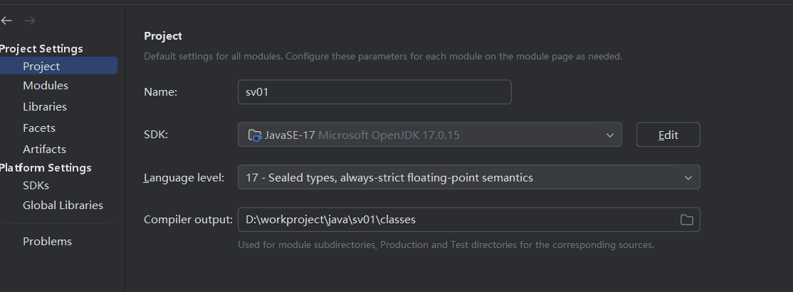
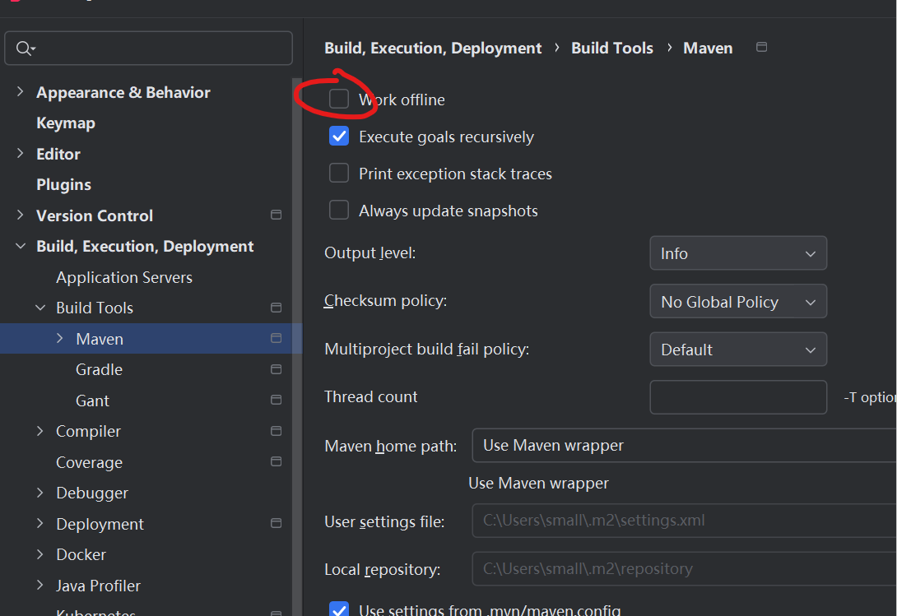
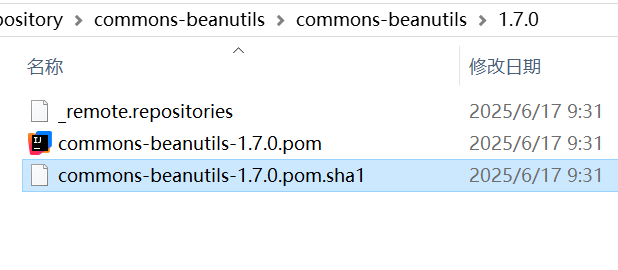

bookCollapseSection: true weight: 2
安装mingw-w64
- 官网
https://www.mingw-w64.org/downloads/#sources - 下载
https://sourceforge.net/p/mingw-w64/mingw-w64/ci/master/tree/
vscode 不能直接复制粘贴文件，可以拖拽
vscode 分为两个版本：user版本和System版本，user版本应该是不能拖拽的，system版本可以拖拽，官网下载system版本
选择 Other downloads
 选择System Installer 版本下载
选择System Installer 版本下载

-
windows新终端

-
可以自定义主题
-
打开设置

-
在这里选择一个喜欢的 主题

将选择好的主题配置信息，放在下图
schemes集合里
修改上图
list增加colorScheme名字对应添加的schemes中的name -
不够炫酷？修改背景图片，
"backgroundImage": "E:\\bg.png",
"backgroundImageOpacity": 0.3,
"backgroundImageStretchMode":"none", # 有四个选项 uniformToFill | none | fill | uniform

注意图片路径的反斜杠-转义或者用正斜杠：'/' 否则会设置失败
最终效果：
 重新打开终端，ok
重新打开终端，ok
clion配置toolschains:
- mingw64
- wsl - ubuntu
- 打开终端
- 进入subsystem,安装ssh
small@small:~$ sudo apt-get install ssh [sudo] password for small: Reading package lists... Done Building dependency tree Reading state information... Done openssh-server is already the newest version (1:8.2p1-4ubuntu0.2). 0 upgraded, 0 newly installed, 0 to remove and 0 not upgraded. - 编辑ssh配置文件：
small@small:/etc/ssh$ sudo vi sshd_config # 解开以下注释 Port 2222 AddressFamily any ListenAddress 0.0.0.0 ListenAddress :: # 还有这里 # To disable tunneled clear text passwords, change to no here! PasswordAuthentication yes - 启动ssh
small@small:/etc/ssh$ sudo service ssh start * Restarting OpenBSD Secure Shell server sshd - clion 测试链接就 ok了！
WSL 默认是不开启systemctl命令的,开启方法：
-
安装daemonize
sudo apt-get install daemonize
-
执行以下命令：
sudo daemonize /usr/bin/unshare --fork --pid --mount-proc /lib/systemd/systemd --system-unit=basic.target
exec sudo nsenter -t $(pidof systemd) -a su - $LOGNAME
wsl linux 连不上网
解决办法：管理员权限打开命令行工具
wsl --shutdown
netsh winsock reset
netsh int ip reset all
netsh winhttp reset proxy
ipconfig /flushdns
重启电脑，重试
检查当前运行的wsl版本
wsl -l -v
wsl --set-version <distro name> 2，将 <distro name> 替换为要更新的 Linux 发行版的名称。
例如，wsl --set-version Ubuntu-20.04 2 会将 Ubuntu 20.04 发行版设置为使用 WSL 2
开发环境修改wsl 默认登录用户为root
1. 现在用的是ubuntu，找到安装目录
C:\Users\用户名\AppData\Local\Microsoft\WindowsApps\ubuntu版本.exe config --default-user root

2. 执行命令
ubuntu2004.exe config --default-user root
3. 重新进入wsl,就是root用户了
Set-ExecutionPolicy Bypass -Scope Process -Force; [System.Net.ServicePointManager]::SecurityProtocol = [System.Net.ServicePointManager]::SecurityProtocol -bor 3072; iex ((New-Object System.Net.WebClient).DownloadString('https://chocolatey.org/install.ps1'))
powershell 查看环境变量
语法：$env:环境变量名称
# $env 后面紧跟要查看的环境变量名称
PS C:\Users\cao_c> $env:GOPATH
D:\workproject\go
设置环境变量
$env:name=value
系统安装过程中常见问题 汇总
1. windows只能安装到GPT磁盘如何解决
-
进入选择语言界面操作：shift+F10 ，进入命令行操作；
-
输入命令：
- diskpart
- list disk （列出所有磁盘）
- select disk 0 （选中要安装的磁盘）这里是零
- clean （注意：
这一步是格式化磁盘了） - convert gpt 转换完之后也可以直接退出，重新进入系统引导安装流程了
- list partition
- create partition efi size=1000 (单位是M)
- create partition msr size=1280
- create partition primary size=102400 （根据需要设定分区大小）
- exit 退出命令行
-
重新进入安装流程，选择设定好的分区安装系统就ok了
无法生成D:config.msi下的常规子目录的列表，拒绝访问。怎么解决
无法生成D:config.msi下常规子文件夹的列表拒绝访问错误。
修改
打开注册表 ：win+R + regedit
HKEY_CURRENT_USER/Software/Microsoft/Windows/CurrentVersion/Explorer/User Shell Folders/下Personal
shell中输入python等 关键字会跳转到应用商店
去掉
WindowsApps在环境变量中
bookCollapseSection: true weight: 2
bookCollapseSection: true weight: 3
float： 漂浮在页面上层，也就是Z轴
漂浮元素不占据原有位置；
漂浮起来后会先找依赖，根节点或一同漂浮的元素
bookCollapseSection: true weight: 3
数据库连接失败
Error: ER_NOT_SUPPORTED_AUTH_MODE: Client does not support authentication protocol requested by server; consider upgrading MySQL client
at Handshake.Sequence._packetToError (D:\WorkProject\DeepLearning\python_basic\node_modules\mysql\lib\protocol\sequences\Sequence.js:47:14)
at Handshake.ErrorPacket (D:\WorkProject\DeepLearning\python_basic\node_modules\mysql\lib\protocol\sequences\Handshake.js:123:18)
at Protocol._parsePacket (D:\WorkProject\DeepLearning\python_basic\node_modules\mysql\lib\protocol\Protocol.js:291:23)
at Parser._parsePacket (D:\WorkProject\DeepLearning\python_basic\node_modules\mysql\lib\protocol\Parser.js:433:10)
at Parser.write (D:\WorkProject\DeepLearning\python_basic\node_modules\mysql\lib\protocol\Parser.js:43:10)
at Protocol.write (D:\WorkProject\DeepLearning\python_basic\node_modules\mysql\lib\protocol\Protocol.js:38:16)
at Socket.<anonymous> (D:\WorkProject\DeepLearning\python_basic\node_modules\mysql\lib\Connection.js:88:28)
at Socket.<anonymous> (D:\WorkProject\DeepLearning\python_basic\node_modules\mysql\lib\Connection.js:526:10)
at Socket.emit (events.js:315:20)
at addChunk (_stream_readable.js:302:12)
--------------------
at Protocol._enqueue (D:\WorkProject\DeepLearning\python_basic\node_modules\mysql\lib\protocol\Protocol.js:144:48)
at Protocol.handshake (D:\WorkProject\DeepLearning\python_basic\node_modules\mysql\lib\protocol\Protocol.js:51:23)
at Connection.connect (D:\WorkProject\DeepLearning\python_basic\node_modules\mysql\lib\Connection.js:116:18)
at Object.<anonymous> (D:\WorkProject\DeepLearning\python_basic\catch\game\test.js:10:12)
at Module._compile (internal/modules/cjs/loader.js:1200:30)
at Object.Module._extensions..js (internal/modules/cjs/loader.js:1220:10)
at Module.load (internal/modules/cjs/loader.js:1049:32)
at Function.Module._load (internal/modules/cjs/loader.js:937:14)
at Function.executeUserEntryPoint [as runMain] (internal/modules/run_main.js:71:12)
at internal/main/run_main_module.js:17:47 {
code: 'ER_NOT_SUPPORTED_AUTH_MODE',
errno: 1251,
sqlMessage: 'Client does not support authentication protocol requested by server; consider upgrading MySQL client',
sqlState: '08004',
fatal: true
}
解决办法：
ALTER USER 'root'@'localhost' IDENTIFIED WITH mysql_native_password BY '123456';
flush privileges;
试了之后不好使！
查看版本
npm -v
更新
npm install -g npm
指定版本更新
npm -g install npm@6.8.0
清理
npm cache clean --force
查看当前使用的源
npm config get registry
重置为官方源
npm config set registry https://registry.npmjs.org/q
修改国内源
# 阿里源升级
http://npm.taobao.org => http://npmmirror.com
http://registry.npm.taobao.org => http://registry.npmmirror.com
1. 临时修改源
npm --registry http://registry.npmmirror.com install express
2. 永久修改
npm config set registry http://registry.npmmirror.com
使用国内镜像，可以使用 cnpm 命令行,npm的定制版
npm install -g cnpm --registry=https://registry.npmmirror.com
node -V
npm install gitbook-cli -g
gitbook -V
官网
https://nodejs.org/en/download/
bookCollapseSection: true weight: 3
vue 和jinjia2模板冲突：
- 修改vue模板：
delimiters: ['{[', ']}']
- 修改jinjia2模板：
app.jinja_env.variable_start_string = '[['
app.jinja_env.variable_end_string = ']]'
bookCollapseSection: true weight: 2
1. 生成公钥
ssh-keygen -t rsa -C "xxxxx@xxxxx.com"
或
ssh-keygen -t ed25519 -C "xxxxx@xxxxx.com"
两种操作一样只是生成密钥的加密方式不同
2. 查看公钥
cat ~/.ssh/id_rsa.pub
PS C:\Users\sss> cat ~/.ssh/id_ed25519.pub
ssh-ed25519 AAAAC3NzaC1lZDI1NTE5AAAAIL7iL5mVSeEYnMJvNhpTxZR/rv2WApe2+IkfL4iXlfCu xxxxx@xxx.com
将本地项目提交到远程仓库需要以下操作：
1. 本地提交
git init 初始化本地仓库
git add .
git commit -m "###"
2. 添加目标仓库地址
git remote add origin git@xx.xx.xx.xx:repos/xxx/xxx/xxx.git
3. 同步到远程仓库，先 pull 后 push
# 允许一些无关联的历史
git pull origin master --allow-unrelated-histories
git push origin 本地分支:远程分支
# 强制进行push
git push origin master -f
修改远程仓库地址3种方式
1. 直接修改
git remote set-url origin [url]
# 可以添加多个仓库地址，也就意味着可以同时把代码提交到多个仓库
git remote set-url --add origin [url]
2. 先删除后修改
删除
git remote rm origin
查看 remote url
git remote -v
3. 直接修改项目目录下.git 文件夹下config配置文件
[core]
repositoryformatversion = 0
filemode = false
bare = false
logallrefupdates = true
symlinks = false
ignorecase = true
[remote "origin"]
url = git@gitee.com:username/test.git //替换为目标仓库地址
fetch = +refs/heads/*:refs/remotes/origin/*
[branch "master"]
remote = origin
merge = refs/heads/master
常见问题
! [rejected] master -> master (fetch first) error: failed to push some refs to 'gitee.com:smallcgq/document.git' hint: Updates were rejected because the remote contains work that you do hint: not have locally. This is usually caused by another repository pushing hint: to the same ref. You may want to first integrate the remote changes hint: (e.g., 'git pull ...') before pushing again. hint: See the 'Note about fast-forwards' in 'git push --help' for details
- --force 强制提交到master分支
git push --force origin master
branch
创建分支
git branch dev
切换分支
git checkout dev
提交分支
git push origin dev
合并分支
先切换到要合并的分支
git checkout master 同步代码 git pull origin master 合并代码 git merge dev 这样dev分支就合并到了master
删除本地分支
git branch -d branchname
强制删除分支 -D
git branch -D branchname
删除远程分支
git push origin --delete branchname
tag
附注标签 ：
git tag -a versionCode -m “1.2版本”
查看标签：
git show tag
切换标签：
git checkout tagname
git push origin --tag
打标签
git tag -a mirror_v1.3_app_v2.0.12
删除本地TAG
git tag -d v20190514
删除远程TAG
git push origin :refs/tags/v3.3.2
撤销
撤销是在本地，回滚是操作远程
- 在工作区的代码
git checkout -- a.txt # 丢弃某个文件，或者
git checkout -- . # 丢弃全部
注意：git checkout – . 丢弃全部，也包括：新增的文件会被删除、删除的文件会恢复回来、修改的文件会回去。这几个前提都说的是，回到暂存区之前的样子。对之前保存在暂存区里的代码不会有任何影响。对commit提交到本地分支的代码就更没影响了。当然，如果你之前压根都没有暂存或commit，那就是回到你上次pull下来的样子了。
- 代码git add到缓存区，并未commit提交
## 将本地commit的内容撤回，修改的文件内容不会消失
git reset HEAD~
git reset HEAD .
#或者
git reset HEAD a.txt
这个命令仅改变暂存区，并不改变工作区，这意味着在无任何其他操作的情况下，工作区中的实际文件同该命令运行之前无任何变化
- 文件执行了git add操作，但想撤销对其的修改（index内回滚）
# 取消暂存
git reset HEAD fileName
# 撤销修改
git checkout fileName
- 修改的文件已被git commit，但想再次修改不再产生新的Commit
# 修改最后一次提交
git add sample.txt
git commit --amend -m"说明"
- 已在本地进行了多次git commit操作，现在想撤销到其中某次Commit
git reset [--hard|soft|mixed|merge|keep] [commit|HEAD]
已add，但是没commit
git reset HEAD~
已commit，不改变代码，仅仅只是想取消这个操作
git reset --soft HEAD^ # ^ 一次提交 ^^ 两次提交
回滚 （回滚是远程仓库操作，撤销是本地操作）
已进行git push，即已推送到远程仓库中。我们将已被提交到“远程仓库”的代码还原操作叫做回滚！
注意：对远程仓库做回滚操作是有风险的，需提前做好备份和通知其他团队成员！
1. 撤销指定文件到指定版本
# 查看指定文件的历史版本
git log <filename>
# 回滚到指定commitID
git checkout <commitID> <filename>
2. 删除最后一次远程提交
-
使用revert
git revert HEAD git push origin master -
使用reset
git reset --hard HEAD^ git push origin master -f
二者区别：
revert是放弃指定提交的修改，但是会生成一次新的提交，需要填写提交注释，以前的历史记录都在；reset是指将HEAD指针指到指定提交，历史记录中不会出现放弃的提交记录。
回滚某次提交
# 找到要回滚的commitID
git log
git revert commitID
删除某次提交
git log --oneline -n5

git rebase -i "commit id"^
注意：需要注意最后的^号，意思是commit id的前一次提交
git rebase -i "8475cb5"^
删除文件夹
git rm --cached -r dir_name
删除文件
git rm --cached filename
删除后不用git add 直接提交
git commit -m "desc"
提交
git push
branch
tag
附注标签 ：
git tag -a versionCode -m “1.2版本”
查看标签：
git show tag
切换标签：
git checkout tagname
git push origin --tag
打标签
git tag -a mirror_v1.3_app_v2.0.12
删除本地TAG
git tag -d v20190514
删除远程TAG
git push origin :refs/tags/v3.3.2
第一次使用git，没有环境？
1. 先安装git
2. 生成公钥，用来添加到远程仓库
- 生成公钥
# 生成公钥，然后一路回车
ssh-keygen -t rsa -C "cao_cgq@163.com"
- 查看公钥

3. 复制公钥，打开码云-> 个人头像点设置->找到安全设置->SSH公钥

添加完公钥之后，就可以接下来的步骤了
怎么样将代码提交到远程仓库
1. 在码云新建仓库，beego_first

2. 本地项目路径下初始化仓库
git init

3. 本地项目添加远程仓库
# git remote add origin 仓库地址
git remote add origin git@gitee.com:SmallMrCao/beego_first.git

4. 添加完之后先pull，然后再add
git pull
git add *
出现这个问题，说明在add之前没有pull，需要执行以下命令，把无关的内容pull下来

git pull origin master --allow-unrelated-histories
5. 最后执行提交就完成了
git push
gitlab 删除默认main 分支
- 将默认分支修改为master
Settings -> Repository -> Default branch - Repository -> Branches -> 删除
拉取主仓库
同步主项目加上 --recurse-submodules 递归拉取子项目
git clone git@github.com:smallcgq/xbook.git --recurse-submodules
添加其他仓库到当前仓库
git submodule add https://github.com/alex-shpak/hugo-book themes/book
git clone https://github.com/alex-shpak/hugo-book --recursive
- 添加完成项目根目录下会多出一个
.gitmodules文件
同步其他仓库更新
//一步到位，不用挨个查找，直接遍历一遍
git submodule foreach git pull
删除submodule
git submodule deinit themes/book
主要目录介绍
- / ：根目录，所有的目录、文件、设备都在/之下，/就是Linux文件系统的组织者，也是最上级的领导者。
- /bin ：bin 就是二进制（binary）英文缩写。在一般的系统当中，都可以在这个目录下找到linux常用的命令。系统所需要的那些命令位于此目录。
- /boot ：Linux的内核及引导系统程序所需要的文件目录，比如 vmlinuz initrd.img 文件都位于这个目录中。在一般情况下，GRUB或LILO系统引导管理器也位于这个目录。
- /cdrom ：这个目录在刚刚安装系统的时候是空的。可以将光驱文件系统挂在这个目录下。例如：mount /dev/cdrom /cdrom
- /dev ：dev 是设备（device)的英文缩写。这个目录对所有的用户都十分重要。因为在这个目录中包含了所有linux系统中使用的外部设备。但是这里并不是放的外部设备的驱动程序。这一点和常用的windows,dos操作系统不一样。它实际上是一个访问这些外部设备的端口。可以非常方便地去访问这些外部设备，和访问一个文件，一个目录没有任何区别。
- /etc ：etc这个目录是linux系统中最重要的目录之一。在这个目录下存放了系统管理时要用到的各种配置文件和子目录。要用到的网络配置文件，文件系统，x系统配置文件，设备配置信息，设置用户信息等都在这个目录下。
- /home：如果建立一个用户，用户名是"xx",那么在/home目录下就有一个对应的/home/xx路径，用来存放用户的主目录。
- /lib：lib是库（library）英文缩写。这个目录是用来存放系统动态连接共享库的。几乎所有的应用程序都会用到这个目录下的共享库。因此，千万不要轻易对这个目录进行什么操作，一旦发生问题，系统就不能工作了。
- /lost+found ：在ext2或ext3文件系统中，当系统意外崩溃或机器意外关机，而产生一些文件碎片放在这里。当系统启动的过程中fsck工具会检查这里，并修复已经损坏的文件系统。正在上传、重新上传、取消Linux系统有时系统发生问题，有很多的文件被移到这个目录中，可能会用手工的方式来修复，或移到文件到原来的位置上。
- /mnt ：这个目录一般是用于存放挂载储存设备的挂载目录的，比如有cdrom等目录。可以参看/etc/fstab的定义。
- /media ：有些linux的发行版使用这个目录来挂载那些usb接口的移动硬盘（包括U盘）、CD/DVD驱动器等等。
- /opt ：这里主要存放那些可选的程序。
- /proc ：可以在这个目录下获取系统信息。这些信息是在内存中，由系统自己产生的。
- /root ：Linux超级权限用户root的家目录。
- /sbin ：这个目录是用来存放系统管理员的系统管理程序。大多是涉及系统管理的命令的存放，是超级权限用户root的可执行命令存放地，普通用户无权限执行这个目录下的命令，这个目录和/usr/sbin ：/usr/X11R6/sbin或/usr/local/sbin目录是相似的，凡是目录sbin中包含的都是root权限才能执行的。
- /selinux ：对SElinux的一些配置文件目录，SElinux可以让linux更加安全。
- /srv ： 服务启动后，所需访问的数据目录，举个例子来说，www服务启动读取的网页数据就可以放在/srv/www中
- /sys ：Linux 内核中设计较新的一种虚拟的基于内存的文件系统，它的作用与 proc 有些类似，但除了与 proc 相同的具有查看和设定内核参数功能之外，还有为 Linux 统一设备模型作为管理之用。
- /tmp ：临时文件目录，用来存放不同程序执行时产生的临时文件。有时用户运行程序的时候，会产生临时文件。/tmp就用来存放临时文件的。/var/tmp目录和这个目录相似。
- /usr：这是linux系统中占用硬盘空间最大的目录。用户的很多应用程序和文件都存放在这个目录下。在这个目录下，可以找到那些不适合放在/bin或/etc目录下的额外的工具
- /usr/local ：这里主要存放那些手动安装的软件，即不是通过“新立得”或apt-get安装的软件。它和/usr目录具有相类似的目录结构。让软件包管理器来管理/usr目录，而把自定义的脚本（scripts)放到/usr/local目录下面。
- /usr/share ：系统共用的东西存放地，比如 /usr/share/fonts 是字体目录，/usr/share/doc和/usr/share/man帮助文件。
- /var ：这个目录的内容是经常变动的，看名字就知道，可以理解为vary的缩写，/var下有/var/log 这是用来存放系统日志的目录。/var/ www目录是定义Apache服务器站点存放目录；/var/lib 用来存放一些库文件，比如MySQL的，以及MySQL数据库的的存放地。
删除本地分支
git branch -d branchname
//强制删除 -D
git branch -D branchname
删除远程分支
git push origin --delete branchname
删除文件夹
git rm --cached -r dir_name
删除文件
git rm --cached filename
删除后不用git add 直接提交
git commit -m "desc"
提交
git push
回滚 （回滚是远程仓库操作，撤销是本地操作）
已进行git push，即已推送到远程仓库中。我们将已被提交到“远程仓库”的代码还原操作叫做回滚！
注意：对远程仓库做回滚操作是有风险的，需提前做好备份和通知其他团队成员！
1. 撤销指定文件到指定版本
# 查看指定文件的历史版本
git log <filename>
# 回滚到指定commitID
git checkout <commitID> <filename>
2. 删除最后一次远程提交
-
使用revert
git revert HEAD git push origin master -
使用reset
git reset --hard HEAD^ git push origin master -f
二者区别：
revert是放弃指定提交的修改，但是会生成一次新的提交，需要填写提交注释，以前的历史记录都在；reset是指将HEAD指针指到指定提交，历史记录中不会出现放弃的提交记录。
回滚某次提交
# 找到要回滚的commitID
git log
git revert commitID
删除某次提交
git log --oneline -n5
git rebase -i "commit id"^
注意：需要注意最后的^号，意思是commit id的前一次提交
git rebase -i "8475cb5"^
撤销
撤销是在本地，回滚是操作远程
- 在工作区的代码
git checkout -- a.txt # 丢弃某个文件，或者
git checkout -- . # 丢弃全部
注意：git checkout – . 丢弃全部，也包括：新增的文件会被删除、删除的文件会恢复回来、修改的文件会回去。这几个前提都说的是，回到暂存区之前的样子。对之前保存在暂存区里的代码不会有任何影响。对commit提交到本地分支的代码就更没影响了。当然，如果你之前压根都没有暂存或commit，那就是回到你上次pull下来的样子了。
- 代码git add到缓存区，并未commit提交
## 将本地commit的内容撤回，修改的文件内容不会消失
git reset HEAD~
git reset HEAD .
#或者
git reset HEAD a.txt
这个命令仅改变暂存区，并不改变工作区，这意味着在无任何其他操作的情况下，工作区中的实际文件同该命令运行之前无任何变化
- 文件执行了git add操作，但想撤销对其的修改（index内回滚）
# 取消暂存
git reset HEAD fileName
# 撤销修改
git checkout fileName
- 修改的文件已被git commit，但想再次修改不再产生新的Commit
# 修改最后一次提交
git add sample.txt
git commit --amend -m"说明"
- 已在本地进行了多次git commit操作，现在想撤销到其中某次Commit
git reset [--hard|soft|mixed|merge|keep] [commit|HEAD]
已add，但是没commit
git reset HEAD~
已commit，不改变代码，仅仅只是想取消这个操作
git reset --soft HEAD^ # ^ 一次提交 ^^ 两次提交
bookCollapseSection: true weight: 2
1. 创建磁盘阵列
`ctrl+r` 创建磁盘阵列
2. 启用磁盘阵列：F12 进入bios 选择 dataseting 选择 raid
3. 安装系统 f2 选择U盘安装
- 按
e把DVD改成U盘，那么得先知道U盘是哪个 - 按
c进入命令行，blkid查看详细盘符说明 - hd:/dev/sda4 quit
- ctrl + x 执行安装流程
设置grub2 分辨率
- 进入
grub命令行
在grub启动界面，按下c键进入命令行界面 - 查询支持的分辨率
输入videoinfo得到支持的分辨率列表 - 命令行设置选择的分辨率
输入terminal_output console进入终端模式，输入set gfxmode=1024x768(x 不是*) - 退出
terminal_output gfxterm退出到图形模式
进入系统设置
/boot/grub/grub.cfg
键盘失灵
1.安装软件后键盘鼠标失灵，需要安装xserver包 xserver-xorg-input-all 保证电脑能联网，或者通过ssh远程连接
sudo apt install xserver-xorg-input-all
给系统设置固定IP
定位到目录：
cd /etc/sysconfig/network-scripts
ifcfg-em1 ifdown-eth ifdown-ppp ifup ifup-ipv6 ifup-routes init.ipv6-global
ifcfg-em1.bak ifdown-ib ifdown-routes ifup-aliases ifup-isdn ifup-sit network-functions
ifcfg-em2 ifdown-ippp ifdown-sit ifup-bnep ifup-plip ifup-Team network-functions-ipv6
ifcfg-lo ifdown-ipv6 ifdown-Team ifup-eth ifup-plusb ifup-TeamPort
ifdown ifdown-isdn ifdown-TeamPort ifup-ib ifup-post ifup-tunnel
ifdown-bnep ifdown-post ifdown-tunnel ifup-ippp ifup-ppp ifup-wireless
vi 编辑 ifcfg-em1文件， 这个文件是对应网卡的脚本内容，直接修改：增加如下几项，包括IP地址，网关等等
IPADDR="192.168.2.6"
NETMASK="255.255.255.0"
GATEWAY="192.168.1.1"
NETWORK="192.168.1.0"
DNS1="192.168.1.1"
修改完成后，重启network
service network restart
ending...
华为源
sudo sed -i "s@http://.*archive.ubuntu.com@http://repo.huaweicloud.com@g" /etc/apt/sources.list
sudo sed -i "s@http://.*security.ubuntu.com@http://repo.huaweicloud.com@g" /etc/apt/sources.list
# 如果之前用的aliyun的
sudo sed -i "s@http://.*mirrors.aliyun.com@http://repo.huaweicloud.com@g" /etc/apt/sources.list
sudo sed -i "s@http://.*mirrors.aliyun.com@http://repo.huaweicloud.com@g" /etc/apt/sources.list
阿里源
# 先备份原sources.list 文件
sudo cp /etc/apt/sources.list /etc/apt/sources.list.bak
# sed 命令替换域名
sudo sed -i 's/security.ubuntu/mirrors.aliyun/g' /etc/apt/sources.list
sudo sed -i 's/archive.ubuntu/mirrors.aliyun/g' /etc/apt/sources.list
sudo apt update
sudo apt-get upgrade //更新已安装的包到最新，这个是可选的
sudo sed -i 's/repo.huaweicloud/mirrors.aliyun/g' /etc/apt/sources.list
sudo sed -i 's/repo.huaweicloud/mirrors.aliyun/g' /etc/apt/sources.list
修改系统时区
sudo rm -f /etc/localtime
sudo ln -s /usr/share/zoneinfo/Asia/Shanghai /etc/localtime
source:
https://m.php.cn/article/488386.html
卸载软件
- apt-get autoremove 删除相关联的所有包
sudo apt-get autoremove docker docker-ce docker-engine docker.io containerd runc
- 看看还有没有
dpkg -l | grep docker
- 卸载一切有关联的软件
sudo apt-get autoremove docker-ce-*
- 删除配置和相关目录
sudo rm -rf /etc/systemd/system/docker.service.d
sudo rm -rf /var/lib/docker
- 卸载完毕
docker --version
定时任务
- 查看定时任务
crontab -l
- 编辑定时任务
crontab -e
每周五23点定时关机
0 23 * * 5 /usr/sbin/shutdown now
命令必须是完整路径：/usr/sbin/shutdown
查看命令路径：which
| 命令 | 描述 | 注解 |
|---|---|---|
| ls -h | 比如:20M 文件大小以给人看的格式显示 | |
| crontab | 定时任务 | |
| cat filename | 查看文件 | |
| tail filename -n linenum | 查看文件指定多少行 | |
| reboot | 普通重启 | |
| shutdown -r now | 立即重启(root) | |
| shutdown -r 10 | 10分钟后重启 | |
| shutdown -r 20:00 | 8点重启 | |
| halt | 立刻关机 | |
| poweroff | 立刻关机 | |
| shutdown -h now | 立刻关机(root) | |
| shutdown -h 10 | 10分钟后关机 | |
| ps | 查找进程 | |
| sudo apt-get remove | 删除软件 | 不会删除配置文件 |
| sudo apt-get purge mysql | 彻底删除 |
文件
| 命令 | 描述 | 注解 |
|---|---|---|
| scp | 上传下载文件 | |
| scp root@host:/root/log.txt /log.txt | 下载文件 | |
| scp /log.txt root@host:/root/log.txt | 上传文件 | |
| scp -r root@host:/root/logs /path | 下载文件夹 | |
| scp -r /path root@host:/root/logs | 上传文件夹 | |
| du -sh ./* | 输出当前目录包含的所有文件大小 | 方便用于查找大文件 |
| df -h | 输出当前目录下所有文件总大小 | 查看存储情况 |
tar 压缩文件
- 文件解压缩
tar -xvf xxx.tar
- 查看压缩文件
tar -t xxx.tar
sed 流编辑
- p 输出文件指定行
sed -n '1p' text.txt
1. 拷贝或创建软链接 -> /etc/systemd/system
sudo cp /lib/systemd/system/rc-local.service /etc/systemd/system
2. 编辑 rc-local.service 文件，增加如下内容：
[Install]
WantedBy=multi-user.target
Alias=rc-local.service
3. 创建/etc/rc.local
#!/bin/sh
/home/zouni88/dns/alidns dns &
4. 增加可执行权限
chmod +x /etc/rc.local
最后测试
启动
systemctl start rc-local.service
查看状态
system status rc-local.service
进程相关
# 查找进程
ps auxf |grep uwsgi
# 查看当前进程
pstree -ap|grep gunicorn
# 杀死 进程
kill -9 544
内核版本
uname -a
所有版本信息
lsb_release -a
centos 查看版本
cat /etc/redhat-release
结果
CentOS Linux release 8.1.1911 (Core)
a. 获取当前IP，优先显示IPV6：
https://ip.netarm.com
b. 获取IPV4：
https://ipv4.netarm.com
c. 获取IPV6：
https://ipv6.netarm.com查看硬盘使用情况
1. 查看挂载的硬盘空间使用情况
df -h
2. 当前目录下文件硬盘使用
du -h
3. 推荐，查看所有硬盘
lsblk
blkid
4. fdisk -l 硬盘名|分区名 命令可以显示或操作磁盘分区表
fdisk -l
fdisk -l /dev/sda
查看大文件
du -h -x --max-depth=1
查看硬盘使用情况
df -h
查看大文件
du -h -x --max-depth=1
查看指定端口占用情况
netstat -apn|grep 8888
lsof -i:8080
linux 设置静态IP
- 查看网卡
root@zouni:~# ifconfig
eno1: flags=4163<UP,BROADCAST,RUNNING,MULTICAST> mtu 1500
inet 192.168.1.6 netmask 255.255.255.0 broadcast 192.168.1.255
inet6 fe80::2247:47ff:fe98:9e30 prefixlen 64 scopeid 0x20<link>
inet6 240e:305:7880:36d2:2247:47ff:fe98:9e30 prefixlen 64 scopeid 0x0<global>
ether 20:47:47:98:9e:30 txqueuelen 1000 (Ethernet)
RX packets 15733 bytes 3827041 (3.8 MB)
RX errors 0 dropped 8440 overruns 0 frame 0
TX packets 3586 bytes 376173 (376.1 KB)
TX errors 0 dropped 0 overruns 0 carrier 0 collisions 0
device interrupt 16
enp3s0: flags=4099<UP,BROADCAST,MULTICAST> mtu 1500
ether 00:e0:51:46:0b:01 txqueuelen 1000 (Ethernet)
RX packets 0 bytes 0 (0.0 B)
RX errors 0 dropped 0 overruns 0 frame 0
TX packets 0 bytes 0 (0.0 B)
TX errors 0 dropped 0 overruns 0 carrier 0 collisions 0
lo: flags=73<UP,LOOPBACK,RUNNING> mtu 65536
inet 127.0.0.1 netmask 255.0.0.0
inet6 ::1 prefixlen 128 scopeid 0x10<host>
loop txqueuelen 1000 (Local Loopback)
RX packets 14175 bytes 21113848 (21.1 MB)
RX errors 0 dropped 0 overruns 0 frame 0
TX packets 14175 bytes 21113848 (21.1 MB)
TX errors 0 dropped 0 overruns 0 carrier 0 collisions 0
- 设置网卡配置
root@zouni:/etc/network# cd /etc/netplan
root@zouni:/etc/netplan# ls
00-installer-config.yaml
root@zouni:/etc/netplan# vi 00-installer-config.yaml
# This is the network config written by 'subiquity'
network:
ethernets:
eno1:
dhcp4: no
dhcp6: no
addresses: [192.168.1.6/24]
optional: true
gateway4: 192.168.1.1
nameservers:
addresses: [192.168.1.1,114.114.114.114]
enp3s0:
dhcp4: true
version: 2
- 重启网卡
root@zouni:/etc/netplan# netplan apply
Linux 防火墙 ufw firewalld iptables
- 默认：iptables
2. ubuntu : ufw
- ufw 查询防火墙状态
查看开放端口：
sudo ufw status
允许80端口开放：
sudo ufw allow 80
允许22端口开放：
sudo ufw allow 22
启动防火墙：
sudo ufw enable
重启防火墙使端口配置生效：
sudo ufw reload
ufw status
# 关闭
ufw disable
3. 红帽系列 firewall
systemctl status firewalld
# 启动防火墙
systemctl start firewalld
# 停止防火墙
systemctl stop firewalld
# 永久停用防火墙
systemctl disable firewalld
# 启用防火墙
systemctl enable firewalld
- 防火墙开放指定端口
# permanent 永久
# 开放8080端口
firewall-cmd --permanent --zone=public --add-port=8080/tcp
# 查询8080端口开放情况，若返回success，则为开放成功
# --zone docker
firewall-cmd --zone=public --query-port=8080/tcp
# 重启防火墙
firewall-cmd --reload
- 其它防火墙命令
启动： systemctl start firewalld
查看状态： systemctl status firewalld
停止： systemctl disable firewalld
禁用： systemctl stop firewalld
启动服务：systemctl start firewalld.service
关闭服务：systemctl stop firewalld.service
重启服务：systemctl restart firewalld.service
服务的状态：systemctl status firewalld.service
在开机时启用一个服务：systemctl enable firewalld.service
在开机时禁用一个服务：systemctl disable firewalld.service
查看服务是否开机启动：systemctl is-enabled firewalld.service
查看已启动的服务列表：systemctl list-unit-files|grep enabled
查看启动失败的服务列表：systemctl --failed
查看版本： firewall-cmd --version
查看帮助： firewall-cmd --help
显示状态： firewall-cmd --state
查看所有打开的端口： firewall-cmd --zone=public --list-ports
更新防火墙规则： firewall-cmd --reload
查看区域信息: firewall-cmd --get-active-zones
查看指定接口所属区域： firewall-cmd --get-zone-of-interface=eth0
拒绝所有包：firewall-cmd --panic-on
取消拒绝状态： firewall-cmd --panic-off
查看是否拒绝： firewall-cmd --query-panic
bookCollapseSection: true weight: 3
ssh root@ip ssh登录时提示「permission denied please try again」
sudo vi /etc/ssh/sshd_config
编辑
PermitRootLogin yes 保存，重启ssh服务 service sshd restart
bookCollapseSection: true weight: 3
查看ftp默认用户主目录在哪里 Yum install finger
finger ftp [root@OX39Ø6c finger ftp Login: ftp Directory: / var/ftp Never logged in. No mail. No Plan. Name: FTP User Shell: /sbin/nologin /
修改默认目录 vim /etc/passwd
[root@OX39Ø6c vim /etc/passwd ftp:x:14:50: FTP
修改/var/ftp 为想要修改的目录路径 然后重启vsftpd服务 service vsftpd restart
如果修改之后仍不能用，需要关闭 SELinux
- 修改/etc/selinux/config文件中的SELINUX="" 为 disabled ，然后重启。
- 如果不想重启系统，使用命令setenforce 0
1.查看是否安装ftp服务
rpm -q vsftpd
2.安装ftp服务
yum install vsftpd
3.开机启动
chkconfig vsftpd on
4.启动服务
service vsftpd start
5.重新启动vsftpd
service vsftpd restart
来自 https://www.cnblogs.com/surge/p/3868270.html
修改相关配置项在 /etc/vsftpd/vsftpd.conf中
bookCollapseSection: true weight: 2
bookCollapseSection: true weight: 3
KL散度 -> 相对熵
import tensorflow as tf
# 这一步在网络初始化后
mode.summary()
tf.summary.create_file_writer('logs')
指定要监听的工作日志目录
tensorboard --logdir logs
docker run -itd --name=tensorflow -p 8888:8888 -v D:\docker\tf:/tmp -w /tmp 90338865fe9
Cannot connect:Cannot connect to the Docker daemon at tcp://localhost:2375,Is the docker daemon running?
tensorlfow math.log() 是以自然常数e为底 转化为以2为底：
根据对数换底公式：
∵

∴ loge(4)/loge(2) = log2(4) = 2
代码实例：
import tensorflow as tf
x = tf.math.log(4.)/tf.math.log(2.)
Out:
<tf.Tensor: shape=(), dtype=float32, numpy=2.0>
效果等同于 numpy log2(4)
import numpy as np
np.log2(4)
Out:
2.0
常用函数
unstack
作用：把向量按照维度拆分

gather
通过索引获取 标量或者向量

gather_nd
可以索引多维
argmax 最大值的索引
tf.argmax([1,2,3,4,5,6,7,8])
<tf.Tensor: shape=(), dtype=int64, numpy=7>
softmax 概率最大的索引
张量是一维 二维是矩阵 张量
bookCollapseSection: true weight: 4
官网地址
https://developer.nvidia.com/cuda-downloads?target_os=Linux&target_arch=x86_64&target_distro=CentOS&target_version=8&target_type=runfilelocal
wget http://developer.download.nvidia.com/compute/cuda/10.2/Prod/local_installers/cuda_10.2.89_440.33.01_linux.run
sudo sh cuda_10.2.89_440.33.01_linux.run
bookCollapseSection: true weight: 4
# %%
import tensorflow as tf
from matplotlib import pyplot as plt
x = tf.zeros([2, 2], dtype=tf.int32)
# 如果要画一个灰度图，那么如下
# 填充一个[2,2]的矩阵为128 也就是灰色值
# [[255,255],
# [255,255]]
z = tf.fill([2, 2], 128)
# 在最后一个维度展开一次，变成[2,2,1]
z = tf.expand_dims(z, axis=-1)
# 在最后一个维度平铺3次
# [2,2,3]
z = tf.tile(z, [1, 1, 3])
plt.imshow(z)
plt.show()

# %%
# 画一个红色的图，也很简单
# 三个通道不同颜色 比如洋红色的rgb色值[255,0,255]
r = tf.fill([3, 3], 255)
g = tf.zeros([3, 3],dtype=tf.int32)
b = r
img = tf.stack([r, g, b], axis=-1)
img.shape
# 一个3x3的图片就诞生了
plt.imshow(img)
plt.show()

bookCollapseSection: true weight: 2
经常遇到的问题：
读取本地存储文件权限受限
- open failed: EACCES (Permission denied)
//manifest.xml application标签
<application
android:requestLegacyExternalStorage="true"
/>
新版本 build.gralde
plugins {
id "org.springframework.boot" version "2.2.2.RELEASE"
}
旧版本
//Using legacy plugin application
buildscript {
repositories {
maven {
url "https://plugins.gradle.org/m2/"
}
}
dependencies {
classpath "org.springframework.boot:spring-boot-gradle-plugin:2.2.2.RELEASE"
}
}
apply plugin: "org.springframework.boot"
android studio 运行 main 方法 报错
SourceSet with name ‘main‘ not found
解决：./idea/gradle.xml ->
<option name="delegatedBuild" value="false" />

- colorPrimary 应用的主要色调，actionBar默认使用该颜色，Toolbar导航栏的底色
- colorPrimaryDark 应用的主要暗色调，statusBarColor默认使用该颜色
- statusBarColor 状态栏颜色，默认使用colorPrimaryDark
- windowBackground 窗口背景颜色
- navigationBarColor 底部栏颜色
- colorForeground 应用的前景色，ListView的分割线，switch滑动区默认使用该颜色
- colorBackground 应用的背景色，popMenu的背景默认使用该颜色
- colorAccent CheckBox，RadioButton，SwitchCompat等一般控件的选中效果默认采用该颜色
- colorControlNormal CheckBox，RadioButton，SwitchCompat等默认状态的颜色。
- colorControlHighlight 控件按压时的色调
- colorControlActivated 控件选中时的颜色，默认使用colorAccent
- colorButtonNormal 默认按钮的背景颜色
- editTextColor：默认EditView输入框字体的颜色。
- textColor Button，textView的文字颜色
- textColorPrimaryDisableOnly RadioButton checkbox等控件的文字
- textColorPrimary 应用的主要文字颜色，actionBar的标题文字默认使用该颜色
- colorSwitchThumbNormal: switch thumbs 默认状态的颜色. (switch off)
全局标题栏
- fitsSystemWindows 生效前提：当前页面没有标题栏，并且状态栏或者底部导航栏透明
- fitsSystemWindows = true，表示内容区不延伸到状态栏或底部导航栏
- fitsSystemWindows = false，表示内容区延伸到状态栏或底部导航栏
打开第三方站点需要保留登录状态，webview需要接受cookie，按照官方提供的API CookieManager可以实现
// 1. 在loadurl之前调用接受cookie方法
android.webkit.CookieManager cookieManager = android.webkit.CookieManager.getInstance();
cookieManager.setAcceptThi~rdPartyCookies(this,true);
// 2. onPageFinished
CookieManager.getInstance().flush();
Classloader 分为三种： 1: pathClassloader: Android 用来加载系统文件 和 应用的主文件 2: DexClassloader: Android 用来加载 jar/apk/dex 文件 3: URLClassloader: 可以加载java的jar包,但是Dalvik 虚拟机不支持这种加载方式
public class ProxyActivity extends AppCompatActivity {
private ProxyActivityInterface pluginObj;
@Override
protected void onCreate(Bundle savedInstanceState) {
super.onCreate(savedInstanceState);
//在这里拿到了真实跳转的activity 拿出来 再去启动真实的activity
String className = getIntent().getStringExtra("ClassName");
//通过反射在去启动一个真实的activity 拿到Class对象
try {
Class<?> plugClass = getClassLoader().loadClass(className);
Constructor<?> pluginConstructor = plugClass.getConstructor(new Class[]{});
//因为插件的activity实现了我们的标准
pluginObj = (ProxyActivityInterface) pluginConstructor.newInstance(new Object[]{});
pluginObj.attach(this);//注入上下文
pluginObj.onCreate(new Bundle());//一定要调用onCreate
} catch (Exception e) {
if (e.getClass().getSimpleName() .equals("ClassCastException")){
//我这里是直接拿到异常判断的 ，也可的 拿到上面的plugClass对象判断有没有实现我们的接口
finish();
Toast.makeText(this,"非法页面",Toast.LENGTH_LONG).show();
return;
}
e.printStackTrace();
}
}
]
//为什么要重写这个呢 因为这个是插件内部startactivity调用的 将真正要开启的activity的类名穿过来
//然后取出来，启动我们的占坑的activity 在我们真正要启动的赛进去
@Override
public void startActivity(Intent intent) {
String className1=intent.getStringExtra("ClassName");
Intent intent1 = new Intent(this, ProxyActivity.class);
intent1.putExtra("ClassName", className1);
super.startActivity(intent1);
}
//重写classLoader
@Override
public ClassLoader getClassLoader() {
return HookManager.getInstance().getClassLoader();
}
//重写Resource
@Override
public Resources getResources() {
return HookManager.getInstance().getResource();
}
@Override
protected void onStart() {
super.onStart();
pluginObj.onStart();
}
@Override
protected void onDestroy() {
super.onDestroy();
pluginObj.onDestroy();
}
@Override
protected void onPause() {
super.onPause();
pluginObj.onPause();
}
}
public class HookManager {
private static final HookManager ourInstance = new HookManager();
private Resources resources;
private DexClassLoader loader;
public PackageInfo packageInfo;
public static HookManager getInstance() {
return ourInstance;
}
private HookManager() {
}
//用来加载插件
public void loadPlugin(Activity activity) {
// 假如这里是从网络获取的插件 我们直接从sd卡获取 然后读取到我们的cache目录
String pluginName = "plugin.apk";
File filesDir = activity.getDir("plugin", activity.MODE_PRIVATE);
String filePath = new File(filesDir, pluginName).getAbsolutePath();
File file = new File(filePath);
if (file.exists()) {
file.delete();
}
FileInputStream is = null;
FileOutputStream os = null;
//读取的目录
try {
is = new FileInputStream(new File(Environment.getExternalStorageDirectory(), pluginName));
//要输入的目录
os = new FileOutputStream(filePath);
} catch (FileNotFoundException e) {
e.printStackTrace();
}
try {
int len = 0;
byte[] buffer = new byte[1024];
while ((len = is.read(buffer)) != -1) {
os.write(buffer, 0, len);
}
File f = new File(filePath);
if (f.exists()) {
Toast.makeText(activity, "dex overwrite", Toast.LENGTH_SHORT).show();
}
loadPathToPlugin(activity);
} catch (IOException e) {
// TODO Auto-generated catch block
e.printStackTrace();
} finally {
try {
os.close();
is.close();
} catch (IOException e) {
// TODO Auto-generated catch block
e.printStackTrace();
}
}
}
private void loadPathToPlugin(Activity activity) {
File filesDir = activity.getDir("plugin", activity.MODE_PRIVATE);
String name = "plugin.apk";
String path = new File(filesDir, name).getAbsolutePath();
//然后我们开始加载我们的apk 使用DexClassLoader
File dexOutDir = activity.getDir("dex", activity.MODE_PRIVATE);
loader = new DexClassLoader(path, dexOutDir.getAbsolutePath(), null, activity.getClassLoader());
//通过PackAgemanager 来获取插件的第一个activity是哪一个
PackageManager packageManager = activity.getPackageManager();
packageInfo = packageManager.getPackageArchiveInfo(path, PackageManager.GET_ACTIVITIES);
//然后开始加载我们的资源 肯定要使用Resource 但是它是AssetManager创建出来的 就是AssertManager 有一个addAssertPath 这个方法 但是私有的 所有使用反射
Class<?> assetManagerClass = AssetManager.class;
try {
AssetManager assertManagerObj = (AssetManager) assetManagerClass.newInstance();
Method addAssetPathMethod = assetManagerClass.getMethod("addAssetPath", String.class);
addAssetPathMethod.setAccessible(true);
addAssetPathMethod.invoke(assertManagerObj, path);
//在创建一个Resource
resources = new Resources(assertManagerObj, activity.getResources().getDisplayMetrics(), activity.getResources().getConfiguration());
} catch (Exception e) {
e.printStackTrace();
}
}
//对外提供插件的classLoader
public ClassLoader getClassLoader() {
return loader;
}
//插件中的Resource
public Resources getResource() {
return resources;
}
}
1. android studio 生成jar包
task makeJar(type: Copy) {
delete 'build/libs/mylibrary.jar' //删除已经存在的jar包
from('build/intermediates/compile_library_classes_jar/
debug/') //从该目录下加载要打包的文件,这里实际上是编译后的classes.jar文件的目录
into('build/libs/')//jar包的保存目录
include('classes.jar')//设置过滤，只打包classes文件
rename('classes.jar', 'dynamic_temp.jar')//重命名，mylibrary.jar 根据自己的需求设置
}
makeJar.dependsOn(build)
1. 找到android sdk ，以下路径配置到环境变量，目的是为了使用 dx 命令
D:\WorkRome\android\Sdk\build-tools\30.0.3
2. 一键生成 jar
- --output 最终输出jar包
- temp.jar 目标jar
dx --dex --output=object.jar temp.jar
获取APP签名信息
public static String getSingInfo(Context context) {
try {
PackageInfo packageInfo = context.getPackageManager().getPackageInfo(context.getPackageName(), PackageManager.GET_SIGNATURES);
Signature[] signs = packageInfo.signatures;
Signature sign = signs[0];
byte[] signByteArray = sign.toByteArray();
return md5(signByteArray);
} catch (Exception e) {
e.printStackTrace();
}
return null;
}
public static String md5(byte[] data){
if(data == null || data.length == 0){
return null;
}
StringBuffer hexString = new StringBuffer();
try {
MessageDigest md = MessageDigest.getInstance("MD5");
md.update(data);
byte[] hash = md.digest();
for (int i = 0; i < hash.length; i++) {
if ((0xff & hash[i]) < 0x10) {
hexString.append("0" + Integer.toHexString((0xFF & hash[i])));
} else {
hexString.append(Integer.toHexString(0xFF & hash[i]));
}
}
} catch (NoSuchAlgorithmException e) {
e.printStackTrace();
}
return hexString.toString().toUpperCase();
}
RoleManager roleManager = getSystemService(RoleManager.class);
Intent intent = roleManager.createRequestRoleIntent(RoleManager.ROLE_SMS);
startActivityForResult(intent,666);
Running Gradle task 'assembleDebug'...
卡在 Running Gradle task 'assembleDebug'... 不动
解决方案：
- 检查 ./gradle 是否下载成功
- 检查
gradle默认代理是否正常
gradle配置文件默认在~/.gradle/gradle.properties注释掉下面几行代码即可：
# Sun Jul 05 10:38:23 CST 2020
# systemProp.http.proxyHost=127.0.0.1
# systemProp.http.proxyPort=50030
# systemProp.https.proxyHost=127.0.0.1
# systemProp.https.proxyPort=50030
- 项目打包命名方式：
- apk 命名： 项目名+打包日期+版本号
- version_name 命名：version_name +
es - es:环境变量（alpha or release） 分别对应 测试环境和生产环境，后续根据项目变化进一步扩展
alpha beta release
- 发布测试版本，统一通过蒲公英平台发布
- 正式版本每一个版本统一交由测试管理并记录
bookCollapseSection: true weight: 3
注解说明
@Module ：告知hilt如何提供被注解类的实例
@InstallIn(Component::class) : 告知hilt模块用在哪个类中
@Binds : 注入函数（接口无法通过构造函数实例化）,接口添加这个注解告知hilt
- 根据函数返回类型提供哪个接口实例，
- 根据函数参数提供对应实例
@Provides: 注入函数，类不能被构造函数实例化（来自第三方库或必须通过构造函数创建实例），只能通过提供函数的方 式来获取一个实例化结果
hilt会从带注解的函数得到信息：
- 根据函数返回类型提供对应实例
- 根据函数参数提供对应实例
- 函数主体得到需要的依赖项实例
@EntryPoint：注入接口,为hilt不支持的类型注解
#workmanager 轻量级后台任务管理
worker 任务体
class DatabaseWork(context: Context, workerParams: WorkerParameters) : Worker(context,workerParams) {
companion object{
}
override fun doWork(): Result {
Log.e("cgq","start")
val data = Data.Builder().putString("cgq","woker-data").build()
setProgressAsync(data)
return Result.success()
}
}
workerRequest 执行任务
WorkerManager enqueue 添加任务
val workRequest: WorkRequest = OneTimeWorkRequestBuilder<DatabaseWork>().build()
//状态回调，添加一个任务观察者
WorkManager.getInstance(requireActivity()).getWorkInfoByIdLiveData(workRequest.id).observe(requireActivity()){
when (it.state) {
WorkInfo.State.RUNNING -> Log.e("cgq", "running======")
WorkInfo.State.CANCELLED -> Log.e("cgq", "cancelled======")
WorkInfo.State.SUCCEEDED ->Log.e("cgq", "success======")
else -> Log.e("cgq", "都不对")
}
}
WorkManager.getInstance(requireContext()).enqueue(workRequest)
bookCollapseSection: true weight: 3
android jetpack框架组件
databinding; 数据绑定库
livedata: 数据观察类，
Room: 数据库
Viewmodel: 绑定activity或者fragment生命周期，
注解
注解就是一种特殊的注释/解释，分两种情况:
1.在代码编写阶段，编译器会看到的，并且明白是什么意思；
2. 在运行阶段，反射机制，动态代理等应用。
元注解
给注解加一个注释/ 注解上的注解；比如某个注解的作用域通过元注解告诉编译器，还有注解的生命周期等。
@Target
ElementType.TYPE：允许被修饰的注解作用在类、接口和枚举上
ElementType.FIELD：允许作用在属性字段上
ElementType.METHOD：允许作用在方法上
ElementType.PARAMETER：允许作用在方法参数上
ElementType.CONSTRUCTOR：允许作用在构造器上
ElementType.LOCAL_VARIABLE：允许作用在本地局部变量上
ElementType.ANNOTATION_TYPE：允许作用在注解上
ElementType.PACKAGE：允许作用在包上
1.修改textview的约束条件
app:layout_constraintStart_toEndOf="@+id/textView3"
改为
app:layout_constraintLeft_toRightOf="@+id/textView3"
注意 其他的start end也都改为left right
2.其他属性搭配：
android:layout_height="wrap_content"
搭配：app:layout_constrainedWidth="true"
android:layout_height="wrap_content"
搭配：app:layout_constrainedHeight="false"（不写默认即false）
bookCollapseSection: true weight: 4
区间使用
1..10: 1-10 区间内的数字打印（ 包含10）
fun main() {
for(i in 1 .. 10){
print(i)
}
}
//until 不包含10 step:指定步长，每隔 两个输出一个
for(i in 1 until 10 step 2){
print(i)
}
10 downTo 1:倒着输出区间 10-1
for(i in 10 downTo 1 step 1){
print(i)
}
双冒号 :: 返回函数体
class Apply(){
var name = "cao"
var age = 12
fun print(){
println("name is $name,age is $age")
}
}
fun main() {
var app = Apply()
app.apply {
name = "zhang"
age = 1
}
val print = app::print
print()
}
bookCollapseSection: true weight: 2
常用sql
删除字段
alter table users drop column col_name;
修改字段数据类型
alter table users alter column col_name new_type;
bookCollapseSection: true weight: 3
mysql 配置
首先查看centos是否已经安装了mysql源
yum list installed mysql*
如果有就删除
yum remove mysql-community-*
安装mysql源
https://dev.mysql.com/downloads/repo/yum/
wget -i -c http://dev.mysql.com/get/mysql57-community-release-el7-10.noarch.rpm
安装mysql
yum -y install mysql57-community-release-el7-10.noarch.rpm
查看是否已经安装了数据库源
yum repolist all | grep mysql
查看数据库源
/etc/yum.repos.d/mysql-community.repo
修改源可用 mysql80 enable = 1
安装数据库服务
yum install mysql-server
启动mysql
systemctl start mysqld.service
查看状态
systemctl status mysqld.service
查看初始密码
grep "password" /var/log/mysqld.log
修改密码
mysql> ALTER USER 'root'@'localhost' IDENTIFIED BY 'new password';
mysql> ALTER USER 'root'@'%' IDENTIFIED WITH mysql_native_password BY '123456'
注意:密码设置必须要大小写字母数字和特殊符号（,/';:等）,不然不能配置成功
修改配置文件，无密码登录 编辑文件：
/etc/mysql/mysq.conf.d/mysqld.cnf
加入skip-grant-tables
跳过密码登录；
重启mysql服务
systemctl restart mysql.service
进入mysql
# mysql;
# use mysql;
# 更新密码为空
# UPDATE user SET authentication_string='' WHERE User='root' AND Host ='localhost';
# flush privileges;
退出
注释掉skip-grant-tables
重启mysql，无密码登录
开启mysql的远程访问 两种方式
- 方式1
grant all privileges on *.* to 'root'@'192.168.1.145' identified by '123456' with grant option;
flush privileges;
- 方式2
use mysql;
update user set host = '%' where user = 'root';
更细权限之后，一定要刷新一下，否则不会生效
flush privileges;
- 方式3
此处为设置root用户远程
mysql -uroot -p #输入密码
use mysql;
update user set host = '%' where user = 'root';
select host, user from user;
flush privileges;
去掉配置文件中bind-address
bind-address = 127.0.0.1
# bind-address = 127.0.0.1
bookCollapseSection: true weight: 3
容器运行 postgres
docker run -itd --name=pg -p 5678:5432 -v /home/zouni/postgres:/var/lib/postgresql/data -e POSTGRES_PASSWORD=123456 -e ALLOW_IP_RANGE=0.0.0.0/0 --restart always POSTGRES_USER='postgres' postgres
docker run -itd --name pg --restart always -e POSTGRES_USER='postgres' -e POSTGRES_PASSWORD=123456 -e ALLOW_IP_RANGE=0.0.0.0/0 -v /home/zouni/postgres:/var/lib/postgresql -p 5432:5432 postgres
docker run -itd --name mpg --restart always -e TZ=PRC -e POSTGRES_USER='root' -e POSTGRES_PASSWORD='123456' -e POSTGRES_DB='facepark' -e ALLOW_IP_RANGE=0.0.0.0/0 -v /home/zouni/postgres/data:/var/lib/postgresql/data -p 5432:5432 postgres
表字段使用geography报错
因为要使用地理坐标来表示附近用户，需要空间坐标转换
type "geography" does not exist 解决方法： CREATE EXTENSION Postgis;
时区设置
-
第一种方法

-
如果不好使，再换第二种方法：
serverTimezone Asia/Shanghai

- 相当与mysql的show databases;
select datname from pg_database;
- 相当于mysql的show tables;
SELECT table_name FROM information_schema.tables WHERE table_schema = 'public';
public 是默认的schema的名字
- 相当与mysql的describe table_name;
SELECT column_name FROM information_schema.columns WHERE table_name ='table_name';
'table_name'是要查询的表的名字
bookCollapseSection: true weight: 2
1. 下载&配置环境变量
2. 生成默认配置文件
containerd config default > d:/path
3. 启动
containerd
4. 查看版本
ctr version
dial unix /run/containerd/containerd.sock: connect: permission denied"
正常修改权限就可以了，开发电脑用的wsl2,goland-> run target-> wsl，这种方式进行开发调试的。
- 解决方法： 修改wsl 默认登录用户为root
mysql:
image: mysql:8.0
container_name: mysql-container
restart: always
environment:
# 设置 MySQL 根用户密码
MYSQL_ROOT_PASSWORD: your_root_password
# 可选：创建一个额外的数据库
MYSQL_DATABASE: your_database_name
# 可选：创建一个额外的用户并授权
MYSQL_USER: your_username
MYSQL_PASSWORD: your_user_password
ports:
# 将容器的 3306 端口映射到主机的 3306 端口
- "3306:3306"
volumes:
# 数据卷挂载，确保数据持久化
- mysql-data:/var/lib/mysql
# 可选：挂载自定义配置文件
# - ./my.cnf:/etc/mysql/conf.d/my.cnf
networks:
- mysql-network
# 可选：设置 MySQL 字符集
command: --character-set-server=utf8mb4 --collation-server=utf8mb4_unicode_ci
bookCollapseSection: true weight: 3
1. Windows 安装步骤
-
安装： 官网下载
https://hub.docker.com/对应版本 -
设置：
- 修改
registry-mirrors镜像地址- https://reg-mirror.qiniu.com
- http://hub-mirror.c.163.com/
- https://registry.docker-cn.com
- 修改
{
"registry-mirrors":[
"https://reg-mirror.qiniu.com",
"http://hub-mirror.c.163.com/",
"https://registry.docker-cn.com"
],
"builder": {
"gc": {
"defaultKeepStorage": "20GB",
"enabled": true
}
},
"experimental": false,
"features": {
"buildkit": true
}
}

2. CentOS 安装步骤
官网
https://docs.docker.com/engine/install/centos/#prerequisites 先卸载旧版本
sudo yum remove docker \
docker-client \
docker-client-latest \
docker-common \
docker-latest \
docker-latest-logrotate \
docker-logrotate \
docker-engine
安装yum-utils软件包（提供yum-config-manager 实用程序）并设置稳定的存储库。
sudo yum install -y yum-utils
sudo yum-config-manager \
--add-repo \
https://download.docker.com/linux/centos/docker-ce.repo
开始安装引擎
sudo yum install docker-ce docker-ce-cli containerd.io
启动
sudo systemctl start docker
测试是否正常
sudo docker run hello-world
镜像操作：
- 从仓库搜索镜像：
docker search image-name
搜索结果过滤:
#是否是官方提供：
docker search --filter "is-official=true" image_name
# 是否是自动化构建：
docker search --filter "is-automated=true" image_name
# 大于多少个`star`
docker search --filter stars=3 image_name
下载镜像：
docker pull image_name
- 本地镜像的查看：
docker images
- 删除：
docker rmi image_name
- 修改镜像名字：
docker tag images_id 要推送的主机地址/镜像名：版本号
- push到docker仓库
# 前提是已经在docker服务注册并创建了仓库
docker push 刚刚修改的镜像名字（要推送的主机地址/镜像名：版本号）这一长串
容器基本操作：
- 查看容器：
docker ps
- 创建容器:
docker run -itd --name=container_name images_name
-i: 以交互模式运行容器;
-d: 后台运行;
-t: 为容器重新分配一个伪输入终端;
--name: 容器名字;
- 查看所有容器:
docker ps -a
- 停止容器：
docker stop container_name
- 重启容器:
docker restart container_name
- 删除容器: # 删除之前要先停止
docker rm container_name
容器修改与保存
- 进入容器
docker exec -it container_name /bin/bash
- 修改容器提交:
docker commit -a "author" -m "modify" container_name/container_id new_image_name:tag_name
端口映射
docker run -itd --name=container_name -p 8888:80 images_name
-p8888 指的是 宿主机端口->端口映射到容器80端口 访问：127.0.0.1:8888
注意:命令顺序不能反，image_name在最后

创建容器：
docker run -itd --name=container_name images_name
常用参数说明：
-p 88:80
端口映射：
88:宿主机端口
80:容器端口
docker run -itd --name=ct_name -p 88:80 img_name
-v : 文件挂载(宿主机文件目录：容器文件目录)
-itd
-i: 以交互模式运行容器;
-d: 后台运行;
-t: 为容器重新分配一个伪输入终端;
--name
--name: 容器名字;
``
启动失败
查看日志
docker logs -f -t --tail 20 nginx
操作无权限
aa-remove-unknown
修改容器端口映射
- 编辑容器配置文件
/var/lib/docker/containers/{containersid}/hostconfig.json
root@zouni:/var/lib/docker/containers/572a9b8574dcc5077c7c4ec139e4e044e80696f78d1e658d0e735e183944cd28# ls
572a9b8574dcc5077c7c4ec139e4e044e80696f78d1e658d0e735e183944cd28-json.log hostconfig.json mounts
checkpoints hostname resolv.conf
config.v2.json hosts resolv.conf.hash
！！先关掉docker,然后修改其中绑定的端口,重启docker就可以了
,"PortBindings":{"5432/tcp":[{"HostIp":"","HostPort":"8099"}]}
端口映射，本地可以访问，远程不能访问！！！
- 检查防火墙
#查看防火墙状态，运行中
root@zouni:/# firewall-cmd --state
running
#查看放开的端口，开放这几个端口，8088为放开
root@zouni:/# firewall-cmd --list-all
You're performing an operation over default zone ('public'),
but your connections/interfaces are in zone 'docker' (see --get-active-zones)
You most likely need to use --zone=docker option.
public
target: default
icmp-block-inversion: no
interfaces:
sources:
services: dhcpv6-client ssh
ports: 8088/tcp 8099/tcp 5432/tcp 443/tcp # 开放的端口列表
protocols:
forward: yes
masquerade: no
forward-ports:
source-ports:
icmp-blocks:
rich rules:
- 检查ip转发
root@zouni:/# sysctl net.ipv4.ip_forward
net.ipv4.ip_forward = 1 # 正常 = 1
- 检查docker 网卡设置
docker容器启动后外部无法连接
1第一种
sudo service docker stop
sudo ip link set dev docker0 down %关闭docker虚拟网卡
sudo brctl delbr docker0
sudo iptables -t nat -F POSTROUTING
sudo brctl addbr docker0
sudo ip addr add 172.16.10.1/24 dev docker0
sudo ip link set dev docker0 up %开启docker虚拟网卡
systemctl restart docker
brctl命令需要安装： yum install -y bridge-utils
2.第二种
systemctl stop docker
ifconfig docker0 down
brctl delbr docker0
systemctl start docker
# 原文链接：https://blog.csdn.net/CSDN877425287/article/details/106909673
文件挂载
docker run -itd --name=small_nginx -p 8888:80 -v d:/index.html:/usr/share/nginx/html/index.html small/nginx
- -v 表示： 宿主机文件路径：容器文件路径
- -p 表示: 宿主机ip:容器ip
这里修改了nginx默认启动页面关联到本地

文件目录挂载
docker run -itd --name=small_mysql -p 33066:3306 -v d:/docker/mysql/:/var/lib/mysql/ -e MYSQL_ROOT_PASSWORD=123456 mysql
- -e 表示：向容器内传参，ex:设定数据库密码：
MYSQL_ROOT_PASSWORD=123456
docker run -itd --name=flask_mysql -p 33066:3306 -v /var/lib/mysql:/var/lib/mysql/ -e MYSQL_ROOT_PASSWORD=123456 mysql
docker打开设置
Expose daemon on tcp://localhost:2375 without TLS
 设置连接docker
设置连接docker

显示Connection successfull 表示连接成功了
接下来配置python 解释器
 如果已经创建了容器，就会自动加载
如果已经创建了容器，就会自动加载
下载镜像
# 官方提供的mysql镜像
docker pull mysql
创建容器
docker run -itd --name=mysql -p 3307:3306 -v ./data/mysql:/var/lib/mysql -e MYSQL_ROOT_PASSWORD=123456 mysql
- -p 指定3306端口映射宿主机
- -v 数据库文件映射到宿主机
- -e 指定参数 ‘MYSQL_ROOT_PASSWORD’ 设置数据库密码
进入容器
docker exec -it mysql_wxc bash
容器互联
docker run -itd --name=small_nginx --link container_name:alias -v path:local_path image_name
- --link 表示：被挂载容器名：别名
docker run -itd --name=flask_t -p 81:80 --link flask_mysql:flask_mysql -v /root/small/mysql/:/var/lib/mysql flask:1.2
搭建本地仓库
搜索 官方仓库
docker search registry
下载仓库
docker pull registry
创建容器
docker run -d -p 5000:5000 --restart=always --privileged=true --name=registry-small -v d:/docker/registry:/var/lib/registry registry
修改镜像，准备推送 到仓库容器
docker tag image_id registry_name:port/images_name
修改hosts 增加 域名
127.0.0.1 registry_name
推送镜像到私有仓库
docker push registry_name:port/images_name
查看镜像是否推送成功
windows 浏览器 可以直接打开
http://127.0.0.1:5000/v2/_catalog

查看版本号
http://127.0.0.1:5000/v2/alpine/tags/list

linux 查看同样的方法 用命令查看
curl -X GET http://127.0.0.1:5000/v2/_catalog
bookCollapseSection: true weight: 3
安装uwsgi 报各种 致命错误
- 缺少c编译器
File "uwsgiconfig.py", line 742, in __init__
raise Exception("you need a C compiler to build uWSGI")
Exception: you need a C compiler to build uWSGI
首次安装软件，需要先更新源。
apk update
apk add gcc
- 执行
pip3 install uWSGI
In file included from core/socket.c:1:0:
./uwsgi.h:165:19: fatal error: stdio.h: No such file or directory
compilation terminated.
In file included from core/logging.c:2:0:
./uwsgi.h:165:19: fatal error: stdio.h: No such file or directory
compilation terminated.
In file included from core/utils.c:1:0:
./uwsgi.h:165:19: fatal error: stdio.h: No such file or directory
compilation terminated.
In file included from core/protocol.c:1:0:
./uwsgi.h:165:19: fatal error: stdio.h: No such file or directory
compilation terminated.
缺乏C语言的标准库
apk add libc-dev
- 继续安装
pip3 install uwsgi
In file included from core/logging.c:2:0:
./uwsgi.h:238:26: fatal error: linux/limits.h: No such file or directory
compilation terminated.
In file included from core/utils.c:1:0:
./uwsgi.h:238:26: fatal error: linux/limits.h: No such file or directory
compilation terminated.
In file included from core/protocol.c:1:0:
./uwsgi.h:238:26: fatal error: linux/limits.h: No such file or directory
compilation terminated.
In file included from core/socket.c:1:0:
./uwsgi.h:238:26: fatal error: linux/limits.h: No such file or directory
compilation terminated.
缺乏Linux相关的头文件
apk add linux-headers
- 由于uWSGI功能众多，所以，使用的参数不同，需要的功能也会有差异。 在使用--static-map等参数时，可能会有额外的编译依赖，否则会有运行时报错。
!!! no internal routing support, rebuild with pcre support !!!
PCRE（Perl Compatible Regular Expressions）是一个Perl库，包括 perl 兼容的正则表达式库。 编译依赖为pcre-dev，运行依赖为pcre。
- 运行时，某些功能需要访问/etc/mime.types文件。
!!! no /etc/mime.types file found !!!
MIME（Multipurpose Internet Mail Extensions）多用途互联网邮件扩展类型。 是设定某种扩展名的文件用一种应用程序来打开的方式类型，当该扩展名文件被访问的时候，浏览器会自动使用指定应用程序来打开。
这个东西对应的Alpine库是mailcap。
最终通过以下命令安装成功
RUN apk update && apk add \
libuuid \
pcre \
mailcap \
gcc \
libc-dev \
linux-headers \
pcre-dev \
&& pip install --no-cache-dir uWSGI>=2.0.15 \
&& apk del \
gcc \
libc-dev \
linux-headers \
&& rm -rf /tmp/*
虽然成功了，但是由于有部分Python库，无法在Alpine上使用，比如opencv-python。 原因是，Alpine的libc不是GNU的，而是musl libc。 详见：Cannot install opencv-contrib-python from Alpine Linux · Issue #75 · skvark/opencv-python。
I completely forgot that Alpine Linux is based on musl libc and not on GNU libc and thus it's not a GNU/Linux distribution. Manylinux supports only GNU/Linux.
所以放弃使用alpine
alpine 启动没有/bin/bash
docker
alpine软件安装
apk add python3
修改成aliyun源
vi /etc/apk/repositories- https://mirrors.aliyun.com/alpine/
or
sed 命令修改 仓库文件
sed -i 's/dl-cdn.alpinelinux.org/mirrors.aliyun.com/g' /etc/apk/repositories
阿里云镜像源地址：
https://developer.aliyun.com/mirror/
DockerFile 分为四部分：基础镜像、维护者、镜像操作指令、容器启动时执行指令
WORKDIR 指定工作目录，类似于 cd,定位到某一个目录
WORKDIR /usr/local/nginx
RUN 构建镜像时运行指令
RUN apk add nginx && mkdir /run/nginx/
构建指令：
docker build -f dockerfile-path .
运行构建dockerfile
-f指定dockerfile 文件构建镜像
docker build -f D:\docker\dockerfile\Dockerfile
-t
docker build -t image_name:tag .
bookCollapseSection: true weight: 3
docker run -itd --name=nginx -p 80:80 -p 443:443 -v /usr/local/small/nginx/conf.d:/etc/nginx/conf.d -v /usr/local/small/web/facepark/static:/root/web/facepark/static nginx:2.0
docker run -itd --name=nginx -p 80:80 -p 443:443 -v /home/zouni/nginx/conf.d:/etc/nginx/conf.d -v /home/zouni/web/static:/home/zouni/web/static nginx:latest
bookCollapseSection: true weight: 3
docker run -p 6379:6379 --name redis -v /root/redis/redis.conf:/etc/redis/redis.conf -v /root/redis/data:/data -d redis redis-server /etc/redis/redis.conf --appendonly yes
docker run -itd --name redis -p 6379:6379 -v /root/redis/redis.conf:/etc/redis/redis.conf -v /root/redis/data:/data -d redis redis-server /etc/redis/redis.conf --appendonly yes
查看配置文件挂载
docker inspect redis| grep Mounts -A 20
bookCollapseSection: true weight: 3
安装
pip3 install podman-compose
- 创建卷
podman volume create data
- 启动容器 podman-compose up
version: 3.7
services:
reverse-proxy:
image: docker.io/library/caddy:alpine
container_name: caddy-vishwambhar
command: caddy run --config /etc/caddy/Caddyfile
restart: always
ports:
- "8080:80"
- "8443:443"
volumes:
- /docker-volumes/caddy/Caddyfile:/etc/caddy/Caddyfile:Z
- /docker-volumes/caddy/site:/srv:Z
- /docker-volumes/caddy/caddy_data:/data:Z
- /docker-volumes/caddy/caddy_config:/config:Z
- /docker-volumes/caddy/ssl:/etc/ssl:Z
labels:
- io.containers.autoupdate=registry
- pratham.container.category=proxy
environment:
- TZ=Asia/Kolkata
depends_on:
- gitea-web
gitea-web:
image: docker.io/gitea/gitea:latest
container_name: gitea-govinda
restart: always
ports:
- "8010:3000"
- "8011:22"
volumes:
- /docker-volumes/gitea/web:/data:Z
- /docker-volumes/gitea/ssh:/data/git/.ssh:Z
- /etc/localtime:/etc/localtime:ro
labels:
- io.containers.autoupdate=registry
- pratham.container.category=gitea
environment:
- RUN_MODE=prod
- DISABLE_SSH=false
- START_SSH_SERVER=true
- SSH_PORT=22
- SSH_LISTEN_PORT=22
- ROOT_URL=https://git.mydomain.com
- DOMAIN=git.mydomain.com
- SSH_DOMAIN=git.mydomain.com
- GITEA__database__DB_TYPE=postgres
- GITEA__database__HOST=gitea-db:5432
- GITEA__database__NAME=gitea
- GITEA__database__USER=gitea
- GITEA__database__PASSWD=/run/secrets/gitea_database_user_password
- GITEA__service__DISABLE_REGISTRATION=true
- TZ=Asia/Kolkata
depends_on:
- gitea-db
secrets:
- gitea_database_user_password
gitea-db:
image: docker.io/library/postgres:14-alpine
container_name: gitea-chitragupta
restart: always
volumes:
- /docker-volumes/gitea/database:/var/lib/postgresql/data:Z
labels:
- io.containers.autoupdate=registry
- pratham.container.category=gitea
environment:
- POSTGRES_USER=gitea
- POSTGRES_PASSWORD=/run/secrets/gitea_database_user_password
- POSTGRES_DB=gitea
- TZ=Asia/Kolkata
secrets:
- gitea_database_user_password
secrets:
gitea_database_user_password:
external: true
rust note
字符串切片
#![allow(unused)] fn main() { let x = String::from("hello"); let y = &x[..2] // output: he let z = &x[..=2] // output: hel 包含x[2] }
&x[..2]这里是对字符串x的引用，必须要加&符号，否则会报错- 如果是获得所有权 则不能用切片
生命周期
语法： ' 单引号开头 ：&'a
#![allow(unused)] fn main() { #[test] fn live_test(){ let x = String::from("hello"); let y = "hi"; let z = live(&x[..=2],y); //&[..=2] println!("{}",z); } fn live<'c>(x: &'c str,y: &'c str) -> &'c str{ if x.len()>y.len(){ x } else { y } } }
rust 引用类似java中的对象引用，如果是直接赋值某个变量，就意味着所有权转移
- 引用|借用是指向被引用内存地址
- 所有权转移，原变量失效不可再用
#![allow(unused)] fn main() { let x = String::from("hello"); let y = &x; println!("x的内存地址：{:p}",y); let z = &y; println!("{:p}",*z); println!("{:p}",&z); println!("{:p}",&x); }
所有权规则（Ownership Rules）
1.每个值都有一个所有者（Each value has one owner）
#![allow(unused)] fn main() { let s1 = String::from("hello"); // s1 是 "hello" 的所有者 let s2 = s1; // 所有权从 s1 移动到 s2 // println!("{}", s1); // 错误！s1 已经不再有效 }
2. 同一时刻只能有一个所有者（Only one owner at a time）
#![allow(unused)] fn main() { let s1 = String::from("hello"); let s2 = s1; // s1 的所有权移动到 s2 // s1 在这里已经无效了 }
3. 当所有者离开作用域时，值会被丢弃（Value is dropped when owner goes out of scope）
#![allow(unused)] fn main() { { let s = String::from("hello"); // s 进入作用域 // 使用 s } // s 离开作用域，内存被自动释放 }
移动语义（Move Semantics） 基本类型（实现了 Copy trait）
#![allow(unused)] fn main() { let x = 5; let y = x; // x 被复制给 y，x 仍然有效 println!("{}", x); // 正常工作 }
复杂类型（未实现 Copy trait）
#![allow(unused)] fn main() { let s1 = String::from("hello"); let s2 = s1; // s1 的所有权移动到 s2 // println!("{}", s1); // 编译错误！ }
借用规则（Borrowing Rules）
- 不可变借用规则
#![allow(unused)] fn main() { let mut s = String::from("hello"); let r1 = &s; // 不可变借用 let r2 = &s; // 另一个不可变借用 // let r3 = &mut s; // 错误！不能同时有可变和不可变借用 }
- 可变借用规则
#![allow(unused)] fn main() { let mut s = String::from("hello"); let r1 = &mut s; // 可变借用 // let r2 = &mut s; // 错误！不能同时有多个可变借用 // let r3 = &s; // 错误！不能同时有可变和不可变借用 }
- 借用必须始终有效
fn main() { let r; // 声明引用 { let x = 5; // x 进入作用域 r = &x; // r 引用 x } // x 离开作用域，r 变成了悬垂引用 // println!("{}", r); // 错误！ }
智能指针解决方案 Rc - 引用计数
#![allow(unused)] fn main() { use std::rc::Rc; let data = Rc::new(String::from("hello")); let data_clone1 = Rc::clone(&data); // 引用计数 +1 let data_clone2 = Rc::clone(&data); // 引用计数 +1 // 当所有 Rc 都离开作用域时，数据被释放 }
RefCell - 运行时借用检查
#![allow(unused)] fn main() { use std::cell::RefCell; let data = RefCell::new(5); *data.borrow_mut() += 10; // 可变借用 println!("{}", *data.borrow()); // 不可变借用 }
Rc
#![allow(unused)] fn main() { use std::rc::Rc; use std::cell::RefCell; let data = Rc::new(RefCell::new(5)); let data_clone = Rc::clone(&data); *data_clone.borrow_mut() += 10; // 修改共享数据 println!("{}", *data.borrow()); // 看到修改后的值 }
生命周期（Lifetimes）
基本语法
#![allow(unused)] fn main() { fn longest<'a>(x: &'a str, y: &'a str) -> &'a str { if x.len() > y.len() { x } else { y } } }
生命周期省略规则
#![allow(unused)] fn main() { // 编译器自动推断生命周期 fn first_word(s: &str) -> &str { ... } // 等同于 fn first_word<'a>(s: &'a str) -> &'a str }
实际应用示例 你的 CubeSat 项目中的使用
#![allow(unused)] fn main() { let base = Rc::new(RefCell::new(GroundStation { radio_freq: 87.65 })); // Rc 允许多个所有者 // RefCell 允许运行时借用检查 // 结合使用可以安全地共享可变状态 let sat = base.borrow().connect(id); // 不可变借用 base.borrow_mut().radio_freq += 1.0; // 可变借用 }
Rust 的所有权系统通过以下方式保证内存安全：
- 编译时检查 - 防止悬垂引用和数据竞争
- 零成本抽象 - 运行时没有垃圾收集器开销
- 明确的所有权语义 - 代码意图清晰，易于理解
- 智能指针 - 在需要时提供额外的灵活性
以上转自：https://www.cnblogs.com/JohannaFeng/p/19050150
str和String区别：
通俗讲 String就像是笔记本,可以往里面写字符串；而str就像是一个标签,引用了笔记本里的一段内容；
- String 是 Rust 标准库提供的可变、拥有所有权的字符串类型，底层是堆分配，可以动态增长和修改。
- str 是不可变的字符串切片类型，通常以 &str 形式出现，指向某个字符串的一部分，不能直接修改内容。
- String 可以通过 .as_str() 方法转换为 &str，而 &str 可以通过 .to_string() 或 String::from() 转换为 String。
#![allow(unused)] fn main() { let x = String::from("hi zouni"); let y:&str = &x[1..2]; //&str -> String let x = "world"; let y:String = x.to_string(); }
trait 函数集合，类似java中的interface接口
#![allow(unused)] fn main() { struct User{ name:String, age:i8 } trait Hello{ fn hello(&self) -> String; fn print(&self){ print!("hello trait"); } } impl Hello for User{ fn hello(&self) -> String { format!("hello {}",self.name) } } #[test] fn trait_test(){ let u = User{name:String::from("zhangsan"),age:18}; u.print(); } }
模块 mod
mod 组织代码结构；
内部模块 外部调用模块内函数—> pub 修饰符
mod mod_test{ pub fn hello(){ println!("hi"); } pub mod mod_inner{ pub fn hello1(){ println!("hi inner mod"); } } } fn main(){ //这里要调用模块 mod_test() crate::mod_test::hello(); }
main函数要调用模块mod_test中的函数hello()，函数必须要有权限修饰符pub- 模块之间调用，被调用模块同一个包下可以随便调用，否则也要
pub修饰符修饰。
crate::mod_test::hello();
注解
写了代码却不用，会被警告⚠️，加上#[allow(unused)]注解可以去掉警告，对编译器有效。
bookCollapseSection: true weight: 2
extern "C" 学习记录
// A.cpp
//告诉编译器这里修饰的是C语言的代码，
extern "C" {
//在编译阶段，不会被编译成C++这样的fun_int_int符号，即使找不到函数也不会报错
void fun(int a,int b){
}
}
//B.cpp
#include "A.h"
int main(){
//对于C++来说，因为有函数重载的机制，编译后的函数会以 函数名 + 形参 来命名，
//对于C来说，没有函数重载，不会被转成fun_int_int这样的符号
fun(1,2);
}
配置环境
第一次打开Clion,首先配置Toolchains,这里使用了Mingw


配置Cmake options,增加以下参数：
-DCMAKE_SYSTEM_NAME=Android
-DANDROID_NDK="E:\WorkRoom\android\sdk_root\ndk\22.1.7171670"
-DANDROID_TOOLCHAIN_NAME=aarch64-linux-android-clang3.5
-DCMAKE_TOOLCHAIN_FILE="E:\WorkRoom\android\sdk_root\ndk\22.1.7171670\build\cmake\android.toolchain.cmake"
-DANDROID_PLATFORM="android-21"
-DANDROID_TOOLCHAIN="clang"
-DCMAKE_C_FLAGS="-fpic -fexceptions -frtti"
-DCMAKE_CXX_FLAGS="-fpic -fexceptions -frtti"
-DANDROID_STL="c++_static"
#include <stdio.h>
int main(int argc, char const *argv[])
{
printf('123');
return 0;
}
原码反码补码的概念和理解
1. 原码
原码就是符号位加上真值的绝对值, 即用第一位表示符号, 其余位表示值. 比如如果是8位二进制:
[+1]原 = 0000 0001
[-1]原 = 1000 0001
第一位是符号位. 因为第一位是符号位, 所以8位二进制数的取值范围就是:
[1111 1111 , 0111 1111]
即
[-127 , 127]
原码是人脑最容易理解和计算的表示方式.
2. 反码
反码的表示方法是:
正数的反码是其本身
负数的反码是在其原码的基础上, 符号位不变，其余各个位取反.
[+1] = [00000001]原 = [00000001]反
[-1] = [10000001]原 = [11111110]反
可见如果一个反码表示的是负数, 人脑无法直观的看出来它的数值. 通常要将其转换成原码再计算.
3. 补码
补码的表示方法是:
正数的补码就是其本身
负数的补码是在其原码的基础上, 符号位不变, 其余各位取反, 最后+1. (即在反码的基础上+1)
[+1] = [00000001]原 = [00000001]反 = [00000001]补
[-1] = [10000001]原 = [11111110]反 = [11111111]补
对于负数, 补码表示方式也是人脑无法直观看出其数值的. 通常也需要转换成原码在计算其数值.
转自：https://blog.csdn.net/zl10086111/article/details/80907428
编译过程描述
//生成预处理文件
g++ -o HelloWorld.ii -E HelloWorld.cpp
//生成汇编文件
g++ -o HelloWorld.s -S HelloWorld.ii
//生成二进制也就是目标文件
g++ -o HelloWorld.o -c HelloWorld.s
//生成可执行文件
g++ -o HelloWorld.exe HelloWorld.o
bookCollapseSection: true weight: 2
clion+ stm32 开发环境搭建
准备
1. clion
2. gcc-arm-none-eabi
下载 gcc-arm-none-eabi-10.3-2021.10-win32.exe 一键安装：最后一步勾选（path添加到环境变量，否则编译程序找不到编译器）
3. mingw-get-setup.exe
安装之后，配置clion Toolchains 环境就可以了
4. stm32cubemx-win.zip
这一步没什么特殊 一键安装
5. OpenOCD
5.1 openOCD 配置
配置ST-link烧写器配置文件 stm32f103_stlink.cfg
source [find interface/stlink.cfg]
transport select hla_swd
source [find target/stm32f1x.cfg]
adapter speed 2000 // adapter_khz 2000
保存到openOCD脚本目录下：
D:\WorkRoom\embedded\stm32\OpenOCD-20210729-0.11.0\share\openocd\scripts\board
串口引脚定义
- DTR : 数据终端准备好
- RTS: 请求发送
- RXD: 接收
- TXD: 发送
- CTS: 清除发送
TTL
-
输出
1:=> 电压大于等于2.4v0:=> 电压小于等于0.4v -
输入
1:=> 电压大于等于2.0v0:=> 电压小于等于0.8v
TTL器件输出低电平要小于0.8V，高电平要大于2.4V。输入，低于1.2V就认为是0，高于2.0就认为是1。于是TTL电平的输入低电平的噪声容限（噪声容限是指在前一极输出为最坏的情况下，为保证后一极正常工作，所允许的最大噪声幅度 。噪声容限越大说明容许的噪声越大，电路的抗干扰性越好 。）就只有（0.8-0）/2=0.4V，高电平的噪声容限为（5-2.4）/2=1.3V。
CMOS
-
输出 L：
0<0.1Vcc ；1H：>0.9Vcc。 -
输入 L：
0<0.3Vcc ；1H：>0.7Vcc.
由于CMOS电源采用12V，则输入低于3.6V为低电平，噪声容限为1.8V，高于3.5V为高电平，噪声容限高为1.8V。比TTL有更高的噪声容限。
CMOS电平能够驱动TTL电平；
TTL电平不能驱动CMOS电平，需要加上拉电阻
RS232
- 逻辑1的电平为-3～-15V，逻辑0的电平为+3～+15V，注意电平的定义反相了一次。
RS232的电平标准为+12V为逻辑负，-12为逻辑正，TTL电平为5V为逻辑正，0为逻辑负
RS485
- RS485采用差分信号负逻辑，逻辑"1”以两线间的电压差为-(2~6)V表示;逻辑"0"以两线间的电压差为+(2~6)V表示。
TTL接口电平常见的有3.3V和5V的。通过在0和TTL电平之间摆动，来传输数据。需要通讯双方“约定”好速率。也就是说，通过TTL电平传输的UART接口是一种不传输时钟的"异步通讯"方式。
而RS485接口，简单说就是把TTL的“0-3.3V/5V之间摆动”的信号，转换为“5V压差颠倒反转的AB线信号”，并且扩流驱动电缆电容。简单说就是这样。
所以可以理解为，RS485是以TTL数据源的总线驱动芯片。
RS485采用差分信号逻辑，更适合长距离、高速传输。
接口信号电平比RS-232-C降低了，就不易损坏接口电路的芯片， 且该电平与TTL电平兼容，可方便与TTL电路连接。
bookCollapseSection: true weight: 2
1. 交叉编译 ffmpeg -> aarch64
1.1参数说明：
--cross-prefix 指定交叉编译工具链路径
--arch 指定cpu指令集架构
--target-os 目标系统 linux
--cc c 编译器 默认：cc 这里指定clang google官方已经在ndk去掉了gcc
--enable-cross-compile 开启交叉编译
--disable-static 关闭静态编译
--enable-shared 开启shared表示编译动态链接库
--disable-ffmpeg 不开启ffmpeg 模块
--disable-ffplay 不开启ffplay 播放器模块
--disable-ffprobe 不开启ffprobe 音视频分析模块
1.2设置环境变量
NDK版本：android-ndk-r22b
export NDK_ROOT=/mnt/e/WorkRoom/ubuntu/android-ndk-r22b/toolchains/llvm/prebuilt/linux-x86_64
export SYSROOT=$NDK_ROOT/sysroot
1.3 执行 ./configure
需要注意：新版本ndk工具链取消了gcc编译器，默认编译器是clang,配置项目里面需要指定c/c++ 编译器
--cc=$NDK_ROOT/bin/armv7a-linux-androideabi21-clang
--cxx=$NDK_ROOT/bin/armv7a-linux-androideabi21-clang++
完整的编译参数如下：
small@small:~$ ./configure \
--prefix=/mnt/e/WorkRoom/ffmpeg/ffarm \
--arch=aarch64 \
--cpu=armv8 \
--target-os=android \
--sysroot=$SYSROOT \
--cross-prefix=$NDK_ROOT/bin/aarch64-linux-android- \
--extra-cflags="-I$SYSROOT/usr/include -fPIC -DANDROID -mfpu=neon -mfloat-abi=softfp " \
--extra-ldflags="-L$SYSROOT/usr/lib" \
--cc=$NDK_ROOT/bin/aarch64-linux-android21-clang \
--nm=$NDK_ROOT/bin/aarch64-linux-android-nm \
--cxx=$NDK_ROOT/bin/aarch64-linux-android21-clang++ \
--enable-runtime-cpudetect \
--enable-neon \
--enable-shared \
--enable-asm \
--disable-static \
--enable-cross-compile \
--enable-small \
--enable-jni \
--enable-mediacodec \
--enable-gpl \
--enable-decoder=h264_mediacodec \
--disable-doc \
--disable-debug \
--disable-ffmpeg \
--disable-ffplay \
--disable-ffprobe \
--disable-postproc \
--disable-avdevice \
--disable-symver \
--disable-stripping
# --enable-hwaccel=h264_mediacodec \
# --enable-asm \
armv7-a
./configure \
--prefix=/mnt/e/WorkRoom/ffmpeg/ffarm \
--arch=arm \
--cpu=armv7-a \
--target-os=android \
--sysroot=$SYSROOT \
--cross-prefix=$NDK_ROOT/bin/arm-linux-android- \
--extra-cflags="-I$SYSROOT/usr/include -fPIC -DANDROID -mfpu=neon -mfloat-abi=softfp " \
--extra-ldflags="-L$SYSROOT/usr/lib" \
--cc=$NDK_ROOT/bin/armv7a-linux-androideabi21-clang \
--nm=$NDK_ROOT/bin/arm-linux-androideabi-nm \
--cxx=$NDK_ROOT/bin/armv7a-linux-androideabi21-clang++ \
--enable-runtime-cpudetect \
--enable-neon \
--enable-shared \
--enable-asm \
--disable-static \
--enable-cross-compile \
--enable-small \
--enable-jni \
--enable-mediacodec \
--enable-gpl \
--enable-decoder=h264_mediacodec \
--disable-doc \
--disable-debug \
--disable-ffmpeg \
--disable-ffplay \
--disable-ffprobe \
--disable-postproc \
--disable-avdevice \
--disable-symver \
--disable-stripping
输入视频，输出转码后的视频
ffmpeg -i intput.mp4 output.mp4
参考文章：https://zhuanlan.zhihu.com/p/73984438
linux 编译 ffmpeg
-
下载源码
下载ffmpeg源码 或者通过git clone源码：git clone git@github.com:FFmpeg/FFmpeg.git -
进入源码根目录，执行
./configure出现如下错误：nasm/yasm not found需要下载yasm汇编器
-
下载yasm汇编器
wget https://www.tortall.net/projects/yasm/releases/yasm-1.3.0.tar.gz解压安装 :
tar -zxvf yasm-1.3.0.tar.gz进入解压后目录
cd yasm-1.3.0 ./configure # 接着 make sudo make install接着返回 ffmpeg目录，执行命令
small@small:~/FFmpeg$ ./configure --prefix="/usr/local/ffmpeg/" --enable-libx264 --enable-gpl --enable-nonfree --enable-libfdk-aac出现如下显示就代表成功了：
small@small:~/FFmpeg$ ./configure install prefix /usr/local source path . C compiler gcc C library glibc ARCH x86 (generic) big-endian no runtime cpu detection yes standalone assembly yes x86 assembler yasm MMX enabled yes MMXEXT enabled yes 3DNow! enabled yes 3DNow! extended enabled yes SSE enabled yes SSSE3 enabled yes AESNI enabled yes AVX enabled yes AVX2 enabled yes AVX-512 enabled yes XOP enabled yes ...
启用第三方模块支持：libfdk_aac和libx264，需要单独下载编译
出现如下错误
1. ERROR: libfdk_aac not found
small@small:~/FFmpeg$ ./configure --enable-libx264 --enable-libfdk-aac --enable-gpl --enable-nonfree
ERROR: libfdk_aac not found
If you think configure made a mistake, make sure you are using the latest
version from Git. If the latest version fails, report the problem to the
ffmpeg-user@ffmpeg.org mailing list or IRC #ffmpeg on irc.freenode.net.
Include the log file "ffbuild/config.log" produced by configure as this will help
solve the problem.
下载libfdk_aac库： https://sourceforge.net/projects/opencore-amr/files/fdk-aac/
./configure # 配置
make # 编译
make install # 编译安装
2. ERROR: libx264 not found
small@small:~/FFmpeg$ ./configure --enable-libx264 --enable-libfdk-aac --
ERROR: libx264 not found
If you think configure made a mistake, make sure you are using the latest
version from Git. If the latest version fails, report the problem to the
ffmpeg-user@ffmpeg.org mailing list or IRC #ffmpeg on irc.freenode.net.
Include the log file "ffbuild/config.log" produced by configure as this will help
solve the problem.
下载libx264 ：https://www.videolan.org/developers/x264.html
代码库：git clone https://code.videolan.org/videolan/x264.git
下载完继续：
./configure --enable-shared
make
make install
3. 还没完，又出现新的错误了：
small@small:~/x264$ ./configure
Found no assembler
Minimum version is nasm-2.13
If you really want to compile without asm, configure with --disable-asm.
下载nasm目前最新版 :https://www.nasm.us/pub/nasm/releasebuilds/2.15/ 继续编译安装：
./configure
make
make install
4. 回到上一步，继续编译x264:
./configure --enable-shared # --enable-shared 这里很重要
make
make install
5. 最终回到ffmpeg继续编译:
small@small:~/FFmpeg$ ./configure --enable-libx264 --enable-libfdk-aac --
small@small:~/FFmpeg$ make
small@small:~/FFmpeg$ make install
6. make: Nothing to be done for 'all'.
有时候需要重新编译，会遇到这个错误，需要 clean
make clean
7. 最后还有个问题就是找不到.so 库的问题
small@small:/usr/lib$ ffmpeg
ffmpeg: error while loading shared libraries: libx264.so.161: cannot open shared object file: No such file or directory
这个问题一看就是没找到动态库，libx264默认安装路径是 /usr/local/lib 目录，解决这个问题的方法就是建个软连接或者直接把库移动到 /usr/lib 目录:
small@small:/usr/local/lib$ sudo ln -s /usr/local/lib/libx264.so.161 /usr/lib/libx264.so.161
大功告成，没有报错；
8. 接下来试试看是否正常：
small@small:~$ ffmpeg -i YOLOv3.mp4 YO.flv
ffmpeg version 4.3.git Copyright (c) 2000-2021 the FFmpeg developers
built with gcc 9 (Ubuntu 9.3.0-17ubuntu1~20.04)
configuration: --enable-libx264 --enable-libfdk-aac --enable-gpl --enable-nonfree
libavutil 56. 66.100 / 56. 66.100
libavcodec 58.125.101 / 58.125.101
libavformat 58. 68.100 / 58. 68.100
libavdevice 58. 12.100 / 58. 12.100
libavfilter 7.107.100 / 7.107.100
libswscale 5. 8.100 / 5. 8.100
libswresample 3. 8.100 / 3. 8.100
libpostproc 55. 8.100 / 55. 8.100
Input #0, mov,mp4,m4a,3gp,3g2,mj2, from 'YOLOv3.mp4':
Metadata:
major_brand : mp42
minor_version : 0
compatible_brands: isommp42
creation_time : 2018-10-29T06:43:27.000000Z
Duration: 00:03:45.70, start: 0.000000, bitrate: 2072 kb/s
Stream #0:0(und): Video: h264 (Main) (avc1 / 0x31637661), yuv420p(tv, bt709), 1280x720 [SAR 1:1 DAR 16:9], 1942 kb/s, 29.97 fps, 29.97 tbr, 90k tbn, 59.94 tbc (default)
...
9. 看一下转换结果，没有问题~
small@small:~$ ls
FFmpeg fdk-aac-2.0.1 log.txt nasm-2.15.tar.gz x264
YO.flv fdk-aac-2.0.1.tar.gz nasm-2.13.03.tar.gz python
YOLOv3.mp4 go nasm-2.15 test.go yasm-1.3.0.tar.gz
收工
bookCollapseSection: true weight: 2
The package spell-check cannot load the system dictionary for zh-CN. See the settings for ways of changing the languages used, resolving missing dictionaries, or hiding this warning.

Use Locales前面的勾选去掉- 下面添加
en-US
个人博客
github创建项目
- 创建仓库，项目名字要用
username.github.io
git clone https://github.com/username/username.github.io
- 编辑后提交
cd username.github.io
echo "Hello World" > index.html
- 直接预览就可以了
git add --all
git commit -m "Initial commit"
git push -u origin main
- 浏览器访问 https://username.github.io.
bookCollapseSection: true weight: 2
初始化
-
下载hugo已发布版本
-
配置环境变量：
2.1. 创建bin文件夹，将hugo.exe放在bin文件夹下；
2.2. 配置换进变量：将hugo/bin/目录添加到path中； -
创建站点：
hugo new site path/project_name
-
运行站点：
cd path/project_name //定位到当前站点目录
hugo server //运行服务
-
部署：
hugo //hugo 命令构建站点 build完后的站点文件夹下
public目录
设置主题
主题选择：https://themes.gohugo.io/tags/dark/
cd themes
git clone git@github.com:setsevireon/photophobia.git
git submodule add https://github.com/alex-shpak/hugo-book
themes/book
启动本地调试
hugo server --theme=photophobia --buildDrafts --watch
搭建个人博客站点，可以把平时学习或工作中的一些笔记或知识点积累的东西分享到 ，分享几种实现博客搭建的方式
1. github pages 静态网页托管服务
这里有官方说明 分分钟搭建起来
- 首先根据前面我写的 hugo 教程，先创建自己的网站内容先。
- 创建仓库，仓库名称 注意：
github 账户名+github.io比如：zouni88.github.io - 内容提交
# 仓库 down 到本地
git clone git@github.com:Yourname/Yourname.github.io.git
# 切换分支到master，默认应该是main
git checkout -b master
# 查看分支
git branch
main
* master
# 添加 index.html文件,并编辑
touch index.html
# 提交
git push --set-upstream origin master
- 大功告成，浏览器打开：
Yourname.github.io
2. gitee pages 静态网页托管服务
使用方法和github pages 类似, 官方帮助文档
3. gitbook,买个域名先
这个就是要根据自己的网络情况了，不是每次都能顺利打开。
4. 如果有能力就自己搭建服务或购买云服务
https://github.com/idealvin/hugo-book
初始化
-
下载hugo已发布版本
-
配置环境变量：
2.1. 创建bin文件夹，将hugo.exe放在bin文件夹下；
2.2. 配置换进变量：将hugo/bin/目录添加到path中； -
创建站点：
hugo new site path/project_name
-
运行站点：
cd path/project_name //定位到当前站点目录
hugo server //运行服务
-
部署：
hugo //hugo 命令构建站点 build完后的站点文件夹下
public目录
设置主题
cd themes git clone git@github.com:setsevireon/photophobia.git git submodule add https://github.com/alex-shpak/hugo-book themes/book
启动本地调试
hugo server --theme=photophobia --buildDrafts --watch
mdbook: book文档书写工具：rust-lang 官方出品
https://github.com/rust-lang/mdBook
支持mermaid 插件 安装
cargo install mdbook-mermaid
这一步会下载 mermaid相关js文件
mdbook-mermaid install .
book.toml中添加如下
[preprocessor.mermaid]
command = "mdbook-mermaid"
[output.html]
additional-js = ["mermaid.min.js", "mermaid-init.js"]
bookCollapseSection: true weight: 2
用户名：pi 密码：raspberry
docker 脚本安装
sudo curl https://get.docker.com/ > ./docker_install.sh
sudo sh docker_install.sh –mirror Aliyun
打开配置
sudo raspi-config
下载镜像
将镜像写入sd卡 ，下载写入程序
https://www.raspberrypi.org/downloads/
修改配置
写入sd卡后，不要拔出，直接在sdcard中修改配置：
- 开启ssh
在根目录下直接新建
ssh文件夹，就成功了 - 开启
HDMI显示输出 修改config.txt文件
hdmi_safe=1
config_hdmi_boost=4
hdmi_ignore_edid=0xa5000080
hdmi_group=2
hdmi_mode=82
| 参数 | 说明 |
|---|---|
| hdmi_safe=1 | 安全启动HDMI |
| config_hdmi_boost=4 | 开启热插拔 |
| hdmi_group=1 | CEA电视显示器 |
| hdmi_group=2 | DMT电脑显示器 |
| hdmi_ignore_edid=0xa5000080 | 忽略自动探测的分辨率 |
| hdmi_mode=4 | 640x480 60Hz |
| hdmi_mode=9 | 800x600 60Hz |
| hdmi_mode=16 | 1024x768 60Hz |
| hdmi_mode=82 | 1080p 60Hz |
连接树莓派
树莓派启动后，红灯亮表示 接通电源；绿灯表示正在读写sd卡
3. 设置无线wifi
新建wpa_supplicant.conf文件
country=CN
ctrl_interface=DIR=/var/run/wpa_supplicant GROUP=netdev
update_config=1
network={
ssid="wifiname"
psk="password"
priority=1
}
说明：
ssid: wifi名字psk: wifi 密码
bookCollapseSection: true weight: 2
语法学习
//没有这一句会有警告
// SPDX-License-Identifier: GPL-3.0
//指明版本
pragma solidity >=0.8.7 <0.9.0;
//声明合约
contract trans{
uint8 tt;
function setTT(uint8 i) public {
tt = i;
}
//view : 当前函数不会修改账本数据
//int uint : 默认是uint256
function getTT() public view returns (uint8){
return tt;
}
}
关键字
- contract
- constructor
- public
- private
- external
- internal
- view
- pure
- payable
数据类型
- uint8 -> uint256: 地址长度 8位递增
- string -> 字符串，不可变，可强转
- mapping(uint => uint) scoreList; 字典
数据存储位置
memory内存变量，调用结束就消失storage状态变量，随着合约进入分布式账本calldata永久存储
修饰符
- 变量修饰符:
publicorprivate - 函数修饰符
- view 函数不会改变任何东西，被view修饰的函数可以读取外部变量，不能修改
- pure 函数只能处理参数，不能读写函数以外的任何东西
合约调用者地址 address owner = msg.sender; address payable // 可转账合约地址
地址和地址相关操作
address 合约地址&外部账户地址
- balacne : 地址余额
- transfer : 转账 ，将当前合约余额转给调用者 ex:
contract TestTransfer{
address addr = 0x5B38Da6a701c568545dCfcB03FcB875f56beddC4;
function trans() public {
payable(addr).transfer(3*10**18);
}
}
常见问题
Warning: Visibility for constructor is ignored. If you want the contract to be non-deployable, making it "abstract" is sufficient.
合约构造方法添加了错误的可见性修饰符，比如 public
智能合约 编辑器 remix-ide
-
在线编辑，对网络有要求，在线地址
https://remix.ethereum.org/
-
离线编辑,docker down镜像
docker pull remixproject/remix-ide:latest docker run -p 8080:80 remixproject/remix-ide:latest or docker pull remixproject/remix-ide:remix_live docker run -p 8080:80 remixproject/remix-ide:remix_live浏览器运行 localhost:8080，就可以用
solidity编写智能合约了 -
remix-project 连接本地文件夹：
- 安装remixd
npm install -g @remix-project/remixd
- 连接
remixd -s d:/workspace -u http://localhost:8080
没有编译插件,点击下图中 打叉的地方

智能合约 编辑器 remix-ide
-
在线编辑，对网络有要求，在线地址
https://remix.ethereum.org/
-
离线编辑,docker down镜像
docker pull remixproject/remix-ide:latest docker run -p 8080:80 remixproject/remix-ide:latest浏览器运行 localhost:8080，就可以用
solidity编写智能合约了 -
remix-project 连接本地文件夹：
-
安装remixd
npm install -g @remix-project/remixd
-
连接
remixd -s d:/workspace -u http://localhost:8080 address public owner;
function getOwner() public { owner = msg.sender; }
启动geth客户端，geth 创建账户，转账
示例：
geth --ropsten --syncmode snap --identity "smallc" --http --http.port 7545 --http.api "db,eth,net,web3,personal" --datadir "ropsten"
常用命令
| 命令 | 说明 |
|---|---|
| removedb | asdf |
| account | Manage accounts |
| console | 控制台命令行 |
启动参数说明
| 参数 | 说明 |
|---|---|
| --identity | 节点身份标识 |
| –networkid | 我们创建的私有链的网络id |
| –datadir | 节点的数据文件夹 |
| –http | 表示允许远程调用。这个参数以前叫rpc，后来在新版的Geth中改成http了，当然用rpc也可以，只不过这个参数很快就被丢弃了，还是早点改的好，这个可以在Geth的帮助中看到。 |
| –http.port | 表示允许远程调用的端口。默认是8545。这个参数以前是rpcport。 |
| –http.addr | 把这个值写成“0.0.0.0”表示允许远程访问，否则只能本地访问。这个参数以前是rpcaddr。 |
| –port | 表示网络监听端口，默认值是30303。 |
| –http.corsdomain | 允许跨域请求的域列表，这里指定为“*”。这个参数以前是rpccorsdomain |
| –http.api | 允许远程调用的API，用逗号间隔，凡是列出来的，在远程调用时均可以使用。 |
| –unlock | 表示被解锁账户的编号，0表示node数据文件中第一个被创建的账户，这个账户被解锁才能使用该账户进行交易。 |
| –password | 表示解锁账户时的账户密码，就是在创建账户时输入的密码。 |
| –allow-insecure-unlock | 允许使用不安全的账户解锁 |
| console | 表示打开Geth JavaScript console |
| --syncmode | 同步模式 full,fast,light,snap(新开发的功能，21年刚上线，快照同步模式，同步速度极快) # full geth --syncmode "full" # fast geth --syncmode "fast" # light geth --syncmode "fast" snap geth --syncmode "snap" (新开发的功能，21年刚上线，快照同步模式，同步速度极快) |
API调用说明
查看账户
geth account list
创建账户
geth account new
运行测试网络 ropsten
geth --ropsten --http --http.api net,web3,eth,personal --datadir ropsten_path
启动rpc接口
geth --identity "smallc" --rpc --rpcport 7545 --rpcapi "db,eth,net,web3"
--rpc 已弃用
geth --ropsten --syncmode snap --identity "smallc" --http --http.port 7545 --http.api "db,eth,net,web3,personal" --datadir "ropsten"
导入账户
geth --datadir .\ropsten\ account import .\ropsten\key.txt --password .\ropsten\password.txt
.\ropsten\key.txt其他钱包导出的私钥存放的文件.\ropsten\password.txt密码存放文件
查看账户
geth account list
创建账户
geth account new
clef 以太坊账户管理
创建账户
clef newaccount --keystore geth-tutorial/keystore
创建私链
- 创建账户
geth
- 初始化
geth --datadir smallc init genesis.json
- 启动
geth --identity smallchain --http --http.api net,web3,eth,personal --datadir smallchain --mine --miner.threads 0 --http.corsdomain "*" --http.addr 0.0.0.0 console --networkid 666
- miner.threads 线程数量,默认是0
参数说明
identity //唯一标识，在众多节点中快速找到当前节点 networkid // 当前节点网络id
genesis.json
{
//64位随机数，用于挖矿，注意他和mixhash 的设置需要满足以太坊黄皮书的要求
//直接用这个也可以
"nonce":"0x0000000000000042",
//与nonce 共同用于挖矿，注意他和mixhash 的设置需要满足以太坊黄皮书的要求
"mixhash":"0x0000000000000000000000000000000000000000000000000000000000000000",
//挖矿难度，你可以随意控制，这里设置的难度比较小
"difficulty": "0x4000",
//用来提前设置帐号的以太币数量，例：
//"alloc": {
//“0x0000000000000000000000000000000000000001”:{"balance":"10000000"},
//"0x0000000000000000000000000000000000000002":{"balance":"20000000"}
//},
"alloc": {},
//挖矿的账户，默认钱包地址，这里因为没有地址，所有全是0
//后面运行geth 后创建新账户时，如果geth 发现没有地址，会默认将第一个账户地址设置为矿工帐号
"coinbase":"0x0000000000000000000000000000000000000000",
//创世块的时间戳
"timestamp": "0x00",
//上一个区块的Hash值，因为是创世块，前面没有，所以是0
"parentHash":"0x0000000000000000000000000000000000000000000000000000000000000000",
//附加信息，随便填文本或不填也行
"extraData": "0x00000000",
//gas 最高限制，以太坊运行交易，合约等消耗的gas最高限制，这里设置为最高
"gaslimit":"0xffffffff",
"config": {
"chainId": 666, //链ID 随便起 和主链、测试连不同就OK，公链ID为1
"homesteadBlock": 0,
"eip150Block": 0,
"eip155Block": 0,
"eip158Block": 0,
"byzantiumBlock": 0,
"constantinopleBlock": 0,
"petersburgBlock": 0,
"istanbulBlock": 0
},
}
完整例子
{
"config": {
"chainId": 666,
"homesteadBlock": 0,
"eip150Block": 0,
"eip155Block": 0,
"eip158Block": 0,
"byzantiumBlock": 0,
"constantinopleBlock": 0,
"petersburgBlock": 0,
"istanbulBlock": 0
},
"alloc": {
"aee29ddd94a36f6d3415310046863929a59e30be": { "balance": "100" }
},
"coinbase": "0x0000000000000000000000000000000000000000",
"difficulty": "0x2000",
"extraData": "",
"gasLimit": "0x2fefd8",
"nonce": "0x0000000000000042",
"mixhash": "0x0000000000000000000000000000000000000000000000000000000000000000",
"parentHash": "0x0000000000000000000000000000000000000000000000000000000000000000",
"timestamp": "0x00"
}
创建私链
- 定位到数据目录
cd D:\workproject\blockchain\geth_data
- 初始化
geth --datadir smallchain init genesis.json
geth --datadir smallchain --http --http.api net,web3,db,personal --identity smallc --networkid 666 --corsdomain *
//genesis.json
{
"config": {
"chainId": 77 //链ID 随便起 和主链、测试连不同就OK
},
"alloc": {
"0xc7c4f9a0Cd0a3e45348c5ed8c3909C69aA9FA8fC": { "balance": "10000000000000000000000" } //创世块分配的账户及余额
},
"difficulty": "9000", //挖矿难度
"gasLimit": "2100000" //汽油费
}
{
"config": {
"chainId": 123,
"homesteadBlock": 0,
"eip150Block": 0,
"eip155Block": 0,
"eip158Block": 0,
"byzantiumBlock": 0,
"constantinopleBlock": 0,
"petersburgBlock": 0,
"istanbulBlock": 0
},
"alloc": {},
"coinbase": "0x0000000000000000000000000000000000000000",
"difficulty": "0x2000",
"extraData": "",
"gasLimit": "0x2fefd8",
"nonce": "0x0000000000000042",
"mixhash": "0x0000000000000000000000000000000000000000000000000000000000000000",
"parentHash": "0x0000000000000000000000000000000000000000000000000000000000000000",
"timestamp": "0x00"
}
以太坊转账，
账户 --> 账户 x 账户 --> 合约 √ 合约 --> 账户 √
1、打开控制台
F:\Geth>geth --datadir "data" console
2、查看目前所拥有的账户列表
eth.accounts
["0xf4fb90bd8713491d62778d0a46f8f6b83b98ed91"]
3、新建账户
personal.newAccount('123456')
"0x1dfa2d1d645e45f5d77025f63b73c8efed9a8240"
4、查看目前所拥有的账户列表
eth.accounts
["0xf4fb90bd8713491d62778d0a46f8f6b83b98ed91", "0x1dfa2d1d645e45f5d77025f63b73c8
efed9a8240"]
5、查看账户余额
eth.getBalance(eth.accounts[0])
665000000000000000000
eth.getBalance(eth.accounts[1])
0
6、定义变量
var acc1=eth.accounts[0]
undefined
acc1
"0xf4fb90bd8713491d62778d0a46f8f6b83b98ed91"
var acc2=eth.accounts[1]
undefined
acc2
"0x1dfa2d1d645e45f5d77025f63b73c8efed9a8240"
7、转账
eth.sendTransaction({from: acc1 , to: acc2, value: web3.toWei(10,"ether")})
Error: authentication needed: password or unlock
at web3.js:3143:20
at web3.js:6347:15
at web3.js:5081:36
at
（账户被锁报错）
8、解锁账户
personal.unlockAccount(acc1,"123456")
true
9、转账
eth.sendTransaction({from: acc1 , to: acc2, value: web3.toWei(10,"ether")})
INFO [11-14|14:34:24.526] Setting new local account address=0xF4f
b90bd8713491d62778D0a46f8F6B83b98Ed91
INFO [11-14|14:34:24.551] Submitted transaction fullhash=0x98
f8b9bfb5fbaf374c2d18b5c5691b2cfd1250a1cb76337a47146a2afbde8329 recipient=0x1DfA2
d1d645e45f5d77025f63b73C8eFeD9a8240
"0x98f8b9bfb5fbaf374c2d18b5c5691b2cfd1250a1cb76337a47146a2afbde8329"
10、查看账户余额
eth.getBalance(acc1)
665000000000000000000
eth.getBalance(acc2)
0
11、挖矿
miner.start(1);admin.sleepBlocks(20);miner.stop();
12、挖矿结束查看账户余额
eth.getBalance(acc2)
10000000000000000000
作者：赫灵 链接：https://www.jianshu.com/p/ceb31937ec00 来源：简书 著作权归作者所有。商业转载请联系作者获得授权，非商业转载请注明出处。
智能合约转go代码
abigen --abi xx.abi --pkg packageName --type structName --out xx.go
- .abi 文件在remix 部署后就能拿到
- .pkg 指定文件输出包名
- type 指定合约结构体名称
- out 指定输出go文件名称
智能合约的运行流程
- 编写智能合约代码，并编译成字节码。
- 部署智能合约。过程是向“0”地址发送一笔带有智能合约字节码数据的交易，这个交易会生成该智能合约的地址，并将字节码存储在该地址下的状态树中。
- 执行智能合约（调用智能合约函数）。向智能合约地址发送一个交易，该交易携带被调用的智能合约函数信息及调用参数，携带的信息遵循ABI编码协议。
- 智能合约地址收到这样的调用合约函数的交易，首先会解码数据，根据结果查找到对应函数的入口，再传入参数执行该函数。
- 执行函数的过程是状态转换的过程，执行完成后会扣除调用者相应的Gas花费。
- 状态转换的过程会全网同步并被再次执行验证，确保执行结果一致，这样通过验证后的交易会记录到区块中，同时更新状态数据。
- 运行geth 容器
- 运行remix容器
- 运行remixd，npm install remixd 连接本地solidity workspace
官网下载geth 客户端
geth 是由以太坊官方提供的 go 语言版本的客户端程序
安装gcc windows下安装 mingw-w64
安装golang开发环境
bookCollapseSection: true weight: 2
最近在做一个 Flutter 2.0 for Web 的项目，在项目打开第一次运行的时候，总是要等很久才能看到效果.
经过一番研究发现是 Flutter 使用的一个渲染引擎 Canvaskit 下载太慢导致的.
解决方法
Canvaskit 是一个 js 框架，Flutter 定义默认是从 https://unpkg.com 去加载的，在国内最好是改变这个地址，让它通过镜像地址去加载.
编译发布修改
在 {SDK_PATH}/bin/cache/flutter_web_sdk/lib/_engine/engine/canvaskit/initialization.dart 文件中有定义:
/// The URL to use when downloading the CanvasKit script and associated wasm.
///
/// The expected directory structure nested under this URL is as follows:
///
/// /canvaskit.js - the release build of CanvasKit JS API bindings
/// /canvaskit.wasm - the release build of CanvasKit WASM module
/// /profiling/canvaskit.js - the profile build of CanvasKit JS API bindings
/// /profiling/canvaskit.wasm - the profile build of CanvasKit WASM module
///
/// The base URL can be overridden using the `FLUTTER_WEB_CANVASKIT_URL`
/// environment variable, which can be set in the Flutter tool using the
/// `--dart-define` option. The value must end with a `/`.
///
/// Example:
///
/// ```
/// flutter run \
/// -d chrome \
/// --web-renderer=canvaskit \
/// --dart-define=FLUTTER_WEB_CANVASKIT_URL=https://example.com/custom-canvaskit-build/
/// ```
///
/// When CanvasKit pushes a new release to NPM, update this URL to reflect the
/// most recent version. For example, if CanvasKit releases version 0.34.0 to
/// NPM, update this URL to `https://unpkg.com/canvaskit-wasm@0.34.0/bin/`.
const String canvasKitBaseUrl = String.fromEnvironment(
'FLUTTER_WEB_CANVASKIT_URL',
defaultValue: 'https://unpkg.com/canvaskit-wasm@0.24.0/bin/',
);
意思是可以通过 FLUTTER_WEB_CANVASKIT_URL 这个环境变量改变默认的下载地址.
所以我们只要在 flutter 命令后面加上 --dart-define=FLUTTER_WEB_CANVASKIT_URL=https://cdn.jsdelivr.net/npm/canvaskit-wasm@0.24.0/bin/ 就可以了.
flutter run -d chrome --dart-define=FLUTTER_WEB_CANVASKIT_URL=https://cdn.jsdelivr.net/npm/canvaskit-wasm@0.24.0/bin/ --release
又经过一番折腾之后，发现在本地运行或调试的时候使用的其实是 {SDK_PATH}/bin/cache/flutter_web_sdk/kernel/{MODE}/dart_sdk.js 里面的值:
/*_engine.canvasKitBaseUrl*/
get canvasKitBaseUrl() {
return "https://unpkg.com/canvaskit-wasm@0.24.0/bin/";
},
这些值被固定成 https://unpkg.com/canvaskit-wasm@0.24.0/bin/, 经过验证只要改掉里面的地址，运行模式也能走我们改掉后的镜像地址了.但是呢，这些文件为了匹配不同的环境所以有很多个，并且每个文件都很长很巨大，我用 IDEA 编辑一度内存溢出报警，于是写了个 Shell 脚本来帮助修改:
#!/bin/bash
export flutter_path=$(which flutter)
export flutter_web_sdk_folder=${flutter_path%flutter}cache/flutter_web_sdk
if [ ! -d $flutter_web_sdk_folder ]; then
echo Flutter web sdk folder not found!
read -n1 -p "Press any key to exit..."
exit
fi
echo Find flutter web sdk folder:
echo $flutter_web_sdk_folder
echo
read -n1 -p "Press any key to continue..."
echo "Start performing the replacement..."
find $flutter_web_sdk_folder/kernel -name dart_sdk.js | xargs sed -i 's?//unpkg.com/?//cdn.jsdelivr.net/npm/?g'
echo "Complete replacement!"
read -n1 -p "Press any key to exit..."
将上面的内容保存为 sh 脚本文件，Unix 系统可以使用终端直接运行，Windows 系统可以使用 Git 的 bash 运行. 正常情况下这段脚本会自动找到 Flutter SDK 中 Flutter Web SDK 目录下的 kernel 子目录下所有的 dart_sdk.js, 并将原本的 //unpkg.com/ 替换为 //cdn.jsdelivr.net/npm/, 实现依赖加速的目的.
其他的镜像源
知乎
--dart-define=FLUTTER_WEB_CANVASKIT_URL=https://unpkg.zhimg.com/canvaskit-wasm@0.24.0/bin/
饿了么
--dart-define=FLUTTER_WEB_CANVASKIT_URL=https://npm.elemecdn.com/canvaskit-wasm@0.24.0/bin/
jsDelivr
--dart-define=FLUTTER_WEB_CANVASKIT_URL=https://cdn.jsdelivr.net/npm/canvaskit-wasm@0.24.0/bin/
———————————————— 版权声明：本文为CSDN博主「Amoour」的原创文章，遵循CC 4.0 BY-SA版权协议，转载请附上原文出处链接及本声明。 原文链接：https://blog.csdn.net/qq_35867494/article/details/118516893
flutter run -d chrome --dart-define=FLUTTER_WEB_CANVASKIT_URL=https://npm.elemecdn.com/canvaskit-wasm@0.24.0/bin/ --release --web-port=8080 --web-hostname=127.0.0.1
flutter build web --release --dart-define=FLUTTER_WEB_CANVASKIT_URL=https://npm.elemecdn.com/canvaskit-wasm@0.24.0/bin/
自定义画板,canvas
drawImageRect函数使用
drawImageRect(Image image, Rect src, Rect dst, Paint paint)
image: 传入图片
src: 这里相当于画布的前景，这里是将给定大小的src，绘制到指定的dst矩形上面去
dst: 这里相当于画布，用来绘制src
@override
void paint(Canvas canvas, Size size) {
if (image != null) {
canvas.clipPath(Path()
..moveTo(0 + dx, 0 + dy)
..lineTo(scan + dx, 0 + dy)
..lineTo(scan + dx, scan + dy)
..lineTo(0 + dx, scan + dy));
var imgh = size.width / (image.width / image.height);
print('最终取值：$image,$imgh');
print("size : $size");
//绘制矩形，4个参数：
canvas.drawImageRect(
image,
Rect.fromLTRB(0.0, 0.0, image.width.toDouble(), image.height.toDouble()),
Rect.fromLTRB(0, 0, size.width, imgh),
_paint);
}
}
最终效果就是下面这样了，具体需要自己体会一下：

参考文章：https://www.jianshu.com/p/84bf680106be
flutter webview 访问url
Future<void> launcherURL() async {
// Uri uri = Uri(scheme: 'http',host: 'www.baidu.com');
Uri url = Uri.parse('https://www.baidu.com');
if (!await launchUrl(
url,
mode: LaunchMode.inAppWebView,
webViewConfiguration: const WebViewConfiguration(enableJavaScript: true),
)) {
throw 'Could not launch $url';
}
}
常用库展示
- http
_get() async {
var url = 'www.zouni.vip';
// Await the http get response, then decode the json-formatted response.
var response = await get(url);
if (response.statusCode == 200) {
var res = response.body.toString();
print('Number of books about http: $res');
} else {
print('Request failed with status: $ {response.statusCode}.');
}
}
- url_launcher;
_launchURL() async {
const url = 'https://flutter.dev';
if (await canLaunch(url)) {
await launch(url);
} else {
throw 'Could not launch $url';
}
}
参考文章： https://blog.csdn.net/tianhai110/article/details/2203572 https://www.jianshu.com/p/8f82db9556d2
bookCollapseSection: true weight: 3
常用快捷键
- 创建项目：
ctrl+shift+P - 代码提示：
ctrl+I
新建flutter module
1. module 的 settings.gradle ：
// Generated file. Do not edit.
include ':app'
//复制下面内容到主项目的 settings.gradle 中
rootProject.name = 'android_generated'
setBinding(new Binding([gradle: this]))
//这里模块名称修改成自己的，参考下图
evaluate(new File(settingsDir, 'include_flutter.groovy'))
效果：

2. 引入依赖 在工程app/build.gradle 中：
dependencies {
implementation project(':flutter')
}
3. 编译运行：失败
Caused by: org.gradle.api.internal.plugins.PluginApplicationException: Failed to apply plugin class 'FlutterPlugin'.
这是一个非常不明所以的问题：android 集成flutter module时，按照官网说明完毕必会出现
病根：参照下面settings.gradle文件
pluginManagement {
repositories {
gradlePluginPortal()
google()
mavenCentral()
}
}
dependencyResolutionManagement {
// 1. 这里改动 替换成了下面一行
// repositoriesMode.set(RepositoriesMode.FAIL_ON_PROJECT_REPOS)
repositoriesMode.set(RepositoriesMode.PREFER_PROJECT)
repositories {
google()
mavenCentral()
// jcenter() // Warning: this repository is going to shut down soon
// 2. 增加下面4行
maven { url 'https://maven.aliyun.com/repository/public' }
maven { url 'https://maven.aliyun.com/repository/public' }
maven { url 'https://maven.aliyun.com/repository/google' }
maven { url 'https://maven.aliyun.com/repository/gradle-plugin' }
}
}
rootProject.name = "Flutter_Android"
include ':app'
setBinding(new Binding([gradle: this]))
evaluate(new File(settingsDir.parentFile, 'flutter_module2/.android/include_flutter.groovy'))
4. 重新编译运行，成功
flutter 2.0 已经正式支持了web，不需要用下面方式单独启用web开发支持
flutter web 开发
-
开启
web支持 (正式版默认启用)flutter config --enable-web
-
再次 执行环境检查
flutter doctor
-
一切正常之后,正常创建项目，会多出一个
web文件夹以前旧的项目可以执行以下命令：
flutter create .
-
运行在浏览器看下效果：
flutter run -d edge
我这里用的 microsoft edge 浏览器
-
打包
flutter build web
flutter build web --release //生产环境打包
可以看到
build目录下多出一个web 文件夹
flutter web 常见问题
Finished with error: Failed to bind web development server:SocketException: Failed to create server socket (OS Error: Failed to start accept), address = localhost, port = 53041
浏览器运行失败
解决方法：配置启动参数或者关闭ipv6网络属性
flutter run -d chrome --web-port=8080 --web-hostname=127.0.0.1
或者在android studio运行环境中配置:
--web-port=8080 --web-hostname=127.0.0.1
vscode 配置启动参数：
{
// Use IntelliSense to learn about possible attributes.
// Hover to view descriptions of existing attributes.
// For more information, visit: https://go.microsoft.com/fwlink/?linkid=830387
"version": "0.2.0",
"configurations": [
{
"name": "flutter_app",
"request": "launch",
"type": "dart",
"args": [
"--web-port=8080",
"--web-hostname=127.0.0.1"
]
}
]
}
flutter for windows 环境配置
- 开启 flutter for windows
flutter config --enable-windows-desktop
- 下载 visual studio 社区版本 安装过程如下所示：
 3. 运行flutter doctor，没有问题的话，就完成了环境配置
4. 运行，打完收工
3. 运行flutter doctor，没有问题的话，就完成了环境配置
4. 运行，打完收工

flutter 初体验
1. 下载flutter sdk
2. 配置环境变量
E:\WorkRoom\android\flutter\flutter\bin
添加到path中
运行命令：
flutter doctor

这一步有可能卡在 Running pub upgrade... 解决办法：
# 配置环境变量，国内镜像
PUB_HOSTED_URL=https://pub.flutter-io.cn
FLUTTER_STORAGE_BASE_URL=https://storage.flutter-io.cn
许可证的问题，not accepted,那就让他ok，根据提示输入命令：
flutter doctor --android-licenses
一路yes到底，最后再检查一次就 ok 了

3. 配置IDE
vscode 配置 ：搜索 安装flutter插件
android studio : 安装flutter插件
接着运行 flutter doctor
手动更新依赖包：
- flutter packages get
1. Running Gradle task 'assembleDebug'...
===============================================
卡在 Running Gradle task 'assembleDebug'... 不动
解决方案：
- 检查 ./gradle 是否下载成功
- 检查
gradle默认代理是否正常
gradle配置文件默认在~/.gradle/gradle.properties注释掉下面几行代码即可：
# Sun Jul 05 10:38:23 CST 2020
# systemProp.http.proxyHost=127.0.0.1
# systemProp.http.proxyPort=50030
# systemProp.https.proxyHost=127.0.0.1
# systemProp.https.proxyPort=50030
2. flutter doctor 异常
==================================== android sdk platforms 下载失败 检查网络代理，是否能正常访问 https://dl.google.com
3. Caused by: org.gradle.api.internal.plugins.PluginApplicationException: Failed to apply plugin class 'FlutterPlugin'.
这是一个非常不明所以的问题：android 集成flutter module时，按照官网说明完毕必会出现
4. 非空检查相关异常：Error: Cannot run with sound null safety, because the following dependencies
flutter run --no-sound-null-safety
bookCollapseSection: true weight: 3
dart异步： dart是单线程模型，任何耗时操作都会阻塞；通过返回一个Future来接收耗时任务返回结果：future.then();
import 'dart:io';
void main(List<String> args) {
print("main方法开始执行");
Future fu = testAsync("");
fu.then(
(value) => print("执行结果：${value}"),
);
//sleep(Duration(seconds: 2));
print('main方法结束');
}
Future testAsync(args) async {
print("开始执行异步方法");
return Future(requestHttp);
// print("异步任务结束");
}
String requestHttp() {
sleep(Duration(seconds: 2));
print("请求http结束");
return "success";
}
final和const区别
final：修饰变量，初始化之后不可改变值
final name = 'zhangsan';
const：修饰常量
const name = 'zhangsan';
const常量值必须在编译期确定
var zhangsan = 12;
var lisi = 13;
const sum = zhangsan + lisi; //error
final sum = zhangsan + lisi; //ok
bookCollapseSection: true weight: 3
dart异步： dart是单线程模型，任何耗时操作都会阻塞；通过返回一个Future来接收耗时任务返回结果：future.then();
import 'dart:io';
void main(List<String> args) {
print("main方法开始执行");
Future fu = testAsync("");
fu.then(
(value) => print("执行结果：${value}"),
);
//sleep(Duration(seconds: 2));
print('main方法结束');
}
Future testAsync(args) async {
print("开始执行异步方法");
return Future(requestHttp);
// print("异步任务结束");
}
String requestHttp() {
sleep(Duration(seconds: 2));
print("请求http结束");
return "success";
}
final和const区别
final：修饰变量，初始化之后不可改变值
final name = 'zhangsan';
const：修饰常量
const name = 'zhangsan';
const常量值必须在编译期确定
var zhangsan = 12;
var lisi = 13;
const sum = zhangsan + lisi; //error
final sum = zhangsan + lisi; //ok
bookCollapseSection: true weight: 3
新建flutter module
1. module 的 settings.gradle ：
// Generated file. Do not edit.
include ':app'
//复制下面内容到主项目的 settings.gradle 中
rootProject.name = 'android_generated'
setBinding(new Binding([gradle: this]))
//这里模块名称修改成自己的，参考下图
evaluate(new File(settingsDir, 'include_flutter.groovy'))
效果：

2. 引入依赖 在工程app/build.gradle 中：
dependencies {
implementation project(':flutter')
}
3. 编译运行：失败
Caused by: org.gradle.api.internal.plugins.PluginApplicationException: Failed to apply plugin class 'FlutterPlugin'.
这是一个非常不明所以的问题：android 集成flutter module时，按照官网说明完毕必会出现
病根：参照下面settings.gradle文件
pluginManagement {
repositories {
gradlePluginPortal()
google()
mavenCentral()
}
}
dependencyResolutionManagement {
// 1. 这里改动 替换成了下面一行
// repositoriesMode.set(RepositoriesMode.FAIL_ON_PROJECT_REPOS)
repositoriesMode.set(RepositoriesMode.PREFER_PROJECT)
repositories {
google()
mavenCentral()
// jcenter() // Warning: this repository is going to shut down soon
// 2. 增加下面4行
maven { url 'https://maven.aliyun.com/repository/public' }
maven { url 'https://maven.aliyun.com/repository/public' }
maven { url 'https://maven.aliyun.com/repository/google' }
maven { url 'https://maven.aliyun.com/repository/gradle-plugin' }
}
}
rootProject.name = "Flutter_Android"
include ':app'
setBinding(new Binding([gradle: this]))
evaluate(new File(settingsDir.parentFile, 'flutter_module2/.android/include_flutter.groovy'))
4. 重新编译运行，成功
flutter 2.0 已经正式支持了web，不需要用下面方式单独启用web开发支持
flutter web 开发
-
开启
web支持 (正式版默认启用)flutter config --enable-web
-
再次 执行环境检查
flutter doctor
-
一切正常之后,正常创建项目，会多出一个
web文件夹以前旧的项目可以执行以下命令：
flutter create .
-
运行在浏览器看下效果：
flutter run -d edge
我这里用的 microsoft edge 浏览器
-
打包
flutter build web
flutter build web --release //生产环境打包
可以看到
build目录下多出一个web 文件夹
flutter web 常见问题
Finished with error: Failed to bind web development server:SocketException: Failed to create server socket (OS Error: Failed to start accept), address = localhost, port = 53041
浏览器运行失败
解决方法：配置启动参数或者关闭ipv6网络属性
flutter run -d chrome --web-port=8080 --web-hostname=127.0.0.1
或者在android studio运行环境中配置:
--web-port=8080 --web-hostname=127.0.0.1
vscode 配置启动参数：
{
// Use IntelliSense to learn about possible attributes.
// Hover to view descriptions of existing attributes.
// For more information, visit: https://go.microsoft.com/fwlink/?linkid=830387
"version": "0.2.0",
"configurations": [
{
"name": "flutter_app",
"request": "launch",
"type": "dart",
"args": [
"--web-port=8080",
"--web-hostname=127.0.0.1"
]
}
]
}
flutter for windows 环境配置
- 开启 flutter for windows
flutter config --enable-windows-desktop
- 下载 visual studio 社区版本 安装过程如下所示：
 3. 运行flutter doctor，没有问题的话，就完成了环境配置
4. 运行，打完收工
3. 运行flutter doctor，没有问题的话，就完成了环境配置
4. 运行，打完收工

flutter 初体验
1. 下载flutter sdk
2. 配置环境变量
E:\WorkRoom\android\flutter\flutter\bin
添加到path中
运行命令：
flutter doctor

这一步有可能卡在 Running pub upgrade... 解决办法：
# 配置环境变量，国内镜像
PUB_HOSTED_URL=https://pub.flutter-io.cn
FLUTTER_STORAGE_BASE_URL=https://storage.flutter-io.cn
许可证的问题，not accepted,那就让他ok，根据提示输入命令：
flutter doctor --android-licenses
一路yes到底，最后再检查一次就 ok 了

3. 配置IDE
vscode 配置 ：搜索 安装flutter插件
android studio : 安装flutter插件
接着运行 flutter doctor
手动更新依赖包：
- flutter packages get
Running Gradle task 'assembleDebug'...
卡在 Running Gradle task 'assembleDebug'... 不动
解决方案：
- 检查 ./gradle 是否下载成功
- 检查
gradle默认代理是否正常
gradle配置文件默认在~/.gradle/gradle.properties注释掉下面几行代码即可：
# Sun Jul 05 10:38:23 CST 2020
# systemProp.http.proxyHost=127.0.0.1
# systemProp.http.proxyPort=50030
# systemProp.https.proxyHost=127.0.0.1
# systemProp.https.proxyPort=50030
flutter doctor 异常
android sdk platforms 下载失败 检查网络代理，是否能正常访问 https://dl.google.com
Caused by: org.gradle.api.internal.plugins.PluginApplicationException: Failed to apply plugin class 'FlutterPlugin'.
这是一个非常不明所以的问题：android 集成flutter module时，按照官网说明完毕必会出现
bookCollapseSection: true weight: 2
CGO需要安装gcc
windows安装mingw-w64
下载
https://sourceforge.net/projects/mingw-w64/files/mingw-w64/
两种方式：
- 下载exe可执行文件，交给程序下载安装，网络不好很大概率会一直失败
- 直接下载压缩包解压，然后配置环境变量即可。(推荐)
mkdir /lib64
ln -s /lib/libc.musl-x86_64.so.1 /lib64/ld-linux-x86-64.so.2
golang 配置环境
不通架构运行可能出现 不能运行的问题
-ash: ./alidns: cannot execute binary file: Exec format error
这种情况要根据当前运行环境决定修改 go env参数
GOARCH& GOOS
go env -w GOOS= linux
# 这里GOARCH 分为 amd64 arm64 根据个人环境决定
go env -w GOARCH=amd64
go env -w GOARCh=arm64
Help->Edit Custom VM Options...在开打文件中添加参数-Dfile.encoding=UTF-8


socket.io 配置到外网 服务器后，就会出现如下问题
Error during WebSocket handshake: Unexpected response code: 400
，根据github的讨论，得到如下答案
proxy_http_version 1.1;
proxy_set_header Upgrade $http_upgrade;
proxy_set_header Connection "upgrade";
proxy_set_header Host $host;
其中第一行是告诉nginx使用HTTP/1.1通信协议，这是websoket必须要使用的协议。 第二行和第三行告诉nginx，当它想要使用WebSocket时，响应http升级请求。
安装
1. 配置好环境变量：GOPATH GOROOT
GOROOT: GO安装目录
GOPATH: 项目目录 src pkg bin目录
2. 安装go 开发工具集
ctrl + shift + P 打开命令面板，选择 GO:Install/Update Tools
调试
go run test 不打印 详情
go test -v # 正常命令应该是这样的，vscode 默认运行 不带-v 修改工作空间设置
{
"go.inferGopath": false,
"go.testFlags": ["-v"], //增加这一行
}
再运行就正常了。
golang内网环境配置
goroot: 就是golang的安装地址
gopath: 一般存放项目的目录 exp: d:/workproject/go
pkg: 第三方依赖
src: 源代码，旧的项目管理必须源码放这里，modules没这个要求了
bin: 编译好的二进制可执行文件
配置好gopath之后 GOPROXY=file:///D:/WorkProject/pkg/mod/cache/download;GOSUMDB=off
内网电脑必须关闭GOSUMDB,否则会联网校验包
go env -w GOSUMDB=off
都设置好之后，go get命令就会从本地获取配置的proxy仓库项目依赖包
函数计算需要设置时区
添加环境变量即可：
TZ = Asia/Shanghai
| 名 | 地址 | 说明 |
|---|---|---|
| gogs | https://gogs.io/docs/ | git代码管理，轻量，部署方便 |
| memos | https://github.com/usememos/memos | 备忘录 |
| cobra | https://github.com/spf13/cobra | 用于创建CLI命令行应用程序的工具 |
| viper | https://github.com/spf13/viper | |
| bubbletea | https://github.com/charmbracelet/bubbletea | 一个go来构建TUI应用程序的工具,类似工具还有tview,termui |
| tview | https://github.com/rivo/tview | 一个go来构建TUI应用程序的工具 |
| termui | https://github.com/gizak/termui | 一个go来构建TUI应用程序的工具 |
| cron | https://github.com/robfig/cron | go定时器实现,支持cron表达式 |
安装环境，配置环境变量
GOROOT:go安装路径
GOPATH: 项目目录
PATH ：%GOROOT%\bin;%GOPATH%\bin
GOland 配置环境
https://github.com/goproxyio/goproxy go env -w GO111MODULE=on go env -w GOPROXY=https://goproxy.io,direct
# 设置不走 proxy 的私有仓库，多个用逗号相隔（可选）
go env -w GOPRIVATE=*.corp.example.com
# 设置不走 proxy 的私有组织（可选）
go env -w GOPRIVATE=example.com/org_name
go moudle 初始化
go mod project_name
go build
1. main 放哪里？
除了library库以外，main.go放在项目根目录下； 既有库又有二进制，可以把main放进cmd目录，非必须；
建议：主程序（CLI / server）放在仓库根目录的 main（或直接 main.go）是最简单也最常用的。
优势之一是安装/运行最短路径。
便于 go install：
最短最干净的安装方式（root 有 main）
go install github.com/eddycjy/project@latest
示例（根目录有 main）：
/project
go.mod
main.go // 程序入口
lib/ // 如果你还有对外库
internal/ // 可选
README.md
或者把可复用代码放到一个清晰命名的包，而不是把 main 挪得过远。
2. internal/ 是特性不是仪式
internal/ 的机制是 Go 工具链强制的：internal 下的代码只能被父目录（和子级树）里的包导入。
好处是可以阻止外部依赖，但不是每个项目都需要它。
这时候就涉及到什么时候用？
当你真的有很多对外不暴露但跨包复用的代码，并且项目会被大量第三方使用时才考虑 internal/。
对绝大多数小中型项目来说，不用 internal/ 更简单、更灵活。
示例（使用场景）：
/project
internal/
secrets/ // 只有 project 内部可以 import
pkg/ // 对外可用库（慎用 pkg_/）
main.go
3. 别盲目使用 pkg/
pkg/ 是历史遗留的惯例，在现代 Go 里没必要把所有对外包都塞进 pkg/。
包名与路径应以可读性与语义为核心。把包放到顶层（/auth、/db、/storage）通常更直观，且导入路径更短。
示例对比：
不推荐（多一层 pkg）：
import "github.com/you/project/pkg/storage"
更推荐（语义清晰）：
import "github.com/you/project/storage"
4. 不要乱建 util、common 等
“工具类” 包看起来方便，但会变成随手塞东西的垃圾仓库。把函数/类型放到语义化更强的包里，或放在最常用的使用位置邻近代码，而不是一个笼统的 util。
反面示例：
// util/strings.go
package util
func Reverse(s string) string { ... }
更好写法（语义化）：
// text/reverse.go
package text
func Reverse(s string) string { ... }
// 或者直接放在使用它的包里，例如 handler/text_helpers.go
5. 包不要太多（也别千行一包）
Go 可以在一个包里有多个文件，这一点要善用。每新增一个包，就可能增加依赖、回环风险和迁移成本。相反，也不要把完全不相关的代码塞成一个冗长的包——保持“以用途/语义分包”。
经验规则：
如果一组代码有同一语义与同一生命周期，放到同一个包。 每个包最好能在 200–1000 行范围内（这不是硬性规则，只是可读性提醒）。 切包优先按“用途”而不是“文件大小”。
6. 文件别太细碎
许多人喜欢把每个小函数放不同文件，结果翻代码像翻书页。合理把相关函数聚合到同一文件，便于阅读。
避免把每个 tiny helper 分成独立文件。
7. 语义化命名优先于目录深度
库名、包名与目录名应体现用途。例如 applog 比 util/log 更有意义。
这样看代码的同学通过 import 一眼能看出大致的用途。
8. 版本管理和 semver 建议
建议尽量使用 0.x 阶段语义化版本（保守上 v0.x），在你要打破 API 时给出明确变更说明，而不是过早把版本固定为 v2/v3，导致用户为小改动分叉仓库。
换句话说：先发布、后演进，记录变更而不是封闭。
推荐的最小仓库模板（实战） 下面给出一个适合多数小中型项目的极简布局，能覆盖 CLI / library 混合场景：
/project
go.mod
main.go // 如果是二进制，把入口放这里
README.md
config/ // 配置相关包
storage/ // 存储逻辑
api/ // HTTP handler / grpc / rpc
tools/ // 非构建、非导出的脚本 & 工具（可忽略 go build）
docs/
如果你确实需要多个可发布包，再考虑增加清晰命名的子包，而不是 pkg/ 通用层。
Go 官方建议，要关注细节 Go 官方确实给了一份指南：go.dev/doc/modules/layout[1]。
里面有句话经常被曲解：
Larger packages or commands may benefit from splitting… Initially, put them in internal/.
这里的重点其实是 larger 和 may。
结果很多人一上来就机械套用：不管项目大小，先建个 internal/；
现实是要知道目录不是 “一步到位” 的事，需要阶段性调整和设计。
总结 我们要回归 Go 的哲学：简单优先，先能跑，再优雅。多数团队在项目初期做的过度工程（把 internal/、pkg/、cmd/ 都直接套上）更多是为了 “看起来成熟”，但长期结果往往是维护负担增加。
把注意力放在清晰的包命名、合理的功能边界、良好的 README 上，必要时再重构目录结构和演进会比较好。
私有仓库配置
将gitee.com 设置为私有仓库
- 首先配置https请求转换为ssh:
git config --global url."git@gitee.com:".insteadOf "https://gitee.com/"
git config --global http.extraheader "PRIVATE-TOKEN: B9TWLqsLdh1-513os1Pm"
git config --global url."git@192.168.200.47".insteadOf "http://192.168.200.47:8083/"
git config --global url."git@192.168.200.47".insteadOf "http://git.zhongzhuoxin.com:9000/"
-
配置环境变量 go env -w GOPRIVATE=gitee.com
-
新建的仓库名字一定要改成和
仓库地址一致
- 新建仓库
gitee.com/zouni88/util - 项目目录下
go.mod修改module为gitee.com/zouni88/util
bookCollapseSection: true weight: 3
安装环境，配置环境变量
GOROOT:go安装路径
GOPATH: 项目目录
PATH ：%GOROOT%\bin;%GOPATH%\bin
GOland 配置环境
https://github.com/goproxyio/goproxy go env -w GO111MODULE=on go env -w GOPROXY=https://goproxy.io,direct
# 设置不走 proxy 的私有仓库，多个用逗号相隔（可选）
go env -w GOPRIVATE=*.corp.example.com
# 设置不走 proxy 的私有组织（可选）
go env -w GOPRIVATE=example.com/org_name
go moudle 初始化
go mod project_name
go build
go mod 引用本地项目
- go mod edit -replace 项目名称=项目路径
go mod edit -replace testttt=/home/small/gopath/src/testttt
1. int
2. string
3. float
4. map
5.array,slice
进制转换：
//十进制转二进制 八进制 十六进制
func TestBase2(t *testing.T) {
a := strconv.FormatInt(15, 2)
b := strconv.FormatInt(15, 8)
c := strconv.FormatInt(15, 10)
d := strconv.FormatInt(15, 16)
log.Printf("base2 = %s,base8 = %s,base10 = %s,base16 = %s", a, b, c, d)
}
output:
2022/03/23 15:05:26 base2 = 1111,base8 = 17,base10 = 15,base16 = f
--- PASS: TestBase2 (0.01s)
fmt.printf
常规格式化
- %v : 打印变量值
- %T : 类型
整型
- %+d 带符号的整型，fmt.Printf("%+d", 255)输出+255
- %q 打印单引号
- %o 不带零的八进制
- %#o 带零的八进制
- %x 小写的十六进制
- %X 大写的十六进制
- %#x 带0x的十六进制
- %U 打印Unicode字符
- %#U 打印带字符的Unicode
- %b 打印整型的二进制
float 浮点型
string 字符串
go中的异常处理机制
为了保证程序不会因为一个异常而导致停摆，同时又不像其它语言那么啰嗦，对go语言的异常机制的简单理解实践一下吧
package main
import "fmt"
func divide(a int,b int,isPanic bool) int {
//,类似于 java try catch ，，通过panic抛出异常 recover 捕获，
if isPanic{
defer func() {
if err := recover(); err != nil{
fmt.Println(err)
}
}()
}
//可以自行捕获异常,自定义异常信息
/*if b==0{
panic("除数不能等于0")
}*/
c := a/b
return c
}
func main() {
divide(3,0,true)
fmt.Println("我的天，一切运转正常")
}
Out1:
runtime error: integer divide by zero
我的天，一切运转正常
Out2:
自定义异常信息
除数不能等于0
我的天，一切运转正常
如果没有recover,程序不能正常往下执行，就此打住了；
json编码
type Person struct {
Name string `json:"name"`
Age int `json:"age,omitempty"`
}
type Toys struct {
Person
Toys []string `json:"toys"`
}
func main(){
p := Person{Name:"cao",Age:12}
toys := []string{"a","b"}
toy := Toys{Person:p,Toys: toys}
resbyte,err := json.Marshal(toy)
if err != nil{
log.Fatal(err)
}
// 返回byte切片，转成string类型
resstring := string(resbyte)
fmt.Println(resstring)
}
Out:
{"name":"cao","toys":["a","b"]}
json:"age" : 可以理解成别名，
oemiempty ： 值为空，就忽略此字段
解码json Unmarshal()
将json字符串转成结构体变量，json.Unmarshal()必须传入byte切片
unsafe.pointer
- 可支持操作内存；
- 可以转换到任意类型指针
- 非安全的，不建议使用
- unsafe.Pointer() 任意转换指针类型，并可进行指针运算
- 其他类型的指针只能转化为unsafe.Pointer，也只有unsafe.Pointer才能转化成任意类型的指针
- 只有uintptr才支持加减操作，而uintptr是一个非负整数，表示地址值，没有类型信息，以字节为单位
实际操作：获取一个字符串第二个字符的地址和值
var s = "abc"
var strHeader = (*reflect.StringHeader)(unsafe.Pointer(&s))
var res = (*byte)(unsafe.Pointer(strHeader.Data)) //获取字符串第一个字符的地址
log.Printf("strHeader.Data = %c", *res)
var ress = (*byte)(unsafe.Pointer(strHeader.Data + uintptr(1))) //获取字符串第一个字符的地址
log.Printf("strHeader.Data = %c", *ress)
//var ssss uintptr = 0xc000088fc0
//log.Println(*(*byte)(unsafe.Pointer(ssss)))
golang 1.18 正式版本，支持泛型
func TestGeneric(t *testing.T) {
x := map[string]int{"tom": 12, "jelly": 7}
res := Sums[string, int](x)
log.Println(res)
stuC := StuCross[string]{
score: "成绩",
}
log.Println(stuC)
}
//指定函数参数类型约束
func Sums[K string, V int | float32](m map[K]V) V {
var x V
for _, v := range m {
x += v
}
return x
}
type StuCross[K string] struct {
score K
}
map
map中元素为结构体，不能直接修改，因为map元素无法取地址；
type Student struct {
name string
}
修改map中struct元素的值，错误示例：
func TestMap(t *testing.T) {
m := map[string]Student11{"people": {"zhoujielun"}}
//编译错误 Cannot assign to m["people"].name
m["people"].name = "wuyanzu"
}
解决办法：
func TestMap(t *testing.T) {
//Student => *Student
m := map[string]*Student{"people": {"zhoujielun"}}
//编译错误 Cannot assign to m["people"].name
m["people"].name = "wuyanzu"
}
闭包
func TestCloser(t *testing.T) {
x := func() func() {
var i = 1
return func() {
i++
log.Println("i = ", i)
}
}()
x()
x()
}
输出结果：
=== RUN TestCloser
2022/04/10 21:42:09 2
2022/04/10 21:42:09 3
--- PASS: TestCloser (0.01s)
闭包持有外部变量i，
//GenerateKey函数使用随机数据生成器random生成一对具有指定字位数的RSA密钥
//Reader是一个全局、共享的密码用强随机数生成器
var bits = 2048
priKey, err := rsa.GenerateKey(rand.Reader, bits)
if err != nil {
panic(err)
}
x509Key := x509.MarshalPKCS1PrivateKey(priKey)
priKeyFile, err := os.Create("pk.pem")
if err != nil {
panic(err)
}
defer priKeyFile.Close()
priKeyBlock := pem.Block{Type: "RSA Private Key", Bytes: x509Key}
pem.Encode(priKeyFile, &priKeyBlock)
x509PubKey := x509.MarshalPKCS1PublicKey(&priKey.PublicKey)
pubKeyFile, err := os.Create("pubKey.pem")
if err != nil {
panic(err)
}
defer pubKeyFile.Close()
pubKeyBlock := pem.Block{Type: "RSA Public Key", Bytes: x509PubKey}
// block 输出到文件
pem.Encode(pubKeyFile, &pubKeyBlock)
x := pem.EncodeToMemory(&pubKeyBlock)
log.Println(string(x))
context 基本使用
func TestTimeout(t *testing.T) {
ctx, cancel := context.WithCancel(context.Background())
//1. 传递上下文
go RequestA(ctx)
time.Sleep(time.Second * 4)
//#cancel 1.取消
cancel()
time.Sleep(time.Second * 10)
}
func RequestA(ctx context.Context) {
// Do Something ...
ctx = context.WithValue(ctx, "A", "RequestA")
tic := time.NewTicker(time.Second * 2)
// 2. 传递上下文
go RequestB(ctx)
for {
select {
case <-tic.C:
//3. 开始转圈圈
log.Println("A转圈圈")
case <-ctx.Done():
//#cancel. A结束
log.Println("请求A ctx.Done")
return
}
}
}
func RequestB(ctx context.Context) {
// Do Something ...
val := ctx.Value("A")
log.Println("from A : ", val)
ctx = context.WithValue(ctx, "B", "RequestB")
tic := time.NewTicker(time.Second * 1)
for {
select {
case <-tic.C:
//4. 开始转圈圈 1秒1次
log.Println("B转圈圈")
case <-ctx.Done():
//#cancel. B 结束
log.Println("请求B ctx.Done")
return
}
}
}
bookCollapseSection: true weight: 3
app.conf
runmode = dev //有4中
// dev 开发
//test 测试
//sprod 准生产环境
//prod 生产环境
go get github.com/astaxie/beego/orm
go get github.com/go-sql-driver/mysql
安装beego管理工具bee
go get github.com/beego/bee
go get github.com/astaxie/beego
装好了bee管理工具之后，运用bee创建项目
创建项目
bee new会自动在GOPATH路径src目录下创建项目
bee new project_name
运行项目
定位到项目目录 GOPATH/src/project_name
go build project_name
go run
或者
bee run
部署
编译打包
windows平台打包linux可执行文件
package main
import (
"fmt"
"os"
"os/exec"
)
//filepath: 要编译的文件的路径
func build(filepath string){
_ = os.Setenv("CGO_ENABLED", "0")
_ = os.Setenv("GOARCH", "amd64")
_ = os.Setenv("GOOS", "linux")
arg := []string{"build", filepath}
if err := exec.Command("go", arg...).Run(); err!=nil {
fmt.Println("编译失败:", err)
} else{
fmt.Println("编译成功")
}
}
func main() {
build(`D:\WorkProject\go\src\beego_first\main.go`)
}
go 编译之后是二进制文件，beego:打包需要自行copy > (views,static,conf) 几个文件夹到部署应用目录下
bookCollapseSection: true weight: 3
gorm使用
跨域请求在网上找了很多文章都是下面这种做法：
func cors() gin.HandlerFunc {
return func(c *gin.Context) {
method := c.Request.Method
fmt.Println("啥玩意儿的")
c.Header("Access-Control-Allow-Origin", "*")
c.Header("Access-Control-Allow-Headers", "Content-Type,AccessToken,X-CSRF-Token, Authorization, Token")
c.Header("Access-Control-Allow-Methods", "POST, GET, OPTIONS")
c.Header("Access-Control-Expose-Headers", "Content-Length, Access-Control-Allow-Origin, Access-Control-Allow-Headers, Content-Type")
c.Header("Access-Control-Allow-Credentials", "true")
if method == "OPTIONS" {
c.AbortWithStatus(http.StatusNoContent)
}
c.Next()
}
}
但是并不好使用，所以又找到下面这种方法，总算是搞明白了啥意思了！
func cors() gin.HandlerFunc {
return func(c *gin.Context) {
origin := c.Request.Header.Get("origin")
if len(origin) == 0 {
origin = c.Request.Header.Get("Origin")
}
c.Writer.Header().Set("Access-Control-Allow-Origin", origin)
c.Writer.Header().Set("Access-Control-Allow-Credentials", "true")
c.Writer.Header().Set("Access-Control-Allow-Headers", "Content-Type, Content-Length, Accept-Encoding, X-CSRF-Token, Authorization, accept, origin, Cache-Control, X-Requested-With")
c.Writer.Header().Set("Access-Control-Allow-Methods", "OPTIONS, GET, POST")
c.Writer.Header().Set("Content-Type", "application/json; charset=utf-8")
if c.Request.Method == "OPTIONS" {
c.AbortWithStatus(http.StatusNoContent)
return
}
c.Next()
}
}
跨域请求字段说明
Access-Control-Allow-Origin
首先，客户端请求时要带上一个Origin，用来说明，本次请求来自哪个源（协议 + 域名 + 端口）。服务器根据这个值，决定是否同意这次请求。然后服务端在返回时需要带上这个字段，并把对方传过来的值返回去。告知客户端，允许这次请求。 这个字段也可以设置为*，即允许所有客户端访问。但是这样做会和Access-Control-Allow-Credentials 起冲突。可能导致跨域请求失败。
Access-Control-Allow-Credentials
这个字段是一个BOOL值，可以允许客户端携带一些校验信息，比如cookie等。如果设置为Access-Control-Allow-Origin：*，而该字段是true，并且客户端开启了withCredentials, 仍然不能正确访问。需要把Access-Control-Allow-Origin的值设置为客户端传过来的值。
main
程序入口
routers
路由配置
controllers
控制器
dao
数据库操作
static
静态文件
models
数据模型
services
逻辑业务操作
config
4.go-kit
go-kit 代码生成工具 https://github.com/metaverse/truss
- transport : 协议传输层
- service : 业务层
- endpoint : 中间结点
newServer 调用流程：transport dec --> endpoint --> service --> transport enc
bookCollapseSection: true weight: 3
1. 定义proto文件
//声明protobuf版本
syntax = "proto3";
自动生成pb的时候，会提示要有go_package
option go_package='.;grpc';
.: 表示生成pb文件在哪个位置;grpc: 表示生成的pb文件所属包名
package grpc;
service Greeter{
rpc SayHello (HelloRequest) returns(HelloReply){}
}
message HelloRequest{
string name = 1;
}
message HelloReply{
string message = 1;
}
2. 生成pb文件
//go:generate protoc -I . --go_out=plugins=grpc:./ ./helloworld.proto
配置基本信息
- 获取grpc
go get -u google.golang.org/grpc
go get -u github.com/golang/protobuf/{proto,protoc-gen-go}
bookCollapseSection: true weight: 3
创建运行容器
docker run -itd --name small-mq -e RABBITMQ_DEFAULT_USER=admin -e RABBITMQ_DEFAULT_PASS=admin -p 5672:5672 -p 15672:15672 rabbitmq
我是分割线
docker run -dit --name Myrabbitmq -e RABBITMQ_DEFAULT_USER=admin -e RABBITMQ_DEFAULT_PASS=admin -p 15672:15672 -p 5672:5672 rabbitmq:managemen
bookCollapseSection: true weight: 3
consul 实例1
docker run -itd --name=consule1 -p 8500:8500 --restart=always -e consul_bind_interface='eth0' --privileged=true --name=consul1 consul agent -server -bootstrap-expect=2 -ui -node=consul1 -client='0.0.0.0' -data-dir /consul/data -config-dir /consul/config -datacenter=consul_dc
参数说明：
docker run -itd --name=consul -p 8500:8500 consul agent -server -bootstrap -ui -client 0.0.0.0
-server : 以服务端方式启动
-bootstrap : 指定自己为leader ,而不需要选举
-ui : 启动一个内置管理web界面
-client : 指定客户端可以访问的IP. 设置为0.0.0.0 则任意访问，否则默认本机可以访问
实例1 ip : 172.17.0.2
consul 实例2
docker run -itd --name=consule1 -p 8200:8500 --restart=always -e consul_bind_interface='eth0' --privileged=true --name=consul2 consul agent -server -bootstrap-expect=2 -ui -node=consul2 -client='0.0.0.0' -data-dir /consul/data -config-dir /consul/config -datacenter=consul_dc -join=172.17.0.2bookCollapseSection: true weight: 3
go 关键字 就定义了一个协程
bookCollapseSection: true weight: 3
dlv debug main.go
单元测试
1. 测试指定文件名 name_test.go
package nsqm
import (
"testing"
)
func TestNsq(t *testing.T){
}
2. 运行
# -test.run funName 指定执行测试方法名
go test -v nsqm -test.run TestNsq
chromedp
chromedp 常用方法
chromedp.NewContext() 初始化chromedp的上下文，后续这个页面都使用这个上下文进行操作
chromedp.Run() 运行一个chrome的一系列操作
chromedp.Navigate() 将浏览器导航到某个页面
chromedp.WaitVisible() 等候某个元素可见，再继续执行。
chromedp.Click() 模拟鼠标点击某个元素
chromedp.Value() 获取某个元素的value值
chromedp.ActionFunc() 再当前页面执行某些自定义函数
chromedp.Text() 读取某个元素的text值
chromedp.Evaluate() 执行某个js，相当于控制台输入js
network.SetExtraHTTPHeaders() 截取请求，额外增加header头
chromedp.SendKeys() 模拟键盘操作，输入字符
chromedp.Nodes() 根据xpath获取某些元素，并存储进入数组
chromedp.NewRemoteAllocator
chromedp.OuterHTML() 获取元素的outer html
chromedp.Screenshot() 根据某个元素截图
page.CaptureScreenshot() 截取整个页面的元素
chromedp.Submit() 提交某个表单
chromedp.WaitNotPresent() 等候某个元素不存在，比如“正在搜索。。。”
chromedp.Tasks{} 一系列Action组成的任务
安装docker 镜像
-
下载docker image : docker pull chromedp/headless-shell
-
运行docker : docker run -d -p 9222:9222 --rm --name headless-shell chromedp/headless-shell
爬虫
当涉及到网页抓取和解析HTML/XML文档时，XPath是一种强大的定位和提取数据的工具。XPath（XML Path Language）是一种在XML文档中定位节点的语言。下面是一些关于XPath的详细解释和案例：
基本介绍
- XPath基础 XPath的基本语法如下：
/ # 从根节点开始
// # 选择匹配的任何位置
. # 当前节点
.. # 父节点
@ # 选择属性
[node] # 选取所有node子元素
[@attr] # 选取带有attr属性的所有元素
- 选取节点 使用XPath选取节点，例如：
//div # 选择所有div元素
//div[@class] # 选择带有class属性的div元素
//div[@id='myId'] # 选择id属性为'myId'的div元素
- 路径表达式 XPath使用路径表达式来选取节点。例如：
//div/p # 选择所有div下的p元素
//div//p # 选择所有div下的所有p元素
- 谓词 XPath中的谓词用于过滤节点。例如：
//div[@class='highlight'] # 选择class属性为'highlight'的div元素
//ul/li[position()<3] # 选择ul下的前两个li元素
- 通配符 使用通配符匹配元素，例如：
//* # 选择所有元素
//div/* # 选择所有div下的所有子元素
- 文本提取 使用XPath提取文本内容，例如：
//p/text() # 提取p元素的文本内容
XPath 简介
什么是 XPath
XPath（XML Path Language）即 XML 路径语言，是一种用于在 XML 和 HTML 文档中查找信息的语言 。它基于 XML 文档的树状结构，提供了在数据结构树中找寻节点的能力。通过 XPath，你可以使用路径表达式来定位和选择文档中的节点或节点集，这些节点可以是元素、属性、文本、命名空间、处理指令、注释以及文档（根）节点等。比如，在一个图书管理系统的 XML 文档中，你可以利用 XPath 快速定位到所有价格高于 50 元的图书节点，获取它们的书名、作者等信息。
XPath 的重要性
XPath 在多个领域都有着举足轻重的地位：
- 数据提取：在从 XML 或 HTML 文档中提取数据时，XPath 提供了一种简洁且强大的方式。比如从一个电商网站的产品列表页面提取商品名称、价格、评论数等信息，XPath 可以帮助我们精准定位到包含这些数据的 HTML 节点。 网页爬虫：在爬虫开发中，XPath 是常用的解析工具之一。通过编写 XPath 表达式，爬虫可以高效地从网页中提取所需的数据，为后续的数据分析、信息挖掘等提供数据支持 。以爬取新闻网站的文章为例，使用 XPath 可以轻松定位到文章的标题、正文、发布时间等关键信息。 XML 处理：在处理 XML 文档时，无论是验证文档结构、修改节点内容还是进行数据转换，XPath 都能发挥重要作用。例如，在一个企业的订单管理系统中，使用 XML 来存储订单信息，XPath 可以用于查询特定订单、更新订单状态等操作。
准备工作
工具推荐
在学习和使用 XPath 的过程中，选择合适的工具可以事半功倍。以下为大家推荐几款常用工具 ：
Chrome 开发者工具：作为 Chrome 浏览器自带的强大工具，按下 F12 键即可呼出。在 “Elements” 面板中，通过鼠标悬停和点击，可以快速定位到网页的 HTML 元素，右键点击元素还能直接复制 XPath 表达式，方便验证和测试。比如在分析一个电商产品页面时，利用 Chrome 开发者工具能迅速获取商品名称、价格等元素的 XPath。
Firefox 开发者工具：同样是浏览器自带工具，功能与 Chrome 开发者工具类似。它也能让你在页面中轻松定位元素，并查看和测试 XPath 表达式。对于习惯使用 Firefox 浏览器的开发者来说，这是一个不错的选择。
在线 XPath 测试工具：如 “XPath Tester” 等在线工具，无需安装，打开网页即可使用。你只需将 XML 或 HTML 文档内容粘贴进去，输入 XPath 表达式，就能实时查看匹配结果。这种工具特别适合初学者快速上手，进行简单的 XPath 练习。
XPath Helper 插件：以 Chrome 浏览器为例，安装 XPath Helper 插件后，在浏览网页时，它会在浏览器界面中添加一个浮动窗口，显示当前鼠标悬停元素的 XPath 路径，并且可以直接在窗口中编辑和测试 XPath 表达式，大大提高了开发效率。
示例 HTML 文档
为了更直观地讲解 XPath 语法，我们先准备一个简单的 HTML 文档示例：
<!DOCTYPE html>
<html lang="en">
<head>
<meta charset="UTF-8">
<title>XPath示例页面</title>
</head>
<body>
<div id="content">
<h1>欢迎来到XPath学习页面</h1>
<p class="intro">这是一个用于学习XPath的示例页面。</p>
<ul id="book-list">
<li class="book-item">
<a href="book1.html">《Python编程从入门到实践》</a>
<p class="author">Eric Matthes</p>
<p class="price">79.00元</p>
</li>
<li class="book-item">
<a href="book2.html">《Effective Java》</a>
<p class="author">Joshua Bloch</p>
<p class="price">99.00元</p>
</li>
</ul>
<a href="about.html">关于我们</a>
</div>
</body>
</html>
在后续的 XPath 语法讲解中，我们将基于这个示例文档进行演示，通过实际操作来深入理解 XPath 的各种用法。
XPath 基础知识 基本路径表达式 XPath 使用路径表达式来选取 XML 或 HTML 文档中的节点或节点集。以下是一些常用的路径表达式符号及其含义 ：
nodename：选取此节点的所有子节点。例如，在我们的示例 HTML 文档中，ul 会选取所有的
- 元素节点及其子节点。
/：从根节点选取。/html 表示从 HTML 文档的根节点 开始选取，它是一个绝对路径表达式 。
//：从匹配选择的当前节点选择文档中的节点，而不考虑它们的位置。//li 可以选取文档中所有的
- 元素节点，无论它们在文档的哪个层级 。
.：选取当前节点。假设我们已经定位到了某个 元素节点，使用 . 就表示当前这个节点本身。 ..：选取当前节点的父节点。如果当前节点是
元素节点，且它是某个
元素节点的子节点，那么 .. 就可以选取到这个父节点。 @：选取属性。//a[@href] 会选取所有带有 href 属性的 元素节点；//@class 则会选取文档中所有的 class 属性 。 下面通过具体的示例来进一步理解这些路径表达式的用法：选取所有的
元素节点：//h1。在示例文档中，这个表达式会找到
这一节点。 选取根节点下的 元素节点的直接子节点欢迎来到XPath学习页面
：/html/body/div。这是一个绝对路径，从根节点 开始，依次经过 节点，找到其直接子节点。 选取所有带有 id 属性的- 元素节点：//li[@id]。在示例文档中，虽然没有这样的
- 节点，但如果有，就可以通过这个表达式找到。 节点选择 在 XPath 中，可以根据节点的类型和属性来选择节点 ：
元素节点：直接使用元素名称即可选取。如 //book 选取所有的
元素节点；/html/body/div/ul/li 可以选取到示例文档中 - 下的所有
- 元素节点，这是从根节点开始的相对路径选择。
属性节点：使用 @ 符号加上属性名称。//a[@href] 选取所有带有 href 属性的 元素节点；//li[@class='book-item'] 选取所有 class 属性值为 book-item 的
- 元素节点 。 文本节点：使用 text() 函数。//p[@class='intro']/text() 可以选取到
这是一个用于学习XPath的示例页面。
中的文本内容 “这是一个用于学习 XPath 的示例页面。”；//a/text() 则会选取所有 元素节点的文本内容 ，如 “《Python 编程从入门到实践》”“《Effective Java》” 等。 通过灵活运用这些节点选择方法，结合路径表达式，我们能够在复杂的 XML 或 HTML 文档中准确地定位到所需的节点，为数据提取和处理打下坚实的基础。 - 元素节点 。 文本节点：使用 text() 函数。//p[@class='intro']/text() 可以选取到
基本选择器 选择特定元素 在 XPath 中，通过标签名可以直接选择文档中的特定元素。例如，在我们的示例 HTML 文档中，要选择所有的
- 元素，可以使用以下 XPath 表达式：
//li
这个表达式会选取文档中所有的
- 元素节点，因为//表示从当前节点开始，无论在文档的哪个层级，都查找所有匹配的节点 ，而li就是我们要选择的标签名。在 Python 中，使用lxml库结合 XPath 来选择这些元素的代码示例如下：
from lxml import etree
假设html为读取的示例HTML文档内容
html = """
XPath示例页面 """ # 将HTML字符串解析为Element对象 root = etree.HTML(html) # 使用XPath选择所有的- 元素 lis = root.xpath('//li') for li in lis: print(etree.tostring(li, encoding='utf-8').decode('utf-8')) 上述代码中，首先使用etree.HTML()方法将 HTML 字符串转换为Element对象，然后通过xpath('//li')选择所有的
- 元素，并将其打印输出。
选择特定路径上的元素 XPath 中可以使用绝对路径和相对路径来选择特定路径上的元素 。
绝对路径：从根节点开始，通过指定每个节点的层级关系来定位目标元素，以正斜杠（/）开头 。例如，在示例 HTML 文档中，要选择
元素下的元素下的元素，可以使用绝对路径： /html/body/div/h1
相对路径：相对于当前节点的路径，通常使用./表示从当前节点开始查找子节点，../表示查找父节点，//表示跨越多层级查找节点 。假设当前节点是
元素，要选择其下的- 元素，可以使用相对路径：
./ul
- 的class属性等 。通配符在实际应用中非常有用，特别是当我们不确定文档中某些节点的具体标签名或属性名时，可以借助通配符来进行更宽泛的选择 。
属性选择器 选择具有特定属性的元素 在 XPath 中，通过@符号选择具有特定属性的元素。例如，在我们的示例 HTML 文档中，要选择所有带有href属性的元素，可以使用以下 XPath 表达式：
//a[@href]
这个表达式中，//a表示选择所有的元素，[@href]则表示筛选出带有href属性的元素。在 Python 中，使用lxml库结合 XPath 来选择这些元素的代码示例如下：
from lxml import etree
假设html为读取的示例HTML文档内容
html = """
XPath示例页面 """ # 将HTML字符串解析为Element对象 root = etree.HTML(html) # 使用XPath选择所有带有href属性的元素 as_with_href = root.xpath('//a[@href]') for a in as_with_href: print(etree.tostring(a, encoding='utf-8').decode('utf-8'))上述代码中，首先将 HTML 字符串解析为Element对象，然后通过xpath('//a[@href]')选择所有带有href属性的元素，并将其打印输出。
选择特定属性值的元素 使用方括号筛选具有特定属性值的元素。在示例 HTML 文档中，若要选择class属性值为book-item的
- 元素，XPath 表达式为：
//li[@class='book-item']
在这个表达式里，//li表示选择所有的
- 元素，[@class='book-item']用于筛选出class属性值为book-item的元素 。Python 代码实现如下：
from lxml import etree
假设html为读取的示例HTML文档内容
html = """
XPath示例页面 """ # 将HTML字符串解析为Element对象 root = etree.HTML(html) # 使用XPath选择class属性值为book-item的- 元素 lis = root.xpath('//li[@class="book-item"]') for li in lis: print(etree.tostring(li, encoding='utf-8').decode('utf-8'))
运行这段代码，会输出所有class属性值为book-item的
- 元素内容。
选择具有特定属性的元素（无论值是什么） 使用@*选择具有任意属性的元素。比如，要选择示例 HTML 文档中所有具有属性的元素，可以使用：
//[@]
这个表达式中，//表示选择所有元素，[@]表示筛选出具有任意属性的元素 。在 Python 中，实现代码如下：
from lxml import etree
假设html为读取的示例HTML文档内容
html = """
XPath示例页面 """ # 将HTML字符串解析为Element对象 root = etree.HTML(html) # 使用XPath选择具有任意属性的元素 elements_with_attr = root.xpath('//*[@*]') for element in elements_with_attr: print(etree.tostring(element, encoding='utf-8').decode('utf-8'))执行代码后，会打印出文档中所有具有属性的元素内容。
条件表达式 使用条件选择元素 在 XPath 中，方括号（[]）用于包含条件表达式，以此筛选出符合特定条件的元素。例如，在我们的示例 HTML 文档中，要选择
- 下的第一个
- 元素，可以使用以下 XPath 表达式：
//ul/li[1]
这里的[1]表示选择列表中的第一个元素。需要注意的是，在 XPath 中，索引从 1 开始，而不是 0。在 Python 中，使用lxml库结合 XPath 来选择这个元素的代码示例如下：
from lxml import etree
假设html为读取的示例HTML文档内容
html = """
XPath示例页面 """ # 将HTML字符串解析为Element对象 root = etree.HTML(html) # 使用XPath选择- 下的第一个
- 元素
first_li = root.xpath('//ul/li[1]')
for li in first_li:
print(etree.tostring(li, encoding='utf-8').decode('utf-8'))
上述代码中，首先将 HTML 字符串解析为Element对象，然后通过xpath('//ul/li[1]')选择
- 下的第一个
- 元素，并将其打印输出。
使用 or 条件 在 XPath 中，or运算符用于实现多条件选择，只要满足其中一个条件的元素就会被选中。例如，在示例 HTML 文档中，若要选择class属性值为book-item或者href属性值为about.html的元素，可以使用以下 XPath 表达式：
//*[@class='book-item' or @href='about.html']
在这个表达式中，//*表示选择所有元素，[@class='book-item' or @href='about.html']表示筛选出class属性值为book-item或者href属性值为about.html的元素 。在 Python 中，使用lxml库结合 XPath 来选择这些元素的代码示例如下：
from lxml import etree
假设html为读取的示例HTML文档内容
html = """
XPath示例页面 """ # 将HTML字符串解析为Element对象 root = etree.HTML(html) # 使用XPath选择class属性值为book-item或者href属性值为about.html的元素 elements = root.xpath('//*[@class="book-item" or @href="about.html"]') for element in elements: print(etree.tostring(element, encoding='utf-8').decode('utf-8'))上述代码中，首先将 HTML 字符串解析为Element对象，然后通过xpath('//*[@class="book-item" or @href="about.html"]')选择符合条件的元素，并将其打印输出。
使用 not 函数 not()函数用于排除特定条件的元素。例如，在示例 HTML 文档中，要选择所有class属性值不为book-item的
- 元素，可以使用以下 XPath 表达式：
//li[not(@class='book-item')]
在这个表达式中，//li表示选择所有的
- 元素，not(@class='book-item')表示排除class属性值为book-item的元素 。在 Python 中，使用lxml库结合 XPath 来选择这些元素的代码示例如下：
from lxml import etree
假设html为读取的示例HTML文档内容
html = """
XPath示例页面 """ # 将HTML字符串解析为Element对象 root = etree.HTML(html) # 使用XPath选择class属性值不为book-item的 - 元素
lis = root.xpath('//li[not(@class="book-item")]')
for li in lis:
print(etree.tostring(li, encoding='utf-8').decode('utf-8'))
上述代码中，首先将 HTML 字符串解析为Element对象，然后通过xpath('//li[not(@class="book-item")]')选择符合条件的元素，并将其打印输出。
位置选择器 选择第一个元素 在 XPath 中，使用[1]可以选择列表中的第一个元素 。例如，在我们的示例 HTML 文档中，要选择
- 下的第一个
- 元素，可以使用以下 XPath 表达式：
//ul/li[1]
在这个表达式中，//ul表示选择所有的
- 元素，li[1]表示在
- 元素 。在 Python 中，使用lxml库结合 XPath 来选择这个元素的代码示例如下：
from lxml import etree
假设html为读取的示例HTML文档内容
html = """
XPath示例页面 """ # 将HTML字符串解析为Element对象 root = etree.HTML(html) # 使用XPath选择- 下的第一个
- 元素
first_li = root.xpath('//ul/li[1]')
for li in first_li:
print(etree.tostring(li, encoding='utf-8').decode('utf-8'))
上述代码中，首先将 HTML 字符串解析为Element对象，然后通过xpath('//ul/li[1]')选择
- 下的第一个
- 元素，并将其打印输出 。
选择最后一个元素 使用last()函数选择列表中的最后一个元素 。例如，在示例 HTML 文档中，要选择
- 下的最后一个
- 元素，可以使用以下 XPath 表达式：
//ul/li[last()]
在这个表达式中，//ul表示选择所有的
- 元素，li[last()]表示在
- 元素 。在 Python 中，使用lxml库结合 XPath 来选择这个元素的代码示例如下：
from lxml import etree
假设html为读取的示例HTML文档内容
html = """
XPath示例页面 """ # 将HTML字符串解析为Element对象 root = etree.HTML(html) # 使用XPath选择- 下的最后一个
- 元素
last_li = root.xpath('//ul/li[last()]')
for li in last_li:
print(etree.tostring(li, encoding='utf-8').decode('utf-8'))
上述代码中，首先将 HTML 字符串解析为Element对象，然后通过xpath('//ul/li[last()]')选择
- 下的最后一个
- 元素，并将其打印输出 。
选择特定位置范围的元素 使用position()函数结合条件表达式来选择特定位置范围的元素 。例如，在示例 HTML 文档中，要选择
- 下的第二个和第三个
- 元素，可以使用以下 XPath 表达式：
//ul/li[position() > 1 and position() < 4]
在这个表达式中，//ul表示选择所有的
- 元素，li[position() > 1 and position() < 4]表示在
- 元素，即第二个和第三个
- 元素 。在 Python 中，使用lxml库结合 XPath 来选择这些元素的代码示例如下：
from lxml import etree
假设html为读取的示例HTML文档内容
html = """
XPath示例页面 """ # 将HTML字符串解析为Element对象 root = etree.HTML(html) # 使用XPath选择- 下的第二个和第三个
- 元素
lis = root.xpath('//ul/li[position() > 1 and position() < 4]')
for li in lis:
print(etree.tostring(li, encoding='utf-8').decode('utf-8'))
上述代码中，首先将 HTML 字符串解析为Element对象，然后通过xpath('//ul/li[position() > 1 and position() < 4]')选择
- 下的第二个和第三个
- 元素，并将其打印输出 。
文本内容选择 选择包含特定文本的元素 在 XPath 中，使用contains()函数可以选择包含特定文本的元素 。例如，在我们的示例 HTML 文档中，要选择包含 “Python” 文本的元素，可以使用以下 XPath 表达式：
//a[contains(text(), 'Python')]
在这个表达式中，//a表示选择所有的元素，contains(text(), 'Python')表示筛选出文本内容中包含 “Python” 的元素 。在 Python 中，使用lxml库结合 XPath 来选择这个元素的代码示例如下：
from lxml import etree
假设html为读取的示例HTML文档内容
html = """
XPath示例页面 """ # 将HTML字符串解析为Element对象 root = etree.HTML(html) # 使用XPath选择包含“Python”文本的元素 as_with_python = root.xpath('//a[contains(text(), "Python")]') for a in as_with_python: print(etree.tostring(a, encoding='utf-8').decode('utf-8'))上述代码中，首先将 HTML 字符串解析为Element对象，然后通过xpath('//a[contains(text(), "Python")]')选择包含 “Python” 文本的元素，并将其打印输出 。
选择完全匹配文本的元素 使用text()函数结合条件表达式选择完全匹配文本的元素 。例如，在示例 HTML 文档中，要选择文本内容为 “关于我们” 的元素，可以使用以下 XPath 表达式：
//a[text()='关于我们']
在这个表达式中，//a表示选择所有的元素，text()='关于我们'表示筛选出文本内容完全为 “关于我们” 的元素 。在 Python 中，使用lxml库结合 XPath 来选择这个元素的代码示例如下：
from lxml import etree
假设html为读取的示例HTML文档内容
html = """
XPath示例页面 """ # 将HTML字符串解析为Element对象 root = etree.HTML(html) # 使用XPath选择文本内容为“关于我们”的元素 a_with_text = root.xpath('//a[text()="关于我们"]') for a in a_with_text: print(etree.tostring(a, encoding='utf-8').decode('utf-8'))上述代码中，首先将 HTML 字符串解析为Element对象，然后通过xpath('//a[text()="关于我们"]')选择文本内容为 “关于我们” 的元素，并将其打印输出 。
XPath 轴 子节点轴 使用child::轴选择当前节点的子节点，它用于定位某个节点的直接子元素。例如，在我们的示例 HTML 文档中，要选择
下的所有直接子节点，可以使用以下 XPath 表达式：
//div[@id='content']/child::h1
在这个表达式中，//div[@id='content']用于定位id为content的
元素，child::h1则表示选择该元素的直接子节点。在 Python 中，使用lxml库结合 XPath 来选择这个元素的代码示例如下：
from lxml import etree
假设html为读取的示例HTML文档内容
html = """
XPath示例页面 """ # 将HTML字符串解析为Element对象 root = etree.HTML(html) # 使用XPath选择下的所有直接子节点h1s = root.xpath('//div[@id="content"]/child::h1') for h1 in h1s: print(etree.tostring(h1, encoding='utf-8').decode('utf-8'))
上述代码中，首先将 HTML 字符串解析为Element对象，然后通过xpath('//div[@id="content"]/child::h1')选择
下的所有直接子节点，并将其打印输出 。实际上，在 XPath 中，child::轴是默认轴，所以上述表达式也可以简写为：
//div[@id='content']/h1
父节点轴 使用parent::轴选择当前节点的父节点 。例如，在示例 HTML 文档中，要选择
- ，可以使用以下 XPath 表达式：
//p[@class='author']/parent::li
在这个表达式中，//p[@class='author']用于定位class为author的
元素，parent::li表示选择该
元素的父节点
- 。在 Python 中，使用lxml库结合 XPath 来选择这个元素的代码示例如下：
from lxml import etree
假设html为读取的示例HTML文档内容
html = """
XPath示例页面 """ # 将HTML字符串解析为Element对象 root = etree.HTML(html) # 使用XPath选择- lis = root.xpath('//p[@class="author"]/parent::li') for li in lis: print(etree.tostring(li, encoding='utf-8').decode('utf-8'))
上述代码中，首先将 HTML 字符串解析为Element对象，然后通过xpath('//p[@class="author"]/parent::li')选择
- ，并将其打印输出 。
兄弟节点轴 使用following-sibling::轴选择当前节点之后的兄弟节点，使用preceding-sibling::轴选择当前节点之前的兄弟节点 。例如，在示例 HTML 文档中，要选择
- 之后的兄弟节点，可以使用以下 XPath 表达式：
- 中第一个
元素之前的兄弟节点，可以使用以下 XPath 表达式：
//li[@class='book-item']/p[1]/preceding-sibling::a
在这个表达式中，//li[@class='book-item']/p[1]用于定位class为book-item的
- 元素中的第一个
元素，preceding-sibling::a表示选择该
元素之前的兄弟节点 。在 Python 中，使用lxml库结合 XPath 来选择这个元素的代码示例如下：
from lxml import etree
假设html为读取的示例HTML文档内容
html = """
XPath示例页面 """ # 将HTML字符串解析为Element对象 root = etree.HTML(html) # 使用XPath选择 - 中第一个
元素之前的兄弟节点 as_before_p = root.xpath('//li[@class="book-item"]/p[1]/preceding-sibling::a') for a in as_before_p: print(etree.tostring(a, encoding='utf-8').decode('utf-8'))
上述代码中，首先将 HTML 字符串解析为Element对象，然后通过xpath('//li[@class="book-item"]/p[1]/preceding-sibling::a')选择
- 中第一个
元素之前的兄弟节点，并将其打印输出 。
祖先节点轴 使用ancestor::轴选择当前节点的祖先节点，它包括当前节点的父节点以及父节点的父节点等 。例如，在示例 HTML 文档中，要选择元素的所有祖先节点
，可以使用以下 XPath 表达式：//a[@href='book1.html']/ancestor::div
在这个表达式中，//a[@href='book1.html']用于定位href为book1.html的元素，ancestor::div表示选择该元素的所有祖先节点
。在 Python 中，使用lxml库结合 XPath 来选择这些元素的代码示例如下：from lxml import etree
假设html为读取的示例HTML文档内容
html = """
XPath示例页面 """ # 将HTML字符串解析为Element对象 root = etree.HTML(html) # 使用XPath选择元素的所有祖先节点divs = root.xpath('//a[@href="book1.html"]/ancestor::div') for div in divs: print(etree.tostring(div, encoding='utf-8').decode('utf-8'))上述代码中，首先将 HTML 字符串解析为Element对象，然后通过xpath('//a[@href="book1.html"]/ancestor::div')选择元素的所有祖先节点
，并将其打印输出 。后代节点轴 使用descendant::轴选择当前节点的后代节点，它包括当前节点的子节点以及子节点的子节点等 。例如，在示例 HTML 文档中，要选择
的所有后代节点，可以使用以下 XPath 表达式：
//div[@id='content']/descendant::p
在这个表达式中，//div[@id='content']用于定位id为content的
元素，descendant::p表示选择该元素的所有后代节点。在 Python 中，使用lxml库结合 XPath 来选择这些元素的代码示例如下：
from lxml import etree
假设html为读取的示例HTML文档内容
html = """
XPath示例页面 """ # 将HTML字符串解析为Element对象 root = etree.HTML(html) # 使用XPath选择的所有后代节点ps = root.xpath('//div[@id="content"]/descendant::p') for p in ps: print(etree.tostring(p, encoding='utf-8').decode('utf-8'))
上述代码中，首先将 HTML 字符串解析为Element对象，然后通过xpath('//div[@id="content"]/descendant::p')选择
的所有后代节点，并将其打印输出 。
XPath 函数 字符串函数 XPath 提供了一系列字符串函数，用于处理和操作字符串。例如，contains()函数用于判断一个字符串是否包含另一个子字符串 ，starts-with()函数用于判断一个字符串是否以另一个子字符串开头 。在我们的示例 HTML 文档中，若要选择href属性值以 “book” 开头的元素，可以使用以下 XPath 表达式：
//a[starts-with(@href, 'book')]
在这个表达式中，//a表示选择所有的元素，starts-with(@href, 'book')表示筛选出href属性值以 “book” 开头的元素 。在 Python 中，使用lxml库结合 XPath 来选择这些元素的代码示例如下：
from lxml import etree
假设html为读取的示例HTML文档内容
html = """
XPath示例页面 """ # 将HTML字符串解析为Element对象 root = etree.HTML(html) # 使用XPath选择href属性值以“book”开头的元素 as_start_with_book = root.xpath('//a[starts-with(@href, "book")]') for a in as_start_with_book: print(etree.tostring(a, encoding='utf-8').decode('utf-8'))上述代码中，首先将 HTML 字符串解析为Element对象，然后通过xpath('//a[starts-with(@href, "book")]')选择href属性值以 “book” 开头的元素，并将其打印输出 。
数值函数 数值函数在 XPath 中用于处理数值类型的数据，比如sum()函数可以计算节点集合中数值的总和 ，floor()函数返回小于或等于给定数值的最大整数 。假设在一个电商订单的 XML 文档中，每个
- 元素都有一个
子元素表示商品价格，我们要计算所有商品的总价格，可以使用以下 XPath 表达式： sum(//item/price)
在 Python 中，使用lxml库结合 XPath 来计算这个总价格的代码示例如下：
from lxml import etree
假设xml为读取的电商订单XML文档内容
xml = """
29.9 49.5 19.8 将XML字符串解析为Element对象
root = etree.XML(xml)
使用XPath计算所有商品的总价格
total_price = root.xpath('sum(//item/price)') print(f"所有商品的总价格为: {total_price}")
上述代码中，首先将 XML 字符串解析为Element对象，然后通过xpath('sum(//item/price)')计算所有
- 元素下
元素数值的总和，并将结果打印输出 。 组合函数 在实际应用中，常常需要组合使用多个函数来实现复杂的筛选逻辑 。例如，在一个新闻网站的 HTML 页面中，每个新闻
元素包含一个标题元素和一个
摘要元素，摘要元素的class属性值可能不同。如果我们要选择标题中包含 “人工智能” 且摘要长度大于 100 个字符的新闻
元素，可以使用以下 XPath 表达式：//div[contains(.//h2/text(), '人工智能') and string-length(.//p/text()) > 100]
在这个表达式中，//div表示选择所有的
元素，contains(.//h2/text(), '人工智能')用于筛选出标题元素文本中包含 “人工智能” 的
元素，string-length(.//p/text()) > 100用于筛选出摘要元素文本长度大于 100 个字符的
元素 ，通过and连接两个条件，实现了复杂的筛选逻辑 。在 Python 中，使用lxml库结合 XPath 来选择这些元素的代码示例如下：from lxml import etree
假设html为读取的新闻网站HTML页面内容
html = """
人工智能在医疗领域的新突破
人工智能技术近年来在医疗领域取得了显著进展，它正逐渐改变着疾病诊断、治疗方案制定等多个方面。随着大数据和机器学习算法的不断发展，人工智能能够处理海量的医疗数据，为医生提供更准确的诊断建议……
""" # 将HTML字符串解析为Element对象 root = etree.HTML(html) # 使用XPath选择标题中包含“人工智能”且摘要长度大于100个字符的新闻体育赛事精彩回顾
昨天的体育赛事精彩纷呈，各支队伍展开了激烈的角逐……
元素 divs = root.xpath('//div[contains(.//h2/text(), "人工智能") and string-length(.//p/text()) > 100]') for div in divs: print(etree.tostring(div, encoding='utf-8').decode('utf-8'))上述代码中，首先将 HTML 字符串解析为Element对象，然后通过xpath('//div[contains(.//h2/text(), "人工智能") and string-length(.//p/text()) > 100]')选择符合条件的
元素，并将其打印输出 。实际应用场景 为了更直观地展示 XPath 在实际中的应用，我们以一个电商网站的 HTML 页面为例，展示如何使用 XPath 提取各种信息。假设我们有如下 HTML 代码：
电商商品列表 提取所有商品名称 使用 XPath 表达式提取所有商品名称：
//div[@class='product']/h3[@class='product-name']/text()
这个表达式首先通过//div[@class='product']定位到所有的商品
元素，然后在这些元素内部，通过h3[@class='product-name']定位到商品名称的元素，最后使用text()获取其文本内容 。在 Python 中，使用lxml库结合 XPath 来提取这些商品名称的代码示例如下：
from lxml import etree
假设html为读取的电商网站HTML页面内容
html = """
电商商品列表 """ # 将HTML字符串解析为Element对象 root = etree.HTML(html) # 使用XPath提取所有商品名称 product_names = root.xpath('//div[@class="product"]/h3[@class="product-name"]/text()') for name in product_names: print(name)上述代码中，首先将 HTML 字符串解析为Element对象，然后通过xpath('//div[@class="product"]/h3[@class="product-name"]/text()')提取所有商品名称，并将其打印输出 。
提取所有有货商品的价格 提取所有有货商品的价格：
//div[@class='product'][.//p[@class='stock' and text()='有货']]/p[@class='price']/text()
这个表达式中，//div[@class='product']先定位到所有商品
元素，然后通过[.//p[@class='stock' and text()='有货']]筛选出其中库存元素文本为 “有货” 的商品
元素，最后通过p[@class='price']/text()获取这些有货商品的价格文本 。在 Python 中，使用lxml库结合 XPath 来提取这些有货商品价格的代码示例如下：from lxml import etree
假设html为读取的电商网站HTML页面内容
html = """
电商商品列表 """ # 将HTML字符串解析为Element对象 root = etree.HTML(html) # 使用XPath提取所有有货商品的价格 prices = root.xpath('//div[@class="product"][.//p[@class="stock" and text()="有货"]]/p[@class="price"]/text()') for price in prices: print(price)上述代码中，首先将 HTML 字符串解析为Element对象，然后通过xpath('//div[@class="product"][.//p[@class="stock" and text()="有货"]]/p[@class="price"]/text()')提取所有有货商品的价格，并将其打印输出 。
找出所有缺货商品 找出所有缺货商品：
//div[@class='product'][.//p[@class='stock' and text()='缺货']]
这个表达式通过//div[@class='product']定位到所有商品
元素，再通过[.//p[@class='stock' and text()='缺货']]筛选出其中库存元素文本为 “缺货” 的商品
元素 。在 Python 中，使用lxml库结合 XPath 来找出这些缺货商品的代码示例如下：from lxml import etree
假设html为读取的电商网站HTML页面内容
html = """
电商商品列表 """ # 将HTML字符串解析为Element对象 root = etree.HTML(html) # 使用XPath找出所有缺货商品 out_of_stock_products = root.xpath('//div[@class="product"][.//p[@class="stock" and text()="缺货"]]') for product in out_of_stock_products: print(etree.tostring(product, encoding='utf-8').decode('utf-8'))上述代码中，首先将 HTML 字符串解析为Element对象，然后通过xpath('//div[@class="product"][.//p[@class="stock" and text()="缺货"]]')找出所有缺货商品，并将其打印输出 。
获取导航菜单项 获取导航菜单项：
//nav[@class='main-nav']//a/text()
这个表达式通过//nav[@class='main-nav']定位到导航栏的
from lxml import etree
假设html为读取的电商网站HTML页面内容
html = """
电商商品列表 """ # 将HTML字符串解析为Element对象 root = etree.HTML(html) # 使用XPath获取导航菜单项 nav_items = root.xpath('//nav[@class="main-nav"]//a/text()') for item in nav_items: print(item)上述代码中，首先将 HTML 字符串解析为Element对象，然后通过xpath('//nav[@class="main-nav"]//a/text()')获取导航菜单项，并将其打印输出 。
XPath 调试技巧 在使用 XPath 的过程中，调试是非常重要的环节，它能帮助我们快速找出表达式中的问题，确保准确地提取到所需的数据。以下介绍几种实用的 XPath 调试技巧 。
分步构建复杂表达式 当面对复杂的 XPath 表达式时，建议逐步构建。例如，在提取电商网站中商品信息时，如果要选择价格大于 50 元且库存大于 10 的商品，可以先分别构建选择所有商品的表达式//div[@class='product']，然后在此基础上添加选择价格的条件//div[@class='product']/p[@class='price']，接着添加价格大于 50 元的条件//div[@class='product'][number(substring-after(p[@class='price']/text(), '元')) > 50]，最后添加库存大于 10 的条件//div[@class='product'][number(substring-after(p[@class='price']/text(), '元')) > 50 and number(.//p[@class='stock']/text()) > 10]。这样分步构建，每一步都可以验证表达式的正确性，便于及时发现和解决问题 。
使用 Chrome 开发者工具的 Elements 面板 Chrome 开发者工具的 Elements 面板是调试 XPath 的有力工具。打开 Chrome 浏览器，按下 F12 键打开开发者工具，切换到 Elements 面板 。在页面中右键点击要调试的元素，选择 “Copy” -> “Copy XPath”，即可获取该元素的 XPath 表达式。然后在 Elements 面板左上角的搜索框中输入 XPath 表达式，按回车键，被选中的元素会在页面中高亮显示，同时在 Elements 面板中也会定位到该元素 。如果表达式有误，不会有元素被选中，此时可以检查表达式的语法、路径是否正确，以及条件是否符合预期 。例如，在调试提取商品名称的 XPath 表达式//div[@class='product']/h3[@class='product-name']/text()时，若没有正确提取到商品名称，可以检查div和h3的class属性是否正确，路径分隔符是否有误等 。
使用 XPath Helper 插件 XPath Helper 是一款 Chrome 浏览器插件，能大大提高 XPath 调试的效率。安装 XPath Helper 插件后，在浏览网页时，按下 Ctrl + Shift + X（Mac 系统为 Command + Shift + X）组合键，即可打开 XPath Helper 面板 。将鼠标悬停在页面元素上，XPath Helper 会自动显示该元素的 XPath 路径 。在 XPath Helper 面板中，可以直接编辑 XPath 表达式，并实时查看匹配结果，匹配到的元素会在页面中高亮显示 。比如，在调试一个复杂的 XPath 表达式时，在 XPath Helper 面板中修改表达式的条件，如将//div[@class='product'][.//p[@class='stock' and text()='有货']]/p[@class='price']/text()中的 “有货” 改为 “缺货”，面板会立即显示修改后的匹配结果，方便我们快速验证不同条件下的表达式正确性 。
XPath 常见问题与解决方案 处理动态生成的内容 在实际网页抓取中，很多内容是通过 JavaScript 动态生成的，这给 XPath 直接提取带来了困难 。例如，在一些电商网站中，商品的评论数据是在页面加载后通过 AJAX 请求获取并动态添加到 DOM 中的。此时，单纯使用 XPath 无法直接获取这些动态生成的内容 。解决办法是结合 Selenium 等自动化测试工具，Selenium 可以模拟浏览器行为，等待页面动态内容加载完成后，再使用 XPath 进行数据提取 。以 Python 为例，使用 Selenium 和 XPath 提取动态生成的商品评论数据的代码示例如下：
from selenium import webdriver from selenium.webdriver.common.by import By from selenium.webdriver.support.ui import WebDriverWait from selenium.webdriver.support import expected_conditions as EC
初始化浏览器驱动
driver = webdriver.Chrome()
打开目标网页
driver.get('https://example.com/product/123')
等待评论区域加载完成
wait = WebDriverWait(driver, 10) wait.until(EC.presence_of_element_located((By.XPATH, '//div[@class="comments"]')))
使用XPath提取评论内容
comments = driver.find_elements(By.XPATH, '//div[@class="comment-item"]/p[@class="comment-text"]') for comment in comments: print(comment.text)
关闭浏览器
driver.quit()
在上述代码中，首先使用webdriver.Chrome()初始化 Chrome 浏览器驱动，然后打开目标商品页面 。通过WebDriverWait和EC.presence_of_element_located方法，等待评论区域的元素加载完成，确保动态内容已经添加到 DOM 中 。最后使用 XPath 表达式//div[@class="comment-item"]/p[@class="comment-text"]提取评论内容，并打印输出 。
处理 iframe 中的内容 当网页中包含 iframe 时，XPath 无法直接在主文档中定位 iframe 内的元素 。例如，在一个新闻网站中，文章内容可能嵌套在 iframe 中。要提取 iframe 中的内容，需要先切换到 iframe 中，然后再使用 XPath 。以 Python 和 Selenium 为例，切换到 iframe 并提取内容的代码示例如下：
from selenium import webdriver from selenium.webdriver.common.by import By
初始化浏览器驱动
driver = webdriver.Chrome()
打开目标网页
driver.get('https://example.com/article')
定位到iframe元素
iframe = driver.find_element(By.XPATH, '//iframe[@id="article-iframe"]')
切换到iframe
driver.switch_to.frame(iframe)
使用XPath提取iframe中的文章标题
title = driver.find_element(By.XPATH, '//h1[@class="article-title"]').text print(title)
切换回主文档
driver.switch_to.default_content()
关闭浏览器
driver.quit()
在上述代码中，首先初始化浏览器驱动并打开目标网页 。然后通过 XPath 定位到 id 为article-iframe的 iframe 元素，使用driver.switch_to.frame(iframe)方法切换到该 iframe 中 。接着在 iframe 内使用 XPath 表达式//h1[@class="article-title"]提取文章标题并打印 。最后使用driver.switch_to.default_content()方法切换回主文档，关闭浏览器 。
XPath 性能优化 在处理大型 XML 或 HTML 文档时，优化 XPath 表达式的性能非常重要，以下是一些建议和方法：
使用绝对路径与相对路径：尽量使用相对路径，因为绝对路径从根节点开始遍历整个文档，相对路径则从当前节点开始，能减少不必要的节点遍历 。例如，./div[@class='product']比/html/body/div[@class='product']更高效 。 减少通配符使用：通配符*和@会匹配所有元素或属性，增加了匹配的范围和时间。在明确知道标签名或属性名时，尽量使用具体的标签名和属性名 。例如，//a[@href]比//[@href]更高效 。 避免复杂的条件表达式：复杂的条件表达式会增加计算量，降低性能。可以将复杂条件拆分成多个简单条件，分步筛选 。例如，//div[@class='product' and contains(.//p[@class='description']/text(), '关键词')]，如果可能，先筛选出class为product的
元素，再在这些元素中筛选包含关键词的元素 。 利用索引：如果 XML 文档中有索引机制，可以利用索引来加速 XPath 查询 。不过，并非所有 XML 解析器都支持索引，具体情况需根据使用的解析器来定 。 高级 XPath 技巧 使用索引动态选择元素 在实际的网页结构中，元素的位置可能会随着页面内容的更新或用户交互而发生变化，使用固定索引选择元素可能会导致提取失败。此时，我们可以结合其他条件来动态确定索引 。例如，在一个商品列表页面中，商品的排列顺序可能会根据用户的筛选条件而改变，但每个商品都有一个唯一的data-id属性。假设我们要选择data-id为123的商品的价格元素，该价格元素是商品下的第三个元素，我们可以使用以下 XPath 表达式：
//div[@data-id='123']/p[3]
这样，无论该商品在列表中的位置如何变化，只要其data-id不变，就能准确选择到对应的价格元素 。在 Python 中，使用lxml库结合 XPath 来选择这个元素的代码示例如下：
from lxml import etree
假设html为读取的商品列表页面HTML内容
html = """
商品列表 """ # 将HTML字符串解析为Element对象 root = etree.HTML(html) # 使用XPath选择data-id为123的商品的价格元素 price = root.xpath('//div[@data-id="123"]/p[3]') for p in price: print(etree.tostring(p, encoding='utf-8').decode('utf-8'))上述代码中，首先将 HTML 字符串解析为Element对象，然后通过xpath('//div[@data-id="123"]/p[3]')选择data-id为123的商品的价格元素，并将其打印输出 。
使用多重条件 在复杂的网页结构中，单一条件往往无法准确筛选出我们需要的元素，这时就需要使用多重条件 。例如，在一个电商网站的商品评论页面，每个评论
元素可能包含评论者的姓名、评论内容和评论时间等信息 。如果我们要选择评论者为 “张三” 且评论时间在 “2024-01-01” 之后的评论内容，可以使用以下 XPath 表达式：
//div[.//span[@class='username' and text()='张三'] and.//span[@class='comment-time' and text() > '2024-01-01']]/p[@class='comment-content']/text() 在这个表达式中，//div表示选择所有的
元素，.//span[@class='username' and text()='张三']用于筛选出评论者为 “张三” 的元素，.//span[@class='comment-time' and text() > '2024-01-01']用于筛选出评论时间在 “2024-01-01” 之后的元素 ，通过and连接两个条件，确保同时满足这两个条件的元素被选中，最后通过p[@class='comment-content']/text()获取这些元素下的评论内容 。在 Python 中，使用lxml库结合 XPath 来选择这些评论内容的代码示例如下：from lxml import etree
假设html为读取的电商网站商品评论页面HTML内容
html = """
商品评论 李四这个商品很不错。
2023-12-31张三""" # 将HTML字符串解析为Element对象 root = etree.HTML(html) # 使用XPath选择评论者为“张三”且评论时间在“2024-01-01”之后的评论内容 comments = root.xpath('//div[.//span[@class="username" and text()="张三"] and.//span[@class="comment-time" and text() > "2024-01-01"]]/p[@class="comment-content"]/text()') for comment in comments: print(comment)商品质量有待提高。
2024-01-05上述代码中，首先将 HTML 字符串解析为Element对象，然后通过xpath('//div[.//span[@class="username" and text()="张三"] and.//span[@class="comment-time" and text() > "2024-01-01"]]/p[@class="comment-content"]/text()')选择符合条件的评论内容，并将其打印输出 。
使用 normalize-space () 处理空白 在从 HTML 文档中提取文本时，常常会遇到文本前后或中间包含空白字符的情况，这会影响数据的准确性和后续处理 。XPath 提供的normalize-space()函数可以去除文本中的前导和尾随空白字符，并将中间的多个连续空白字符替换为单个空格 。例如，在一个包含用户简介的 HTML 页面中，
元素的文本内容可能包含多余的空白字符：
张三， 资深软件工程师， 擅长Python和Java开发。
使用normalize-space()函数提取该文本时，可以得到整洁的内容 。XPath 表达式如下：normalize-space(//p[@class='bio']/text()) 在 Python 中，使用lxml库结合 XPath 来提取并处理这个文本的代码示例如下：
from lxml import etree
假设html为读取的包含用户简介的HTML页面内容
html = """
用户简介 张三， 资深软件工程师， 擅长Python和Java开发。
""" # 将HTML字符串解析为Element对象 root = etree.HTML(html) # 使用XPath提取并处理文本 bio = root.xpath('normalize-space(//p[@class="bio"]/text())') print(bio)上述代码中，首先将 HTML 字符串解析为Element对象，然后通过xpath('normalize-space(//p[@class="bio"]/text())')提取并处理文本，去除空白字符后，将结果打印输出 。
组合使用轴和函数 轴和函数的组合使用能实现非常复杂的节点定位 。例如，在一个博客网站的 HTML 页面中，每个博客文章
元素包含标题 、正文
- 中第一个
//ul[@id='book-list']/following-sibling::a
在这个表达式中，//ul[@id='book-list']用于定位id为book-list的
- 元素，following-sibling::a表示选择该
- 元素之后的兄弟节点 。在 Python 中，使用lxml库结合 XPath 来选择这个元素的代码示例如下：
from lxml import etree
假设html为读取的示例HTML文档内容
html = """
XPath示例页面 """ # 将HTML字符串解析为Element对象 root = etree.HTML(html) # 使用XPath选择- 之后的兄弟节点
as_after_ul = root.xpath('//ul[@id="book-list"]/following-sibling::a')
for a in as_after_ul:
print(etree.tostring(a, encoding='utf-8').decode('utf-8'))
上述代码中，首先将 HTML 字符串解析为Element对象，然后通过xpath('//ul[@id="book-list"]/following-sibling::a')选择
- 之后的兄弟节点，并将其打印输出 。
若要选择
- ，可以使用以下 XPath 表达式：
- 元素，并将其打印输出 。
- 元素
lis = root.xpath('//ul/li[position() > 1 and position() < 4]')
for li in lis:
print(etree.tostring(li, encoding='utf-8').decode('utf-8'))
- 元素下选择位置大于 1 且小于 4 的
- 元素，可以使用以下 XPath 表达式：
- 元素，并将其打印输出 。
- 元素
last_li = root.xpath('//ul/li[last()]')
for li in last_li:
print(etree.tostring(li, encoding='utf-8').decode('utf-8'))
- 元素下选择最后一个
- 元素 。在 Python 中，使用lxml库结合 XPath 来选择这个元素的代码示例如下：
- 元素，可以使用以下 XPath 表达式：
- 元素，并将其打印输出 。
- 元素
first_li = root.xpath('//ul/li[1]')
for li in first_li:
print(etree.tostring(li, encoding='utf-8').decode('utf-8'))
- 元素下选择第一个
- 元素 。在 Python 中，使用lxml库结合 XPath 来选择这个元素的代码示例如下：
- 元素，可以使用以下 XPath 表达式：
- 元素，并将其打印输出。
- 元素
first_li = root.xpath('//ul/li[1]')
for li in first_li:
print(etree.tostring(li, encoding='utf-8').decode('utf-8'))
- 元素，XPath 表达式为：
或者使用//跨层级查找：
//ul
绝对路径和相对路径的主要区别在于：绝对路径的定位非常精确，从根节点开始，路径表达明确，能够准确地定位到目标节点 ，但当文档结构发生变化时，路径可能会失效；相对路径更为灵活、简洁，并且具有良好的可维护性，当文档结构发生变化时，相对路径的调整相对简单，但可能无法像绝对路径那样精确定位某些节点，尤其是当文档结构比较复杂或存在多个相同节点名称时 。
通配符选择 XPath 中的通配符可以用于匹配未知的元素节点或属性节点，为我们在选择节点时提供了更大的灵活性 。
通配符：匹配任何元素节点。例如，要选择
元素下的所有子元素，无论它们是什么标签，可以使用： //div/在示例 HTML 文档中，这个表达式会选取
下的、
、
- 和等所有子元素 。
@通配符：匹配任何属性节点。如果要选择文档中所有元素的所有属性，可以使用： //@
这将返回所有元素的属性，如
的id属性、的href属性、
。如果我们要选择所有评论者为 “李四” 的评论内容，并且这些评论所在的文章标题包含 “XPath”，可以使用以下 XPath 表达式：
//article[contains(h2/text(), 'XPath')]//div[@class='comment-item'][.//span[@class='commenter' and text()='李四']]/p[@class='comment-text']/text() 在这个表达式中，//article[contains(h2/text(), 'XPath')]用于选择标题包含 “XPath” 的文章元素，//div[@class='comment-item'][.//span[@class='commenter' and text()='李四']]用于在这些文章中选择评论者为 “李四” 的评论元素，最后通过p[@class='comment-text']/text()获取这些评论的内容 。这里既使用了contains()函数筛选文章标题，又使用了轴来定位评论元素，实现了复杂的节点定位 。在 Python 中，使用lxml库结合 XPath 来选择这些评论内容的代码示例如下：
博客页面
文章正文内容……
张三
李四
……
王五
"""
# 将HTML字符串解析为Element对象
root = etree.HTML(html)
# 使用XPath选择符合条件的评论内容
comments = root.xpath('//article[contains(h2/text(), "XPath")]//div[@class="comment-item"][.//span[@class="commenter" and text()="李四"]]/p[@class="comment-text"]/text()')
for comment in comments:
print(comment)
-
-
-
-
-
-
-
-
-
-
-
-
-
-
-
-
-
-
-
- 200：成功。
- 401：没有授权。
- 400：参数错误。
- 500：服务器错误。
英文 中文 trigger 触发 necessary 必要的 depending 依赖 logic 逻辑 acquire 获取 heavy 重；大；沉重 separate 单独的，分离的
- 临时修改
- 永久修改
name source 清华 https://pypi.tuna.tsinghua.edu.cn/simple 阿里 https://mirrors.aliyun.com/pypi/simple/


- 字段长度更新会提示


- 方式1
- 方式2


- cv2.add 方法 相加 取最大值255
- img_a + img_b ,直接相加结果除255 取模
- 两种方式


- 首先安装pyqt5
-
-

- 编辑完UI后，还需要转换成

- 第一次使用,先新建一个ui文件先

 妥妥拽拽一些控件华丽界面就完成了
妥妥拽拽一些控件华丽界面就完成了
-
-
from lxml import etree
假设html为读取的博客网站HTML页面内容
html = """
XPath 高级技巧解析
很有帮助的文章。
希望能有更多实例。
其他技术文章
……
上述代码中，首先将 HTML 字符串解析为Element对象，然后通过xpath('//article[contains(h2/text(), "XPath")]//div[@class="comment-item"][.//span[@class="commenter" and text()="李四"]]/p[@class="comment-text"]/text()')选择符合条件的评论内容，并将其打印输出 。
总结 回顾 XPath 语法要点 在本文中，我们全面深入地学习了 XPath 语法。从基本的路径表达式，如/表示从根节点选取，//用于在文档中任意位置选取节点，到各种选择器，包括通过标签名选择特定元素、使用通配符选择未知元素等，它们是 XPath 定位节点的基础 。属性选择器可以根据元素的属性及属性值来筛选元素，条件表达式则能结合逻辑运算符进行复杂条件的筛选 。位置选择器让我们能够精准地定位到特定位置的元素，文本内容选择器帮助我们根据元素的文本内容进行选择 。XPath 轴定义了节点之间的关系，如子节点轴、父节点轴、兄弟节点轴等，通过这些轴，我们可以在文档的节点树中灵活地导航 。此外，XPath 还提供了丰富的函数，包括字符串函数、数值函数等，这些函数与轴和其他语法的组合使用，使得我们能够实现非常复杂的节点定位和数据提取 。
强调实践的重要性 XPath 语法的学习不仅在于理论知识的掌握，更重要的是通过大量的实践来巩固和提升。建议读者在实际项目中，如网页爬虫开发、XML 数据处理等，积极运用 XPath。可以从简单的网页数据提取开始，逐步尝试处理复杂的网页结构和动态生成的内容 。在实践过程中，不断总结经验，遇到问题时，善于利用调试技巧和工具，如 Chrome 开发者工具、XPath Helper 插件等，快速定位和解决问题 。通过持续的实践，相信大家能够熟练掌握 XPath 语法，将其灵活运用到各种实际场景中，提高数据处理和开发的效率 。
bookCollapseSection: true weight: 2

@JsonProperty("game_name"): 给字段起别名；@JsonInclude(JsonInclude.Include.NON_NULL): 字段如果空值，json中不返回常用注解：
@Controller
标注控制器，如果要包装
json数据，需要 配合@ResponseBody@RestController
标注控制器，返回
json数据@RequestMapping
路由映射
@SpringBootApplication
应用住程序入口标注
@ComponentScan
扫描指定包，给定一个范围，不指定默认扫描全部包
启动类位置： 一般放在根目录下
Failed to configure a DataSource: 'url' attribute is not specified and no em
缺少配置信息
纯内网环境配置
maven依赖1. 将本地下载好的依赖和maven导入到内网电脑
仓库默认地址：
maven默认地址：
比如：
2. 拷贝到内网之后，在idea设置中设置离线模式

3. 修改settings.xml两个节点：
localRepositroy和mirror文件路径： apache-maven-3.9.10\conf\settings.xml
localRepository
mirror
4. 以上都改完之后，要删除每个依赖文件夹下面的
_remote.repository文件，不删除还是会从源地址拉取
进入到仓库根目录
/repository，windows系统cmd执行命令：5. 最后项目同步，如果还是爆红，要根据自己下载的依赖版本具体到版本号
bookCollapseSection: true weight: 2
@JsonProperty("game_name"): 给字段起别名；@JsonInclude(JsonInclude.Include.NON_NULL): 字段如果空值，json中不返回常用注解：
@Controller
标注控制器，如果要包装
json数据，需要 配合@ResponseBody@RestController
标注控制器，返回
json数据@RequestMapping
路由映射
@SpringBootApplication
应用住程序入口标注
@ComponentScan
扫描指定包，给定一个范围，不指定默认扫描全部包
启动类位置： 一般放在根目录下
Failed to configure a DataSource: 'url' attribute is not specified and no em
缺少配置信息
bookCollapseSection: true weight: 2
brew异常
重置试试：
mermaid
gantt title A ads dateFormat MM-DD section A A :a1, 08-22,2d B :after a4, 3dgraph LR A["$$x^2$$"] -->|"$$\sqrt{x+3}$$"| B("$$\frac{1}{2}$$") A -->|"$$\overbrace{a+b+c}^{\text{note}}$$"| C("$$\pi r^2$$") B --> D("$$x = \begin{cases} a &\text{if } b \\ c &\text{if } d \end{cases}$$") C --> E("$$x(t)=c_1\begin{bmatrix}-\cos{t}+\sin{t}\\ 2\cos{t} \end{bmatrix}e^{2t}$$")sequenceDiagram autonumber participant 1 as $$\alpha$$ participant 2 as $$\beta$$ 1->>2: Solve: $$\sqrt{2+2}$$ 2-->>1: Answer: $$2$$ Note right of 2: $$\sqrt{2+2}=\sqrt{4}=2$$pie "A":12 "B":33 "C":52mermaid 一个强大的文本转图表的工具。
https://mermaid.js.org/syntax/gantt.html
stateDiagram-v2 State1: The state with a note note right of State1 Important information! You can write notes. end note State1 --> State2 note left of State2 : This is the note to the left.mindmap Root A B Cmindmap a A--B(这是一个) B--C(asdf)flowchart A & B--> C C <--> D(a) --> E A --> Ezenuml title Demo @CloudSQL John @CloudSQL Alice Alice->John: Hello John, how are you? John->Alice: Great! Alice->John: See you later!nas
群晖nas配置 ssh连接，root用户登录
群晖默认不支持root权限登录，需要修改权限
普通管理员用户登录之后，找到
/etc/ssh/sshd_config文件修改sshd_config 权限
编辑
sshd_config文件，找到退出编辑
修改root密码
退出重新用root登录 . OK!
bookCollapseSection: true weight: 2
一个端口配置多个服务
实验阶段-------
构建nginx容器
docker run -itd --name=nginx -p 8088:80 -p 443:443 -v /home/zouni88/nginx/conf.d:/etc/nginx/conf.d -v /home/zouni/web/static:/home/zouni88/web/static --restart=always -user=root -privileged=true nginx:latest
启动
查看帮助
查看版本
查看配置参数
指定参数
测试配置参数是否正确
测试配置是否正确
重载，每次修改配置信息都需要重载nginx
停止运行
下载官方nginx 包
配置nginx
#--prefix 指定安装的目录 #/usr/local/nginx 是安装目录，不能和自己下载的文件目录重了 #./configure --prefix=/usr/local/nginx
#带ssl stub_status模块 添加strem模块 –with-stream，这样就能传输tcp协议了 #http_stub_status_module 状态监控 #http_ssl_module 配置https #stream 配置tcp得转发 #http_gzip_static_module 压缩 #http_sub_module 替换请求
./configure --prefix=/usr/local/nginx --with-http_stub_status_module --with-http_ssl_module --with-stream
#带用户得方式 ./configure --user=www --group=www --prefix=/usr/local/nginx --with-http_stub_status_module --with-http_ssl_module --with-stream --with-http_gzip_static_module --with-http_sub_module
编译 安装
403异常
第一次配置一般是权限问题 /etc/nginx/nginx.conf
use nginx; 改为： use root;
配置静态站点，有些时候需要返回固定页面，访问url: /site/pageA /site/pageB 都返回index.html页面，这时候需要用到下面配置
bookCollapseSection: true weight: 2
公司里接口编写规范：
返回值的规范：
状态码的规范：
性能测试工具使用
1.安装
bookCollapseSection: true weight: 2
IPython是一个增强的shell工具,
%cd —更改当前工作目录
%edit —打开编辑器并在关闭编辑器后执行键入的代码
%env —显示当前环境变量
%pip install [pkgs] —在不离开交互式shell的情况下安装软件包
%time和%timeit—定时执行Python代码
windows
Mac 系统
python 小图片合成大图片
主要代码放在
ConcatImg/concat_img/concat.py这个文件 https://github.com/SmallCao/ConcatImg最终效果


bookCollapseSection: true weight: 3
请求网页内容
bookCollapseSection: true weight: 3
pip 安装软件
-U: 升级到最新版本-i: 指定下载库源pip 更新失败
更新失败
解决办法： 重新下载安装
强制安装：
修改源的两种方式
-i指定源 安装指定的 model-U: 升级到最新版本-i: 指定下载库源源
bookCollapseSection: true weight: 4
生成配置文件
生成密钥
如下地址
修改配置文件
修改如下内容：
修改完之后，重新启动
jupyter notebook，浏览器打开127.0.0.1:8888输入刚开始设置的密码就正常登录了修改镜像源为国内源，方便快速下载
直接创建环境，并下载
tensorflow-gpu激活环境
生成配置文件：
conda config命令会在用户根目录下生成
.condarc文件conda info查看是否生效创建虚拟环境，并指定安装的model
指定要安装的
model版本，conda会自动安装所有关联的包查看所有创建的虚拟环境
创建虚拟环境
激活虚拟环境
# centos 需要执行 source activate
关闭虚拟环境
删除虚拟环境
重命名环境 => 先clone 再重建 == 克隆or移植环境
在命令行提示符前出现 (base) 当前激活的环境名字
关闭命令
打开提示命令
bookCollapseSection: true weight: 3
session 过期时间
pip3 安装 uwsgi遇到异常：
解决办法：
安装完c解释器后没有 又提示没找到python文件
解决办法：
1.本地测试需要修改
hosts文件：C:\Windows\System32\drivers\etc\hosts目录2.代码中设置： 修改蓝图
subdomain为指定的子域名3.设置
config配置SERVER_NAME=主域名bookCollapseSection: true weight: 4
flask-migrate 坑
No changes in schema detected.解决办法：初始化Migrate的时候增加属性
compare_type为True初始化
初始化迁移文件
将模型映射 添加到文件中
最后 映射到数据库中：
manage.py 添加数据
命令行 添加数据
bookCollapseSection: true weight: 4
ajax 收到服务器端返回请求
302,服务端给定重定向地址服务端返回
前端处理
bookCollapseSection: true weight: 4
蓝图自定义模板文件夹
template_folder注意点：如果
app/templates中有index.html并且
app/cms/templates也有index.html文件渲染模板会优先查找
app/templates目录下。蓝图如果要正常使用，创建规则必须是
app/cms/templates/cms/index.html，渲染render_template('cms/index.html')完整例子：flask模板查找规则是优先项目根目录``
bookCollapseSection: true weight: 4
docker run -itd --name=nginx -p 80:80 -d -v /usr/local/small/nginx/nginx.conf:/etc/nginx/nginx.conf:ro -v /usr/local/small/nginx/conf.d:/etc/nginx/conf.d -v /usr/local/small/web/:/root/web/ -d nginx
supervisor是进程守护服务
安装supervisor有以下操作
supervisor必须用python2
创建supervisor.conf 配置文件
supervisor命令操作
启动supervisor
重启supervisor
进入supervisor控制台
查看当前运行状态
关闭在运行的程序
重启应用
编译配套 ssl的 uwsgi
安装编译需要的环境
安装 greenlet
找到 greenlet 位置
安装
or
CFLAGS="-I$/usr/bin/python3.6" UWSGI_PROFILE="asyncio" pip3 install uwsgi --no-use-wheel
CFLAGS="-I/usr/local/opt/openssl/include" LDFLAGS="-L/usr/local/opt/openssl/lib" UWSGI_PROFILE_OVERRIDE=ssl=true pip install uwsgi -I --no-cache-dir
CFLAGS="-I/usr/include/openssl" UWSGI_PROFILE_OVERRIDE=ssl=true pip install uwsgi -I --no-cache-dir
sudo CFLAGS="-I/usr/local/opt/openssl/include" LDFLAGS="-L/usr/local/opt/openssl/lib" UWSGI_PROFILE_OVERRIDE=ssl=true pip3 install uwsgi -I --no-cache-dir
安装虚拟环境
安装虚拟环境
编辑
.bashrc立即生效
查找python3路径
创建虚拟环境
切换/激活 虚拟环境
退出虚拟环境
删除虚拟环境
mysql 配置
首先查看centos是否已经安装了mysql源
安装mysql源
安装mysql
查看是否已经安装了数据库源
查看数据库源
安装数据库服务
启动mysql
查看状态
查看初始密码
修改密码
注意:密码设置必须要大小写字母数字和特殊符号（,/';:等）,不然不能配置成功
开启mysql的远程访问 两种方式
更细权限之后，一定要刷新一下，否则不会生效安装虚拟环境
安装虚拟环境
编辑
.bashrc立即生效
查找python3路径
创建虚拟环境
切换/激活 虚拟环境
退出虚拟环境
安装git用来传代码
安装git
Uwsgi
在项目中创建uwsgi.ini配置文件
启动应用服务器 指定项目的
uwsgi.ini配置文件Nginx
Nginx 配置,目录下增加自定义配置文件
bookCollapseSection: true weight: 3
查看当前运行的jupyter notebook
tokenhttp://0.0.0.0:8888/?token=3c1c5cc60766ae6c4aea6234268d73b869fb34072b051cef
http://127.0.0.1:8888/?token=3c1c5cc60766ae6c4aea6234268d73b869fb34072b051cef
bookCollapseSection: true weight: 3
动画
最简单方式创建子图
创建子图
在网格图中指定位置创建子图
切片创建子图
subplots 创建子图，共享x,y
散点图
meshgrid生成点阵图
bookCollapseSection: true weight: 3
Out:
查看数组有多少类别
bookCollapseSection: true weight: 3
图像融合
cv2.addWeighted(src1, alpha, src2, beta, gamma, dst=None, dtype=None)src1: 图像alpha: 透明系数src2: 图像2beta: 透明系数gamma: 亮度调节读取图片
显示图片
图像形状
图像分割，通道拆分
图像运算
图像缩放
dsize: 元组，传入要缩放图像的宽高fx fy参数，分别 修改横列 缩放系数翻转变换
flipCode:>1沿着y axis左右变换=0沿着x axis上下变换<0沿着x axis上下 翻转，再沿着y axis左右反转bookCollapseSection: true weight: 3
pycharm默认会显示 图像窗口在pycharm 上， 单独显示需要去掉以下设置
XCTXZDU09E-eyJsaWNlbnNlSWQiOiJYQ1RYWkRVMDlFIiwibGljZW5zZWVOYW1lIjoi5bGx5Lic55CG5bel5aSn5a2mIiwiYXNzaWduZWVOYW1lIjoiIiwiYXNzaWduZWVFbWFpbCI6IiIsImxpY2Vuc2VSZXN0cmljdGlvbiI6IkZvciBlZHVjYXRpb25hbCB1c2Ugb25seSIsImNoZWNrQ29uY3VycmVudFVzZSI6ZmFsc2UsInByb2R1Y3RzIjpbeyJjb2RlIjoiSUkiLCJwYWlkVXBUbyI6IjIwMjEtMDItMTgiLCJleHRlbmRlZCI6ZmFsc2V9LHsiY29kZSI6IkFDIiwicGFpZFVwVG8iOiIyMDIxLTAyLTE4IiwiZXh0ZW5kZWQiOmZhbHNlfSx7ImNvZGUiOiJEUE4iLCJwYWlkVXBUbyI6IjIwMjEtMDItMTgiLCJleHRlbmRlZCI6dHJ1ZX0seyJjb2RlIjoiUlNDIiwicGFpZFVwVG8iOiIyMDIxLTAyLTE4IiwiZXh0ZW5kZWQiOnRydWV9LHsiY29kZSI6IlBTIiwicGFpZFVwVG8iOiIyMDIxLTAyLTE4IiwiZXh0ZW5kZWQiOmZhbHNlfSx7ImNvZGUiOiJSU0YiLCJwYWlkVXBUbyI6IjIwMjEtMDItMTgiLCJleHRlbmRlZCI6dHJ1ZX0seyJjb2RlIjoiR08iLCJwYWlkVXBUbyI6IjIwMjEtMDItMTgiLCJleHRlbmRlZCI6ZmFsc2V9LHsiY29kZSI6IkRNIiwicGFpZFVwVG8iOiIyMDIxLTAyLTE4IiwiZXh0ZW5kZWQiOnRydWV9LHsiY29kZSI6IkNMIiwicGFpZFVwVG8iOiIyMDIxLTAyLTE4IiwiZXh0ZW5kZWQiOmZhbHNlfSx7ImNvZGUiOiJSUzAiLCJwYWlkVXBUbyI6IjIwMjEtMDItMTgiLCJleHRlbmRlZCI6dHJ1ZX0seyJjb2RlIjoiUkMiLCJwYWlkVXBUbyI6IjIwMjEtMDItMTgiLCJleHRlbmRlZCI6dHJ1ZX0seyJjb2RlIjoiUkQiLCJwYWlkVXBUbyI6IjIwMjEtMDItMTgiLCJleHRlbmRlZCI6ZmFsc2V9LHsiY29kZSI6IlBDIiwicGFpZFVwVG8iOiIyMDIxLTAyLTE4IiwiZXh0ZW5kZWQiOmZhbHNlfSx7ImNvZGUiOiJSU1YiLCJwYWlkVXBUbyI6IjIwMjEtMDItMTgiLCJleHRlbmRlZCI6dHJ1ZX0seyJjb2RlIjoiUlNVIiwicGFpZFVwVG8iOiIyMDIxLTAyLTE4IiwiZXh0ZW5kZWQiOmZhbHNlfSx7ImNvZGUiOiJSTSIsInBhaWRVcFRvIjoiMjAyMS0wMi0xOCIsImV4dGVuZGVkIjpmYWxzZX0seyJjb2RlIjoiV1MiLCJwYWlkVXBUbyI6IjIwMjEtMDItMTgiLCJleHRlbmRlZCI6ZmFsc2V9LHsiY29kZSI6IkRCIiwicGFpZFVwVG8iOiIyMDIxLTAyLTE4IiwiZXh0ZW5kZWQiOmZhbHNlfSx7ImNvZGUiOiJEQyIsInBhaWRVcFRvIjoiMjAyMS0wMi0xOCIsImV4dGVuZGVkIjp0cnVlfSx7ImNvZGUiOiJQREIiLCJwYWlkVXBUbyI6IjIwMjEtMDItMTgiLCJleHRlbmRlZCI6dHJ1ZX0seyJjb2RlIjoiUFdTIiwicGFpZFVwVG8iOiIyMDIxLTAyLTE4IiwiZXh0ZW5kZWQiOnRydWV9LHsiY29kZSI6IlBHTyIsInBhaWRVcFRvIjoiMjAyMS0wMi0xOCIsImV4dGVuZGVkIjp0cnVlfSx7ImNvZGUiOiJQUFMiLCJwYWlkVXBUbyI6IjIwMjEtMDItMTgiLCJleHRlbmRlZCI6dHJ1ZX0seyJjb2RlIjoiUFBDIiwicGFpZFVwVG8iOiIyMDIxLTAyLTE4IiwiZXh0ZW5kZWQiOnRydWV9LHsiY29kZSI6IlBSQiIsInBhaWRVcFRvIjoiMjAyMS0wMi0xOCIsImV4dGVuZGVkIjp0cnVlfSx7ImNvZGUiOiJQU1ciLCJwYWlkVXBUbyI6IjIwMjEtMDItMTgiLCJleHRlbmRlZCI6dHJ1ZX0seyJjb2RlIjoiRFAiLCJwYWlkVXBUbyI6IjIwMjEtMDItMTgiLCJleHRlbmRlZCI6dHJ1ZX0seyJjb2RlIjoiUlMiLCJwYWlkVXBUbyI6IjIwMjEtMDItMTgiLCJleHRlbmRlZCI6dHJ1ZX0seyJjb2RlIjoiRFBBIiwicGFpZFVwVG8iOiIyMDIxLTAyLTE4IiwiZXh0ZW5kZWQiOnRydWV9XSwibWV0YWRhdGEiOiIwMTIwMjAwMzI2TFBBQTAwNTAwOCIsImhhc2giOiIxNjc5MTc3Mi8wOi0xNDczMTA4OTgxIiwiZ3JhY2VQZXJpb2REYXlzIjo3LCJhdXRvUHJvbG9uZ2F0ZWQiOmZhbHNlLCJpc0F1dG9Qcm9sb25nYXRlZCI6ZmFsc2V9-FNMSclTw4g1JqWPPguaWKx52Mcp2N7DZUMhnWlUOTsNsiK/QdB2pwxX+FvNjEhKdCkAsO111gLa1Q1XXvXRIkMA8BFgYrlxZli9WSyqfbx0CBm35jw8TozH089e4S9iB5c82z6EMPOc+wxdmm1TxSqKOqP+qVmZVbt76vVhQoISb4Fx7EHPi06Po4+r8e40s+chXVGkGZihVcbxwjjSKe0p3ARj4BsXw5v9bznyxw9AU/2vLoyr+xyS49FzSFERnn+EZirf/93bcbzdFGFdNs2secIoi+q2JflgSs+8O6vLFaYx03PCs6W+405J9UziaT8866tgtbRhn/0nLigRq/A==-MIIElTCCAn2gAwIBAgIBCTANBgkqhkiG9w0BAQsFADAYMRYwFAYDVQQDDA1KZXRQcm9maWxlIENBMB4XDTE4MTEwMTEyMjk0NloXDTIwMTEwMjEyMjk0NlowaDELMAkGA1UEBhMCQ1oxDjAMBgNVBAgMBU51c2xlMQ8wDQYDVQQHDAZQcmFndWUxGTAXBgNVBAoMEEpldEJyYWlucyBzLnIuby4xHTAbBgNVBAMMFHByb2QzeS1mcm9tLTIwMTgxMTAxMIIBIjANBgkqhkiG9w0BAQEFAAOCAQ8AMIIBCgKCAQEAxcQkq+zdxlR2mmRYBPzGbUNdMN6OaXiXzxIWtMEkrJMO/5oUfQJbLLuMSMK0QHFmaI37WShyxZcfRCidwXjot4zmNBKnlyHodDij/78TmVqFl8nOeD5+07B8VEaIu7c3E1N+e1doC6wht4I4+IEmtsPAdoaj5WCQVQbrI8KeT8M9VcBIWX7fD0fhexfg3ZRt0xqwMcXGNp3DdJHiO0rCdU+Itv7EmtnSVq9jBG1usMSFvMowR25mju2JcPFp1+I4ZI+FqgR8gyG8oiNDyNEoAbsR3lOpI7grUYSvkB/xVy/VoklPCK2h0f0GJxFjnye8NT1PAywoyl7RmiAVRE/EKwIDAQABo4GZMIGWMAkGA1UdEwQCMAAwHQYDVR0OBBYEFGEpG9oZGcfLMGNBkY7SgHiMGgTcMEgGA1UdIwRBMD+AFKOetkhnQhI2Qb1t4Lm0oFKLl/GzoRykGjAYMRYwFAYDVQQDDA1KZXRQcm9maWxlIENBggkA0myxg7KDeeEwEwYDVR0lBAwwCgYIKwYBBQUHAwEwCwYDVR0PBAQDAgWgMA0GCSqGSIb3DQEBCwUAA4ICAQAF8uc+YJOHHwOFcPzmbjcxNDuGoOUIP+2h1R75Lecswb7ru2LWWSUMtXVKQzChLNPn/72W0k+oI056tgiwuG7M49LXp4zQVlQnFmWU1wwGvVhq5R63Rpjx1zjGUhcXgayu7+9zMUW596Lbomsg8qVve6euqsrFicYkIIuUu4zYPndJwfe0YkS5nY72SHnNdbPhEnN8wcB2Kz+OIG0lih3yz5EqFhld03bGp222ZQCIghCTVL6QBNadGsiN/lWLl4JdR3lJkZzlpFdiHijoVRdWeSWqM4y0t23c92HXKrgppoSV18XMxrWVdoSM3nuMHwxGhFyde05OdDtLpCv+jlWf5REAHHA201pAU6bJSZINyHDUTB+Beo28rRXSwSh3OUIvYwKNVeoBY+KwOJ7WnuTCUq1meE6GkKc4D/cXmgpOyW/1SmBz3XjVIi/zprZ0zf3qH5mkphtg6ksjKgKjmx1cXfZAAX6wcDBNaCL+Ortep1Dh8xDUbqbBVNBL4jbiL3i3xsfNiyJgaZ5sX7i8tmStEpLbPwvHcByuf59qJhV/bZOl8KqJBETCDJcY6O2aqhTUy+9x93ThKs1GKrRPePrWPluud7ttlgtRveit/pcBrnQcXOl1rHq7ByB8CFAxNotRUYL9IF5n3wJOgkPojMy6jetQA5Ogc8Sm7RG6vg1yow==
##% -> 设置开启科学模式之后，就可以分段执行代码
pycharm使用相对路径，要修改当前解释器的工作路径到当前项目路径
修改完之后重启解释器，就可以了
pycharm 设置代理
bookCollapseSection: true weight: 4
windows 平台 环境配置
pycharm 配置pyqt 可拖拽控件工具
打开
pycharm找到Tools/External_Tools新增一个找到
desiginer.exe位置,我的是在anaconda3安装的，就在我的虚拟环境目录下面找到：D:\Anaconda3\envs\python_basic\Scripts\designer.exe
Working directory这个路径是工作路径，所以一般就填入$FileDir$py文件才行，所以需要配置pyui转换需要配置下参数：
最后一步，转换成
py文件end
bookCollapseSection: true weight: 3
举个例子先
参数说明
-F打包单个文件-W去掉控制台窗口，就那个黑框 cmdshell-i图标bookCollapseSection: true weight: 3
call函数使用方法
__call__函数一般用于实例对象的回调,至少看起来实例对象的调用方式和函数一样call函数一个普通的函数，一般实现父类的方法之后，会在父类的__call__函数中回调实例化：
输出：
子类不实现call，则会输出：
pyton对象转字符串
json字符串转对象
获取
map第一个元素的方法打印结果：
open 函数
open ： 如果文件 不存在，则创建
with用法和原理：运行代码，输出如下
先执行
__enter__方法，最后执行__exit__方法退出getsizeof
x: 对象 return : 对象的字节数 sys.getsizeof(x)
u
unicode编码
r
不转义字符
[Out]:
res
bookCollapseSection: true weight: 2
下载
运行
客户端
go-shadowsocks2 -c 'ss://AEAD_CHACHA20_POLY1305:qaz521..@[zouni.vip]:8488' -redir :1082 -redir6 :1083